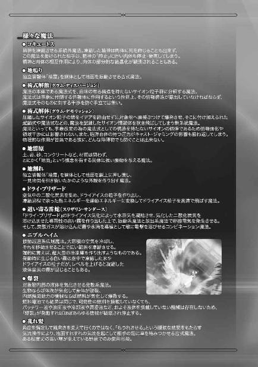

| 魔法科高校の劣等生(26) インベージョン編 (電撃文庫) | |
| 佐島 勤 | |
| KADOKAWA / アスキー・メディアワークス (2018) | |
本書（電子版）に掲載されているコンテンツ（ソフトウェア／プログラム／データ／情報を含む）の著作権およびその他の権利は、すべて株式会社ＫＡＤＯＫＡＷＡおよび正当な権利を有する第三者に帰属しています。
法律の定めがある場合または権利者の明示的な承諾がある場合を除き、これらのコンテンツを複製・転載、改変・編集、翻案・翻訳、放送・出版、公衆送信（送信可能化を含む）・再配信、販売・頒布、貸与等に使用することはできません。


［１］
それは、有り得べからざる出来事だった。
西暦二〇九七年、現地時間六月十八日、火曜日早朝。
北アメリカ大陸合衆国ニューメキシコ州ロズウェル郊外に置かれている、ＵＳＮＡ軍統合参謀本部直属魔法師部隊スターズの本部基地において、恒星級隊員による叛乱が発生した。
それも、一隊員の反逆ではない。スターズは十二の部隊に分かれていて、それぞれの隊に一等星級の隊長が置かれている。
その十二隊の内の三隊が、隊長に率いられる形で叛乱を起こしたのである。
幸いと言って良いものかどうか、叛乱に参加したのは少数の幹部のみ。だがそれで事態が矮小化することはなかった。
◇ ◇ ◇
リーナが達也と深雪の許にたどり着いた、その七十一時間前。
リーナが脱出を果たしたスターズ本部基地では、恒星級隊員同士の戦いが続いていた。
スターズは通常の階級以外に、隊員を魔法力によって恒星級（一等星級）、恒星級（二等星級）、星座級、惑星級、衛星級にランク分けしている。その最強クラスである恒星級隊員同士が、訓練ではなく本気で魔法をぶつけ合わせていた。
リーナを暗殺しようとした者たち──第三隊隊長アレクサンダー・アークトゥルス大尉。第三隊一等星級隊員ジェイコブ・レグルス中尉。第四隊隊長シャルロット・ベガ大尉。第四隊一等星級隊員レイラ・デネブ少尉。
リーナの脱出を支援した者たち──第一隊隊長ベンジャミン・カノープス少佐。第一隊二等星級隊員ラルフ・ハーディ・ミルファク少尉。同じく第一隊二等星級隊員ラルフ・アルゴル少尉。
この内、ミルファクはリーナを乗せたピックアップトラック──を改造した実験車両──を運転して彼女と共に基地を脱出している。
カノープスはアークトゥルス、レグルス、ベガの三人を一人で相手にしている。
そしてリーナが脱出する直前まで彼女を追い掛けたデネブは、アルゴルに喰らいつかれていた。
「レイラ！」
リーナを乗せたピックアップトラックの荷台から、デネブがアルゴルに組み付かれて落下する。それを目撃して、ベガが叫び声を上げた。彼女も実験車両倉庫から脱出したリーナを追って屋外に飛び出したのだが、カノープスを無視できずその場に留まっていた。
「カノープス少佐！ 貴官はシリウス少佐の裏切りを知らないの!?」
ベガのセリフが叛乱の口実なのか、それとも本気でそう思い込まされているのか、カノープスには分からない。多分後者だろうと思っていたが、それが自分の推測でしかないことも彼は弁えていた。
第十一隊のアリアナ・リー・シャウラ少尉は、第三隊、第六隊、そしてシャウラ少尉自身を除く第十一隊の恒星級隊員がパラサイト化していると断定した。彼女は精神干渉系魔法の防御に長けている。その一環として、異常な霊子波動を捕捉する能力も高い。彼女の推測は信頼できるとカノープスは考えていた。
シャウラの言うとおりであれば、第四隊のベガとデネブはパラサイトに冒されていない。この叛乱がパラサイトに主導されたものであるなら、パラサイト化していないベガは偽の情報に踊らされている可能性が高い。
ベガがリーナに好意的でないのは、秘密でも何でもない。それが嫉妬によるものだということも、多くの恒星級隊員が理解している。
ベガの影響なのか、第四隊のデネブ少尉もリーナに対して反抗的だ。同じく第四隊のスピカ中尉はベガやデネブほど露骨な態度を取らないが、内心は似たようなものだと看破するのは大して難しくなかった。
多分、その感情を利用されたのだろう。
軍人は感情に任せて行動してはならない。士官はどんな時でも自分を強く律するよう教育されている。
だが人は、大義名分に弱い。
立派な理由を与えられれば、簡単に自分自身を誤魔化してしまう。
自分は感情に動かされているのではなく、大義に従っているのだと。
そう言い訳して、己を許してしまうのだ。
カノープスはそれを、頭で理解しているだけではなかった。彼はこれまで、そういう実例を数多見てきた。
「総隊長殿はスターズを裏切ってなどいないと言っただろう！ ベガ大尉、貴官の行為こそ叛乱だぞ！」
だから彼は、ベガに言い返しながら、説得の効果は無いと諦めていた。
ベガの返答は、加重系魔法『ダブルプレス』。平面上の斥力場をダブルで発生させて、同時に二方向から圧力を掛ける魔法。大抵は正反対の方向から、向かい合わせに挟み潰す形で使用される。
カノープスは加重系魔法『プレス』を二つ、並行して発動し、ベガの魔法を相殺した。魔法そのものを解除したのではなく、相反する事象改変を定義することでお互いの魔法を破綻させたのである。
「なっ......」
ベガの口から驚きが漏れる。定義破綻で敵の魔法を無効化するテクニックは、スターズの訓練に取り入れられている。当然、彼女も知っているはずのものだ。だが意図的に定義破綻を作り出す為には相手の魔法を読み取って、後出しで自分の魔法を適切な座標に放つか、敵が使う魔法を正確に予測する必要がある。
前者には、術式解散程ではないにしても、同種の困難がつきまとう。
後者は敵の、つまりベガの手の内を読み切っていたということを意味する。
ベガが見せた動揺は、カノープスにとってのチャンスだった。
ベガへ向けて、カノープスが間合いを詰める。彼は『分子ディバイダー』で斬るのではなく、至近距離から電撃を浴びせて身体の自由を奪うつもりだった。
しかしカノープスは、四歩目で足を止めた。
振り返る時間も惜しんで、自分の右斜め後方に『ミラーシールド』を展開する。
彼の対高エネルギー光線兵器用シールドが、レグルスの放ったレーザー光弾を撥ね返した。
自分が撃ったレーザー光弾がレグルスの顔を掠めた。
じわり、と彼の背中に冷や汗が滲む。
レグルスは大急ぎで──慌てていなかったと言えば噓になる──武装デバイスを抱えて移動する。
これまでのところレグルスは、カノープスから能動的な攻撃を受けていなかった。カノープスがレグルスの所在を見つけられずにいるのか、それともベガやアークトゥルスに優先順位を置いているのか。
狙撃で攻めているのはレグルスだ。
だが、プレッシャーを受けているのもレグルスの方だった。
レグルスが得意とする『レーザースナイピング』はその性質上、一発撃てば敵の魔法師に居場所を知られてしまう。攻撃直後、敵に位置を覚られてしまうリスクがあるのは実弾による狙撃の場合も同じだが、通常の魔法が視線の通らない障碍物の向こう側からでも攻撃できるのに比べれば、隠密性に乏しいと言える。
レグルスは自分が得意とする魔法の持つこの欠点を、よく理解している。彼は一度撃つごとに、ライフル形態の武装デバイスを抱えてその場を走り去っていた。
移動に魔法は、最低限しか使わない。とにかく敵──この場合はカノープス──に捕捉されないよう、横着をせず必ずある程度以上の距離を挟んで狙撃ポイントを変えていた。
カノープスから反撃以外の攻撃を受けていないのは、その甲斐あってに違いない。
しかしその反撃が、レグルスを精神的に追い詰める。
カノープスの『ミラーシールド』に撥ね返った光弾が、さっきから何度もレグルスの身体を掠めている。その度にレグルスは肝を冷やしていた。
レーザー光は言うまでもなく、光速で進む。撥ね返ってきたエネルギー弾も当然光速だ。発射から反射光の到達までのタイムラグはゼロに等しく、射撃後にシールドを形成して反射してきたレーザー光を遮ろうとしても間に合わない。
エネルギー弾に対する防御シールドは、大別して二種類ある。
一つは、一定量以上のエネルギーを遮るもの。通常の防御シールドはこのタイプだ。
もう一つは、電磁波を反射するもの。『ミラーシールド』はこのタイプである。
レーザー弾に対しては後者の方が効果が高い。『ミラーシールド』は外からの光を反射するだけで、内側から出ていく光は遮らない。シールドを展開したままでも、『レーザースナイピング』による攻撃の妨げにはならない。
だがシールドを張れば、その事象改変の余波を察知されてしまう。自分の居場所を敵に大声で報せるようなものだ。それでは「狙撃」ではなく、単なる「遠距離攻撃」になってしまう。
原理的には射撃の直前に『ミラーシールド』を展開することで、撥ね返ってきたエネルギー弾を遮断することが可能だ。『レーザースナイピング』には魔法発動から発射までの間に不可避のタイムラグがある。『レーザースナイピング』を発動した直後に『ミラーシールド』を展開しても実害は無い。
しかし残念ながら、レグルスの武装デバイスにはその起動式が用意されていなかった。起動式無しで『ミラーシールド』を瞬時に展開することも、レグルスにはできない。パラサイトと一体化してエネルギー弾を操る魔法技能は向上していたが、シールド形成技術にパラサイト化の恩恵は無かった。
リーナ相手の狙撃ならば、反射光に対するシールドを張れなくても問題無かった。リーナの『ミラーシールド』は流れ弾による第三者の被害を防ぐ為、レーザーの入射角に拘わらず反射光が自分の前方二メートルの地面に着弾するよう設定されていた。それはそれで高度な技術だが、敵に脅威を与えないという点で軍人としての甘さは否めない。
一方、カノープスの『ミラーシールド』は光弾をほぼ百八十度反転して反射する設定になっている。厳密に百八十度ではないのでレグルスも今のところ直撃を免れているが、その幸運が今後もずっと続く保証は無い。反射角が厳密でないのは魔法の定義に「揺れ」が存在するからで、百七十八度とか百七十九度に設定されているわけではないからだ。数字で表現するならば「百八十度プラスマイナス三度」といったところだろう。その誤差がゼロになった時、光弾は真っ直ぐレグルスに返ってくる。
自分が放ったレーザーに撃ち抜かれる恐怖。
それがレグルスの精神力を少しずつ、だが着実に削っていた。
カノープスとベガが対峙している実験車両倉庫前から二百メートル程離れた場所では、第四隊のレイラ・デネブ少尉と第一隊のラルフ・アルゴル少尉が一騎打ちを演じていた。デネブはリーナを乗せた車両に移動系魔法で跳び乗ったのだが、荷台に潜んでいたアルゴルに組み付かれて諸共に転げ落ちたのだった。
デネブとアルゴルはほぼ同時に立ち上がり、問答無用の白兵戦を始めた。デネブはアルゴルが「裏切り者のシリウス」に加担していると考えて──「裏切り」の部分を除けば、デネブの判断は間違っていない──斬り掛かり、アルゴルは敵とか味方とか関係なしに喜んで応戦したのだった。
デネブが右手一本で拳銃の狙いを付け、引き金を引く。
しかしその瞬間には既に、アルゴルは射線上にいなかった。彼は十メートルの距離を一瞬でゼロにして、デネブをナイフの間合いに捉えていた。
アルゴルが大型の戦闘ナイフを一閃する。刃渡り一フート（約三十センチ）の片刃のナイフ。肉厚の峰は、サバイバルナイフと違って鋸状にはなっていない。峰側に湾曲した長いヒルト（鍔）が付いているのは、相手のナイフを絡め取る為か。魔法師の装備とは思えない、生粋のナイフファイターが好みそうな凝った得物だ。
デネブとアルゴルは、同じタイプの戦闘魔法師だ。
高速移動の魔法を駆使した接近戦を得意とする。そしてデネブは既に、自分を移動させる魔法を連続発動している状態にあった。
これは、トーラス・シルバーが開発した飛行魔法の応用技術だ。飛行魔法は一秒未満の短時間で断続的に重力制御魔法を発動し続けることで自在な飛行を可能にした術式。それをスターズは移動魔法に応用した。
極短い時間で移動魔法を断続的に発動し続ける。特に意識しなければ移動先が定義されない状態になり、移動魔法は効力を発揮しないまま自動的に破棄され、移動を意図した時にだけ自分の身体を直線軌道で運ぶ魔法が作用する。この技術によって、近接戦闘魔法師を悩ませていた、急な移動を妨げるＣＡＤ操作のタイムラグがスターズでは解消されていた。
だから、この技術により何時でも移動魔法が行使可能な状態になっていたデネブは、アルゴルの攻撃を躱そうと思えばそうすることができた。しかしデネブは、左手に持つナイフのナックルガードで、アルゴルのナイフを受け止めた。
移動魔法で後退しても、同じ技術を使っているアルゴルには次の瞬間、追いつかれる。回避しても千日手になってしまうという判断もあった。だがそれ以上に、デネブが好戦的な気分に支配されていたという面が強かった。
デネブはリーナの裏切りを心の底から信じ込んでいた。彼女は「シリウス」の名を汚すリーナの背信行為に、激しく憤っていた。
「シリウス」の称号は祖国ＵＳＮＡの、軍人魔法師の象徴。そのシリウスの裏切りは、ＵＳＮＡ軍に所属する魔法師の誇りを汚すものだ。デネブはそんな義憤──ただし誤解──に駆られていたのだった。
デネブが右手の銃をアルゴルに向ける。
アルゴルの左手が跳ね上がり、逆手に構えたナイフのブレードとヒルトの間にデネブの拳銃を挟んで絡め取った。前方に湾曲した長いヒルトは通常の戦闘ナイフに見られる物ではない。マン・ゴーシュ、あるいは釵に近い。
デネブの拳銃をがっちりホールドしたナイフを、アルゴルが外側に捻る。
手首を挫かれる前に、デネブがグリップから手を離した。
拳銃が地面に落ちるより早く、デネブが数メートルを後退する。
アルゴルは奇声を上げながら、それを見送った。
「何だそれは！」
「ヒャハハハハハハッ！ ナイフにはこういう使い方もあるんだぜぇ！」
この長いヒルトを持つナイフは、敵の得物を絡め取る目的で用意している特注品なのだろう。そういう意味でも、これはマン・ゴーシュに近かった。アルゴルの、ナイフに対する偏執的な拘りが表れている。
「この、切り裂き魔が！」
「ヒャーッハッハッハッハッ！ 銃もナイフもなんて、中途半端なんだよ！」
アルゴルの身体が、残像を置き去りにして消える。次の瞬間、彼はデネブの側面に出現していた。
アルゴルが、逆手持ちのナイフで斜めに斬り上げた。
デネブの右手は空いたままだ。彼女は左手のナイフでアルゴルの斬撃を受け止めようとした。
アルゴルの左手が、微妙に軌道を変える。
彼は自分のナイフとデネブのナイフのブレードをわざと打ち合わた。
そのままナイフを滑らせて、鍔迫り合いの状態を作り上げる。
アルゴルが右手に持つナイフの切っ先が、がら空きになったデネブの左脇腹に向く。
デネブの顔が、焦りと恐怖に引きつった。
カノープスには、部下の戦いをじっくり観戦している余裕は無かった。仮に状況が分かっていたとしても、助勢は不可能だ。
今のところ戦況は互角以上。だが一対三、数的不利は否めない。
ベガの重力魔法を同種の魔法で相殺。
レグルスの『レーザースナイピング』を『ミラーシールド』で反射。
アークトゥルスの『ダンシング・ブレイズ』を『分子ディバイダー』で迎撃。
一等星級隊員三人を相手に、三面六臂の奮戦を続けている。
それは、カノープスの技量を以てしても苦しい戦闘だった。
もしこれが本当の戦争であったなら、彼はここまで苦労しなかったかもしれない。
カノープスが本気だったならば、既にベガは斃されていただろう。
同格の隊長同士とはいえ、カノープス少佐とベガ大尉の間には、階級以上の実力差がある。カノープスは先代シリウスが健在の頃から、近距離の陸上戦闘ならばカノープスの方が強いのではないかと噂されていた猛者だ。こういう、お互いの姿が見えている真っ向勝負でベガに勝ち目は無い。現にベガの顔には、リーナを相手にしていた時には見られなかった焦りの色が見え隠れしている。
レグルスも、カノープスにとっては「無視はできないけれども本質的な脅威にはならない」相手だった。レグルスが使っている『レーザースナイピング』には、発動から発射までに一秒前後を要するという構造的短所がある。
レグルスの持ち札はこれだけではないはずだが、彼は先程から何故か『レーザースナイピング』以外の魔法を使っていない。レグルスが自ら戦術の幅を狭めている限り、カノープスの技量を以てすれば、ベガと同時に相手取ることは難しくない。
レグルスとベガだけなら、「本気で戦えない」というハンデ付きであっても、この戦闘は短時間でカノープスの勝利に終わっていただろう。彼らが二人ずついても、それは変わらなかったに違いない。
だがアークトゥルスは、強敵だった。
スターズ第三隊隊長、アレクサンダー・アークトゥルス大尉。スターズで主流の現代魔法と北アメリカ大陸先住民族の古式魔法──精霊魔法を、双方高いレベルで修得している戦闘魔法師。パラサイトと同化したことより精霊を使役する魔法が使えなくなっていたが、その代わりパラサイトの力を存分に引き出すことで失った以上の戦闘力を得ている。
カノープスがレグルスの光弾を撥ね返し、ベガに急迫する。
しかし横から叩き付けられた風の塊に、カノープスはステップバックを余儀なくされた。
アークトゥルスの『風槌』だ。
殺傷力は低い。相手の体勢を崩すことが目的の魔法だが、直径二メートル、秒速六〇メートルの局所的な突風を躱す為に、カノープスは五メートル以上の距離を下がらなければならなかった。
後退したカノープスを追って、石の鏃が飛ぶ。矢ではない。矢尻だけだ。鋭く削って形を整えた、黒曜石の鏃による『ダンシング・ブレイズ』。
通常『ダンシング・ブレイズ』にはナイフ形態の武装一体型ＣＡＤを用いる。魔法の発動から投擲までワンアクションで済ませられるという手軽さと確実さがその理由だ。
だがそれは、『ダンシング・ブレイズ』を使う得物は武装デバイスでなければならないという意味ではない。魔法を発動する主体はＣＡＤではなく魔法師。それはどんな魔法でも変わらない絶対的な原則だ。
そもそも『ダンシング・ブレイズ』は投擲武器の飛翔軌道を操作する魔法であって、投げる武器自体は何でも良い。刃物である必要すら無い。極端なことを言えば、道端の石ころでも『ダンシング・ブレイズ』の「弾」になる。
異なる軌道を描いて同時に襲い掛かる四つの鏃。その全てを、カノープスは日本刀形態の武装デバイスから伸ばした『分子ディバイダー』で打ち落とした。
二つに割れた黒曜石の鏃が地面に落ちる。『ダンシング・ブレイズ』の対象として定義された形状が損なわれたことで、魔法が定義破綻により強制終了したのである。
しかしアークトゥルスの攻撃は、それで終わりではなかった。矢継ぎ早に繰り出される魔法の所為で、カノープスはまだアークトゥルスの隠れている場所を特定できずにいる。
風が吹き、鳥の羽が舞った。白頭鷲の羽──を模した、イミテーション。合成繊維とチタンの針で作った羽型ダーツだ。極細の高強度繊維は、スピード次第で人体の皮膚どころか革製のプロテクターをも切り裂く。
何十枚もの羽が風に乗ってカノープスに襲い掛かる。アークトゥルスが得意とする魔法は、精霊魔法と移動系魔法。特に気流を作り出し操作する術式に長けている。この羽は群体制御で操られているのではなく、気流に乗って飛んでいるだけだ。
『分子ディバイダー』で気体に干渉することはできない。一枚一枚の羽は風に流されているだけなので、武装デバイスで打ち落としても意味は無い。
カノープスは圧縮した空気塊を爆発的に膨張させる魔法『爆風』で対抗した。自分にも押し寄せる爆風を流体に特化した対物シールドで防ぎ、彼は再度ベガへ突進した。
そのカノープスの姿を、レグルスはちょうど真後ろから見ていた。
強引に見える攻撃は、三対一の不利を凌ぎきれなくなったからだろうか。レグルスの脳裏に、そんな推測が浮かぶ。
訓練用に置かれていた廃棄大型車が宙を舞った。
ベガの重力制御魔法だ。
それをカノープスが、加重系魔法で叩き落とす。走りながらＣＡＤを操作してもカノープスの姿勢に乱れは生じない。だが彼の意識は間違いなく、自分に向かって飛んでくる大型車両へ向いていた。
レグルスは、そう判断した。
ライフル形態の武装一体型ＣＡＤ、その引き金を引く。
起動式の読み込みから魔法の発動まで〇・二秒。この数値は特化型ＣＡＤを使っているとはいえ、かなり速い。
元々『レーザースナイピング』はレグルスの得意術式で、専用ＣＡＤの性能も相俟って魔法の威力にもスピードにも優れていた。それがパラサイトになった影響で、魔法発動速度がさらに向上している。
しかし、レーザー光弾の増幅に掛かる時間は機械的・物理的なものであり短縮できない。最初からより高エネルギーのレーザー光を発生させればこの時間は短縮できるし、パラサイト化で向上した事象干渉力を以てすれば不可能ではない。
だがその為には、レグルスが使っている武装デバイスを高エネルギー用に改造しなければならない。あるいは、新しい武装デバイスを作成するか。
レグルスたちがパラサイトになったのは三日前。たった三日間では武装デバイスのアップグレードまで手が回らなかったのだ。
それでも、カノープスがベガに意識を取られている今ならばタイムラグを突かれて反撃されることはない。それがレグルスの計算だった。
しかし、レーザー光弾がまさに発射されようとしたその直前。
カノープスの後ろ姿が、レグルスのスコープの中から消えた。
透明化したのではない。
人のシルエットの代わりに、切り取られた景色が登場した。
そこに映っているのは、レグルス自身が潜んでいる格納庫──。
レーザー光弾が発射される。
光速で返ってくるエネルギー弾に、見て、対処することは不可能だ。
反転百八十度、正確に反射されたエネルギー光弾はレグルスの武装デバイスを破壊し、焼けた破片が彼の右目を潰す。
絶叫を上げて、レグルスは戦闘をリタイアした。
（まず一人）
レグルスの悲鳴を聞いて、カノープスは心の中でそう呟いた。
彼は別に、レグルスを罠にはめたわけではない。ベガへ近づいていったのは彼女に大きな怪我をさせることなく無力化する為だし、レグルスに対する反撃は警戒を怠っていなかっただけにすぎない。カノープスはただ、レグルスが期待したように視野を狭めていなかっただけだ。
だがこれで戦闘が楽になるのは確かだ。レグルスの魔法がどうこうではなく、単純に、一対三から一対二になったのは大きい。
彼がそう考えた直後、二つの苦鳴がカノープスの鼓膜を叩いた。
反射的に声が放たれた方向へ目を向ける。同時に後退してベガから距離を取った。無意識的に選択した、安全を確保する為の行動だ。
そこではアルゴルがデネブの脇腹をナイフで抉っていた。
やり過ぎだ、とカノープスは心の中でアルゴルを 責する声を上げる。
責する声を上げる。
しかし、よろめき、倒れたのは、デネブだけではなかった。アルゴルの身体もまた、前のめりに崩れ落ちる。デネブを押し倒すような格好だが、襲い掛かろうとしているのでないことは遠目にも明らかだった。
アルゴルの背中がべっとりと血で濡れているのは、カノープスの位置からは見えない。いや、じっくり見れば分かったかもしれないが、敵の攻撃を警戒しながらの状況で、そんな時間は取れなかった。
だが、アルゴルが新たな敵から攻撃を受けたのは分かった。
彼自身に、その矛先が向けられたからだ。
細く鋭い、槍状に変形した『分子ディバイダー』の力場がカノープスに伸びる。
彼はその力場を同じ魔法で切り払った。
（スピカ中尉か！）
その魔法を放った相手を視認するより早く、彼にはその術者の正体が分かっていた。
この『分子ディバイダー』の変形バージョン、『分子ディバイダー・ジャベリン』の使い手はスターズでも一人だけだ。
スターズ第四隊所属一等星級、ゾーイ・スピカ中尉。
カノープスの視線の先で、早朝にも拘わらず夏用の軍服をきちんと着込んだ女性隊員が真っ直ぐに伸ばした右腕でカノープスを指さしていた。
その伸ばされた人差し指の先に付けられた金属製の、湾曲していない爪。日本の暗器である『猫手』の一種に似たそれが、『分子ディバイダー・ジャベリン』の照準器だ。
再び、細く尖った分子破壊の力場がカノープスへ伸びる。攻撃範囲を狭めた代わりに、射程距離を伸ばした中距離用『分子ディバイダー』。
カノープスは再びその穂先を切り落とし、返す刀で彼を閉じ込めようとしたベガの重力場を切り裂く。
いや、『分子ディバイダー』が『重力制御魔法』を切り裂いたという表現は誤解を招くものだろう。重力制御は歪曲度という空間の性質を改変する魔法。『分子ディバイダー』もまた空間の性質を改変するもの。「正常な空間の重力場だけを改変する」という事象改変と「正常な空間の電磁気的性質だけを改変する」という事象改変が衝突して、両方の魔法が破綻したのである。
その瞬間、カノープスの『分子ディバイダー』も途切れた状態にあった。
そこへアークトゥルスのトマホークが迫る。
カノープスは『分子ディバイダー』を再発動しながら、全力で横に跳んだ。
カノープスの残像を、トマホークが断ち割る。
訓練場の乾いた地面を転がって起き上がったカノープスへ、空中で反転したトマホークが襲い掛かった。
これは本来、『ダンシング・ブレイズ』に可能な攻撃ではない。『ダンシング・ブレイズ』はあらかじめ投擲武器の飛翔軌道をプログラムしておく魔法であって、得物の遠隔操作はできないはずのものだ。
精霊魔法の応用で「念」を込めた武器との間にある種の感応状態を作り出し、そのパスを通じて新たな『ダンシング・ブレイズ』を上書きする。これは現代魔法師であり古式魔法師でもあるアークトゥルスの、独自技能だった。
異なる定義の魔法上書きによる必要な干渉力の増大からは逃れられない。新しい軌道の設定は、精々五回が限度だ。だが設定する軌道は直線、放物線ではなく、自在に上昇、下降、旋回する『ダンシング・ブレイズ』のもの。一度の投擲で、五回どころか三回も軌道設定を変えられれば大抵の敵は逃がさない。
アークトゥルスはパラサイト化したことにより、精霊魔法が使えない状態になっている。だがそれは「精霊」と定義された独立情報体にアクセスする能力を失っているだけで、古式魔法の技術を喪失したわけではない。独立情報体を使わない古式魔法の技能は、パラサイトと同化したことでむしろ向上していた。
襲い来るトマホークを、カノープスは片膝立ちからの斬り上げで迎撃した。
スピードはともかく、力が入らない体勢でのスイングだ。刃筋も立っていない。刀を振るというより、棒を振り回す動作に近い。
にも拘わらず、カノープスの斬撃はアークトゥルスの思念で魔法的に強化されたトマホークを真っ二つに断ち割った。
日本刀に似たブレードの、刃で切り裂いたのではない。元々カノープスの武装デバイスは、鋼の刀身で斬る為の物ではなかった。刀身は単なるガイドツールであり、切断を担っているのは魔法の刃。分子間結合力反転フィールドが正確に形成されていれば、ブレードの傾きが多少ぶれていても実害は無い。
二つに分かたれたトマホークは、地に墜ちて飛ぶことを止めた。
念を込められ感応状態にあった得物であっても、定義時点の形を失えば魔法が破綻するのは通常の武装デバイスと同じだ。
アークトゥルスからの追撃が途切れる。『ダンシング・ブレイズ』が媒体として有形の実体物を必要とする以上、事前に用意できる「弾」の数には限界がある。アークトゥルスは「弾切れ」を起こしたのだった。
カノープスは未だ、アークトゥルスが何処に隠れているのか発見できていない。だが一時的にであれアークトゥルスからの攻撃が無くなったのは、敵の戦力を削るチャンスだ。
今、カノープスが視認している敵はベガとスピカの二人。
スピカの『分子ディバイダー・ジャベリン』は初見殺しの性格を持っているが、指さした直線上の狭い範囲にしか効力を発揮しないという術式の性質を知っていれば対応は難しくない。
カノープスはより厄介な相手であるベガを、先に無力化することにした。
スピカに牽制の魔法を放ち、ベガへ『分子ディバイダー』で斬り掛かる、と見せ掛けて、カノープスはプラズマ化した空気の弾丸を放った。
『分子ディバイダー』を警戒していたベガは、完全に虚を突かれてプラズマ弾をまともに喰らってしまう。カノープスは致命傷を避ける為にプラズマの密度を余り上げていなかったが、それでも全身を一時的に麻痺させるには十分な威力があった。
ベガが仰向けにひっくり返る。完全に気絶してはいないようだが、手足が自由にならない様子だ。
カノープスがスピカへ振り返る。彼はスピカを片付けて、アークトゥルスとの一対一に持ち込むつもりだった。
しかしカノープスの視線の先には、スピカの華奢なシルエットだけでなくアークトゥルスの分厚い身体があった。
「カノープス少佐、抵抗を止めてもらいたい」
視界に新たな人影が入ってくる。
イアン・ベラトリックス少尉と、サミュエル・アルニラム少尉。
先日のマイクロブラックホール実験でパラサイト化したスターズ第六隊の二人は、両側から腕を抱える格好で負傷し意識が定かでないアルゴルを引きずっていた。
スピカが目を見張っている。彼女にとっても、この増援は意外なものだったようだ。
「......人質ということか？」
カノープスが嫌悪感を隠さぬ口調で、アークトゥルスに話し掛ける。
「シャウラ少尉の身柄も先程確保した」
アークトゥルスはカノープスの問いには答えず、さらに手札を一枚出した。
「カノープス少佐。貴官の目的はシリウス少佐を逃がすことだろう。その目的は果たしたはずだ。これ以上、被害を拡大する戦闘は無意味だと思わないか？」
「無意味な叛乱を起こしたのは貴官たちだ」
カノープスの非難に、アークトゥルスは無言で応えた。
パラサイト化した相手にそのような理屈は通用しないと、素よりカノープスにも分かっている。
カノープスは日本刀形態の武装デバイスを手放した。
「......投降する」
「身の安全は保証する」
「肉体だけか？」
カノープスの皮肉な問い掛けに、
「貴官を仲間にするつもりは無い」
アークトゥルスは、面白みのない表情で答えた。
◇ ◇ ◇
カノープスの予想に反して、彼が連れて行かれたのは独房ではなく、他部署の高級士官が基地を訪問する際に使用する個室だった。
もちろん武装デバイスを含めた武器は取り上げられていたが、脱走は難しくないように思われる。ＣＡＤは現代魔法の使い手にとって今や必須とも言えるツールだが、魔法を使う為に絶対不可欠というわけではない。また魔法を使い難くする手段はあっても、魔法を完全に使えなくする一般的な技術は、まだ確立されていない。特殊な精神干渉系の術式によって他者の魔法発動を阻害することが可能という話はカノープスも聞いていたが、少なくともスターズには、そのような魔法を使える隊員は在籍していない。
だがカノープスは、脱走どころか部屋を抜け出すこともしなかった。何時間経っても食事は運ばれてこなかったが、彼は備え付けの冷蔵庫にあったミネラルウォーターだけで夜まで過ごした。
呼び出しの使者がやって来た時には、二十一時を過ぎていた。
彼はベラトリックス少尉とアルニラム少尉に挟まれて、司令官室に出頭した。
司令官デスクの前に、椅子が一つ置かれている。
一方の壁際にはアークトゥルスとベガが同じような椅子に腰掛け、もう一方の壁際には第五隊隊長のカペラ少佐がムスッとした顔で座っていた。
「カノープス少佐、掛けたまえ」
ウォーカー基地司令の言葉に従い、カノープスは敬礼の後、デスク正面に腰を下ろす。
「さて。カノープス少佐、貴官にはラルフ・ハーディ・ミルファク少尉の脱走幇助と、これに伴う傷害の嫌疑が掛けられている」
カノープスの顔に意外感が浮かぶ。
その反応を、ウォーカーは予想していた。
「シリウス少佐の渡航については、正式な軍命の形式が整っているのでね。さすがはバランス大佐、大したものだ」
つまり、リーナに関しては罪に問う隙が無かったということだ。
カノープスの表情から意外感が消え、ポーカーフェイスに戻った。
「日本の戦略級魔法師、司波達也に対して、上層部の意見が割れているのは貴官も知っていると思う」
「存じ上げております」
達也をあくまでも脅威として抹殺するか、脅威ではあるがＵＳＮＡの世界戦略に組み込んで利用するか。ＵＳＮＡ軍の上層部は、この二つの意見で真っ二つと言って良い状態だった。抹殺派は日本を西太平洋における競合相手と考える勢力とほぼ一致しており、利用派は日本を同盟国として大亜連合、新ソ連が太平洋に進出する出口を塞ぐ防波堤に使おうと考える勢力とほぼ重なっている。
「だが貴官ならば、あの戦略級魔法は余りにも強力すぎて、利用など不可能だと理解できるはずだ」
「............」
ウォーカーの語り掛けに、カノープスは沈黙で応じた。
ウォーカーは軽く眉を顰めたが、すぐ元の事務的な表情に戻って話を再開した。
「私は、司波達也を抹殺すべきだと考えている。アークトゥルス大尉、ベガ大尉も同じ意見だ」
「司令官殿、彼らの健康状態には重大な懸念事項があります」
カノープスの婉曲な訴えに、アークトゥルス本人が応じる。
「カノープス少佐。確かにこの身はパラサイトと成り果てましたが、祖国に対する忠誠は変わりません。それこそが私のコアになるスピリットです」
アークトゥルスの向かい側で、カペラがあからさまに顔を顰めた。
「アークトゥルス大尉の処遇については、現在検討中だ」
ウォーカーはカノープスの警告に耳を貸さなかった。
カノープスはこの時点で、ウォーカーがパラサイトの精神干渉下にあることを確信した。相手を人形化する精神干渉ではなく、思考誘導。理性のストッパーを麻痺させ、本人が元々懐いていた欲求や危機感を刺激することで、操られていると覚らせずに思いどおりにコントロールする術中にウォーカーは嵌まっている。──カノープスはそう推測した。
「少佐。貴官は司波達也の暗殺に賛同できないようだな」
「たとえ敵対が不可避であっても、暗殺などという手段を取るべきではありません」
「......そのようなきれい事が通用する世界でないことは、貴官も良く知っていると思うが？」
「きれい事を否定しなければならない事案とは思えません」
カノープスは、ダーティな手段そのものを否定はしなかった。建前どおりでは解決しないことがある。その程度のことは、言われなくてもカノープスは自身の経験から思い知っている。
だが、歯止めは必要だ。「必要だから」という言い訳を無制限に適用して自分たちを甘やかしていると、軍はたちまち、単なる暴力集団に堕落してしまう。それはカノープスの自戒でもあった。
「......カノープス少佐。取引をしないか」
ウォーカーはカノープスの説得を諦め、話題を変えた。
「司法取引という意味でしょうか」
「そうだ」
カノープスの反問は、非合法な駆け引きには乗らないという牽制球だった。だがウォーカーにあっさり肯定されて、カノープスは思わず緊張を緩めてしまう。
その隙に乗じて、ウォーカーが取引のペースを握る。
「軍法会議になれば、参謀本部が介入してくるだろう。当部隊の特殊性を考えれば、それは避けられない。現在の状況で少佐の軍法会議が開廷されれば、法廷は司波達也抹殺派と利用派の口論の場となり、両派の対立を激化させるに違いない。軍の運営にも深刻な悪影響を及ぼす恐れがある」
ウォーカーの推測に、カノープスは異を唱えなかった。
確かに、ありそうな展開だからだ。とはいえその対立から軍が機能不全に至る可能性は、極めて低い。上層部はそれ程、愚かではない。
普段であれば、カノープスは反論していただろう。だが上官にいったん主導権を握られてしまうと、相手が正気ではないと分かっていても否定的な意見は中々出し難かった。
「貴官がレグルス少尉に対する過失傷害を認めるならば、ミルファク少尉は脱走ではなく任務中の行方不明として処理しよう。アルゴル少尉とシャウラ少尉についても、刑の軽減を約束する」
「──具体的には、どのような刑罰になりますか？」
カノープスは既に、抗弁の無為を覚っていた。
「一年間の禁固刑だ」
司法取引にしてはかなり重い実刑だ。だがパラサイトにとって自分が邪魔者であることを考慮すれば、彼らから物理的に距離をとれる禁固刑は好都合かもしれないとカノープスは考えた。
「また、刑罰の期間は潜入任務中として処理しておこう。貴官の軍歴には傷をつけないし、ご家族にも心労を負わせないよう配慮する」
「......分かりました。ただ、私からも二つ条件があります」
「言ってみたまえ。可能な限り対応しよう」
ウォーカーの姿勢は、意外な程に柔らかい。思考誘導に潜在意識が抵抗しているのか、あるいはカノープスの戦力的な価値を認めて決裂を避けようとしているのか。
どちらもありそうな話だった。
「収監先はミッドウェー刑務所を希望します」
「......それでいいのかね？」
ウォーカーが真意を探る目付きでカノープスの表情を窺った。ミッドウェー島にある軍刑務所は社会から完全に隔離された、最も不人気な──つまり、重罪人が収監される場所だ。
「その方が司令官殿にとっても都合が良いのではありませんか？」
自分に邪魔をされる心配をせずにすむだろう、とカノープスが皮肉る。
ウォーカーは一瞬顔を顰めたが、すぐに不快げな表情を消した。
「分かった。そのように取り計らおう。それで、もう一つの条件とは？」
「アルゴル少尉とシャウラ少尉も、同様の措置をお願いします」
「二人もミッドウェー軍刑務所に保護しろということかね」
「あの二人にも刑が与えられるのでしょう？」
ウォーカーの嫌味に、カノープスは全く動じなかった。
「──取引成立だ。ミッドウェーには、カペラ少佐に護送してもらう」
表情を消して、ウォーカーが告げる。
壁際の席で、アークトゥルス大尉とベガ大尉が満足げな微笑を浮かべた。
彼らの向かい側に座るカペラ少佐は、終始不機嫌そうな表情のままだった。
カノープス、アルゴル、シャウラに対する禁固刑は、早くも翌日に正式決定された。
この異常に迅速な手続きにペンタゴンでは不審を覚えた者も多い。
だがその決定を妨げようとした者は、バランス大佐を含めて、存在しなかった。
［２］
二〇九七年六月二十三日、日曜日の朝。
ＵＳＮＡ軍参謀本部直属魔法師部隊『スターズ』の総隊長『アンジー・シリウス』、本名アンジェリーナ・クドウ・シールズは小型ＶＴＯＬの機中にあった。
アンジェリーナ、通称リーナは、パラサイトと同化した隊員に反逆者の汚名を着せられ、本部基地内で暗殺され掛かった。四葉家と密かに手を結んでいる参謀本部のバランス大佐の手引きで日本に逃れ、一昨日まで四葉分家の黒羽家に身を寄せていたが、昨晩は達也と深雪の自宅マンションに一泊した。
そして今、新たな潜伏先へ移動中だ。房総半島の南海上約九十キロ、三宅島の東約五十キロの海上に浮かぶ『巳焼島』。二十一世紀最初の年に海底火山の活動によって新たに形成されたことから『二十一世紀新島』とも呼ばれる小さな島だ。小さいと言っても面積は今や八平方キロにまで成長している。これは東京の国立市とほぼ同じ広さだ。
この島がリーナの新たな潜伏先だった。
巳焼島は全島が四葉家の私有地になっている。正確には四葉家が支配する不動産会社の所有地だが、実態は変わらない。
四葉家がこの土地を手に入れた背景には、島の特殊な歴史がある。
巳焼島には元々、国防海軍の補給基地が置かれていた。しかし二〇五〇年代の度重なる噴火で基地は放棄され、第三次世界大戦、またの名を二十年世界群発戦争終結後、軍民を問わない魔法師専用の秘密刑務所になり、その管理は四葉家に委託された。四葉家以外には強大な力を持つ魔法師犯罪者を完全に管理できなかったからだ。
四葉家は秘密刑務所の業務を引き受けることで、巳焼島を取得したのである。
しかし刑務所は二〇九三年一月に島の東側──刑務所の反対側──で起こった噴火をきっかけに移設が検討され、二〇九五年には移転先が決まった。そして二〇九七年五月、つまり先月、新たな秘密刑務所が完成し囚人の移動も完了していた。
囚人用の施設は改装が必要だが、監督者用の建物はすぐにでも居住可能だ。また刑務所に使われていなかった島の東側には、魔法実験施設の建設計画が進められていた。四月には着工するばかりとなっていたが、ここに来て達也のＥＳＣＡＰＥＳ計画に基づく魔法核融合炉エネルギープラントがこの地に建設されることになった。
小型ＶＴＯＬには、達也と深雪も同乗していた。リーナを案内兼監視するのが第一目的だが、達也にはプラントの建設予定地を視察するという目的もあった。
ＥＳＣＡＰＥＳ計画を巳焼島で実行することに決まったのは先月末のことだ。達也は何度か巳焼島を訪れたことがあり地形も気候も理解しているが、そこに何かを建てるという視点で見たことはない。自分の計画に不都合な自然条件が無いかどうか、一度チェックしておく必要があるのは確かだった。
「達也様、深雪様、シールズ様、まもなく着陸致します」
小型ＶＴＯＬを操縦している花菱兵庫が、達也たちに声を掛ける。このＶＴＯＬはパイロットを除いた定員が六名で、操縦席と客席の間の仕切りが無い。兵庫の声は乗用車感覚で達也たちに直接届いた。
「結構広いわね。インフラも意外に整っているみたい」
島を見るのが初めてであるリーナが、見たままの感想を述べる。
「そうね......。随分変わったわね」
深雪は過去に一度来ているが、その時の殺風景なたたずまいとは様変わりした景色に驚きを隠せなかった。
「ミユキは、この島に来たことがあるの？」
「ええ、四年と少し前に」
四年前に訪れた時は、西側の海岸地域に刑務所施設群があるだけで、島のほとんどは黒い岩と砂の溶岩原だった。
だが今眼下に広がる巳焼島には、島の北部に短い滑走路を備えた飛行場と、それに隣接した淡水化施設、中央の山裾に地熱発電所、東部に十棟以上の中層ビルが建ち並んでいる。
達也もまた意外感に打たれていたが、彼が驚いているポイントは、深雪とは違っていた。
（......あれは感応石の精製工場か？）
（あちらは大型電算センター......）
達也はＦＬＴの研究所で見覚えがある特徴を備えた建物を、ビル群の中に見付けていた。
そして不意に、納得した。
この島に四葉家の新たな本拠地を造る。
達也は真夜の口から、その計画を教えられていたではないか。
巳焼島に、ＥＳＣＡＰＥＳ計画のプラントを建設する。
だがそのプランは、四葉家第二の本拠地を排除するものではない。
真夜は、四葉家は、ここにオープンな実験プラントを建設しながら、その横に閉ざされた研究施設を造ろうとしている。そしておそらくは、ＥＳＣＡＰＥＳ計画の為に集まった研究者の中から、特に優れた者を四葉家内部に取り込もうと考えているのだろう。魔法技術の、さらなる高みへと至る為に。
小型ＶＴＯＬがヘリポートに着陸した。ここの滑走路は、大型機が離着陸できる長さはないが、ＶＴＯＬやＳＴＯＶＬでなくても五十人乗りクラスの小型ジェットまでなら十分に離着陸可能だ。巳焼島開発に懸ける四葉家の本気が窺われる。
たださすがに、鉄道やモノレールは無かった。四人は魔法師用刑務所を管理していた四葉分家の一つ、真柴家が用意した自走車に乗って──運転したのは兵庫だ──島の西岸へ向かった。
小規模な活動が続いている火山を回り込んで、刑務所管理スタッフ用の居住棟に到着。道中、左右には以前どおりの溶岩原と岩だらけの海岸が続いていた。島の開発は、刑務所とは反対側の東側に力点が置かれているようだった。
囚人がいなくなり、管理スタッフも約半数が島を去った。いなくなったのは主に看守で、囚人と一緒に新たな監獄へ移っている。
施設の運営要員は丸々残っている。居住棟も、すぐに入居できる状態に維持されていた。
「フーン......。ホテルと言うよりコンドミニアムね」
案内された部屋を一通り見て回ったリーナが漏らした感想だ。その印象には、達也も深雪も異論は無かった。
「食材も冷蔵庫とストッカーに用意されているし、服以外は当面必要なさそうだな」
「......そうね」
リーナが微妙な顔をしているのは、男性の達也に着る物の心配をされたのが複雑だったからだろうか。同じく男性の部下であるミルファクにもアメリカ脱出直前に似たようなことを言われたばかりだから、余計に、なのかもしれない。
「この管理施設には住居だけでなく日用品店舗や訓練室、レクリエーション室も備わっております。それらもご覧になっては如何でしょうか？」
そう勧めたのは、案内役を何時の間にか刑務所スタッフから奪い取っていた兵庫だった。
達也がリーナに視線で意思を問う。今日の視察は、巳焼島の刑務所施設がリーナの潜伏先として使えるかどうかを本人に確かめてもらう為のもの。リーナは、自分には選択肢が無いと思い込んでいたが、これは彼女の誤解である。リーナが「嫌だ」と言えば、四葉家は次の隠れ家を用意していた。ただ安全度がここよりも劣るというだけだ。
「......案内してもらえますか」
リーナはここでも、自分に「Ｎｏ」を口にする権利は無いと誤解していた。彼女は避けられないセレモニーのつもりで、兵庫に向かってそう答えた。
「ねぇ......。ワタシ、ここに住ませてもらってホントに良いの？」
これが施設を一巡りして部屋に戻ってきたリーナの第一声だった。
「気に入ったようで何よりだ」
自分が答えるのも変ではないかと達也は感じていたが、リーナが訊ねた相手は達也だ。彼は取り敢えず、思い浮かんだセリフを返した。
「これで気に入らないなんて言ったら罰が当たりそう......」
リーナの声には疲労感が滲んでいる。肉体的な疲労ではなく精神的な疲労、驚き疲れているのだった。
彼女が見せられた数々の施設は、決して豪華ではなかった。
ただ、不足している物が無かった。
生活する上で、不自由を予想させる要素が全く無い。
それはこの部屋も同じだ。外出できない点を差し引いても、スターズの宿舎より快適かもしれない。それはリーナが想像していた「窮屈な逃亡生活」とは、かけ離れたものだった。
「それに、あんな物まで見せてもらって良かったの......？」
リーナの瞳が不安げに揺れている。
彼女を主客にしたガイドツアーの行き先は、刑務所施設だけではなかった。建設中の研究所もツアーに含まれていた。
居住関連施設を一回りした後、達也、深雪、リーナの三人は刑務所のヘリを使って島の東部に向かった。操縦したのは、やはり兵庫。刑務所の人間を信用していないというより、兵庫は達也の「運転手」を他人に譲る気が無いようだ。兵庫が達也に仕え始めてからまだ二ヶ月程しか経っていないが、兵庫は達也に、忠誠心を捧げるに値する何かを見出したのだろう。
早くも達也の忠臣の座に収まった感のある兵庫が最後に案内した場所は、達也が着陸直前の機中から目に留めた感応石の精製工場だった。
感応石はＣＡＤの心臓部だ。その基本的な製造方法は広く知られている。軍事技術として開発されたＣＡＤ関連の技術は、特許で保護されていない代わりに公開もされていなかった。だが同盟国間の技術供与やスパイ合戦で技術流出が進み、今では秘匿する意味が無くなっている。
しかしそれは、あくまでも基本的な技術。事実上公開されている技術で感応石は製造できるが、高性能な感応石は精製できない。
感応石は想子信号と電気信号を相互変換する部品だ。しかし全ての感応石が同じように想子信号を電気信号に変換し、電気信号から想子信号を発するわけではない。設計次第で性能が変わるし、仕上げ加工によって効率がさらに変化する。
ある感応石は想子信号を電気信号に変換する効率が高く、別の加工ラインで精製された感応石は電気信号を想子信号に変換する効率が高い。微弱な信号を変換する能力に秀でた石もあれば、信号を忠実に再現する能力に秀でた石もある。
例えば感応石の総合的能力で高い評価を得ているのはドイツのローゼン・マギクラフト、イギリスのマクレガーワンド、アメリカのマクシミリアン・デバイスの順だが、信号を再現する正確性に限って言えば日本のＦＬＴが世界一の企業だと言われている。──軍や国の研究機関が直接製造する感応石の性能は、詳しく分かっていない。
感応石の設計は各企業の、そして各国家の持つ重大な知的資産だ。感応石の精製工場を部外者に見せるのは、魔法産業の常識からしてあり得ないことだった。リーナの「あんな物まで」という言葉は、この「常識」を反映していた。
「それが理解できるなら、無闇に近づこうとは考えないだろう？」
「......そんな分別のない真似、最初からしないわよ」
達也の回答に、リーナは不満を露わにする。だがその語調は、力強さに欠けていた。
この島にどのくらいの期間、隠れていなければならないのか、今の段階では分からない。
潜伏が長期間に及べば、緊張感も遠慮も薄れていくに違いない。あのエリアの重要性を理解していなかったら、うっかり足を踏み入れて警備員と無用なトラブルを起こしていたかもしれない。
その可能性を、リーナは自分で否定しきれなかった。
「そうだな」
達也はリーナの言い分を軽く受け流して、兵庫へと振り返る。
兵庫は視線による合図だけで、何時の間にか手に持っていたお洒落な封筒を達也に渡した。
「リーナ、この部屋の鍵だ」
「ア、アリガト......」
リーナは封がされていない封筒を開けて、中に入っている物を確かめた。
出てきたのは、金色のＩＣカードが一枚。
「そのカードで、食事やショッピングを含めて、島内の全施設を自由に使える。紛失しても再発行は可能だが、少し面倒な本人確認が必要だ」
「分かったわ。気をつける」
リーナはカードを両手で大切そうに握り込んだ。
「何かあったら、部屋の固定端末から電話してくれ。俺宛じゃなくても良い。深雪にも亜夜子にも、四葉本家にもつながるようになっている」
「了解よ」
「他に訊きたいことは？」
「今は無い。分からないことがあったら電話するわ」
「そうしてくれ」
達也が深雪へと振り返る。
達也の斜め後ろにいた深雪が、半歩前に出た。
「じゃあ、リーナ。ごゆっくり。また会いに来るわ」
「ええ。本当に、色々とありがとう」
リーナが少し照れくさそうに、小さく手を振った。
深雪はクスッと笑って、軽く手を振り返した。
◇ ◇ ◇
「達也様、もう一つ見ていただきたい物があるのですが」
駐車場に向かっていた達也に、すぐ後ろに付き従う兵庫がそう話し掛けた。
今日はこの島の視察以外、予定を入れていない。達也は「良いですよ」と答えて、兵庫に案内するよう指示した。
兵庫が達也と深雪を連れて行った先は、滑走路の脇にあるガレージ。そこには淡いブルーで塗装されたショートノーズの四輪車が一台だけ駐まっていた。
「変わったデザインですね。ミッドシップ......というわけでもないようですし」
達也の言うように車体の中央部が機関部になっているが、そこに収まっているのはエンジンではなかった。水素エンジンやエタノールエンジンならばミッドシップレイアウトもあり得るが、電動車の場合は前輪用、後輪用に分けて前後にモーターを配置するか、各ホイール内部にモーターが組み込まれているデザインが主流だ。そしてこの自走車は明らかに電気モーター駆動の特徴を備えていた。
「この車は『エアカー』でございます」
「......飛行魔法車両、という意味ですか？」
達也は、軽くではあるが、目を見張っている。驚きを隠し切れていなかった。
「然様でございます。開発自体は飛行機能付きバイク『ウイングレス』と並行して二年前に着手された物ですが、先々月、達也様から頂戴したアイデアでようやく完成にこぎ着けた、とうかがっております」
確かに達也は今年の四月、大質量物体用の飛行魔法新スキームを考案した。しかし色々と忙しくて、ラフなプランを本家に提出したまま意識の片隅にしまい込んでいた。
それが思い掛けない形で結実していたのである。達也としては、不意を打たれた気分だった。
「この車体は公道用自走車としての登録を済ませておりますので、日常的にお使いいただけます」
「なおかつ、この島への往来にも使えるということですか？」
「無論、お呼びがあればすぐに参上致しますが」
兵庫は神妙な表情で答えたが、達也は最初から自分が蔑ろにされているなどと思ってはいなかった。
「お兄様、試してみられては如何ですか？」
深雪が横から試乗を勧める。
「いや、今日は止めておこう」
達也は表情に小さな迷いを見せながら、首を横に振った。しかし、この『エアカー』に興味が無いわけではなかった。
「明日、テストします」
「かしこまりました。メカニックにはそのように伝えておきます」
テスト走行中、深雪が放置状態になるのを達也は嫌ったのだ。空陸両用車『エアカー』のテストは深雪が学校に行っている時間に行うことを、達也は決めた。
◇ ◇ ◇
達也たちが巳焼島を訪れていた頃。
日曜日にも拘わらず、外務省と防衛省はちょっとした騒動に見舞われていた。
ＵＳＮＡから日本に対し、外交ルートを通じて内密の要求があったのだ。
日本で消息を絶ったアンジー・シリウス少佐の捜索協力依頼。発見次第保護し、大使館に引き渡して欲しいという内容だった。
事前の通告なく高級士官を入国させたことに対して、日本政府はＵＳＮＡに抗議した。だが軍事目的の来日ではないと反論されれば、たとえそれが見え透いた噓でもそれ以上は責められない。
日本政府はＵＳＮＡに対して、アンジー・シリウスの捜索と保護を約束した。
「アメリカの要求は厚かましいものですが、同時にもっともだと思われます。ただその対処が何故、この一〇一旅団に求められているのでしょうか」
「風間中佐、私も疲れているのです。分からないふりは止めてもらえませんか」
「失礼しました」
佐伯の責を受けて、風間は神妙な顔を取り繕った。
しかし顔の筋肉を動かしただけで、皮肉な気分が瞳から漏れている。
本人の言うとおり精神的な疲労を顔に滲ませて──言い換えれば、うんざりした表情で、佐伯は風間を睨んだ。
だが風間からそれ以上の謝罪は無い。
根負けしたのは佐伯の方だった。
「シリウス少佐が四葉家に保護されているのは分かっています」
「四葉家から報せてきたと、耳にしておりますが？」
「あれは報告というより警告でしたね」
「アンジー・シリウスは自分たちの保護下にある。国防軍は手を出すな......と言ったところですか」
「そういうことでしょう」
佐伯が苦い表情で頷く。今度は風間も、彼女に同調していた。
「大黒特尉が関わっていると、閣下はお考えなのですか？」
「そうです、中佐。貴官と同様に」
去年の冬に『大黒特尉』こと達也と、『アンジー・シリウス』ことリーナの間に生じた交流については、佐伯も風間も大凡のところを知っていた。
ＵＳＮＡの国家公認戦略級魔法師『アンジー・シリウス』。四葉家が彼女を保護する理由など、達也絡みしか考えられない。それが風間たちの推理だった。──彼らの推理は間違っているのだが、四葉家とバランス大佐の密約を知らない風間たちがそう考えるのは仕方が無いかもしれない。
「大黒特尉に......いえ、達也にシリウス少佐を差し出すように要求するのですか？」
「最終的にはＵＳＮＡに引き渡すことになるでしょう」
佐伯の回答は形式上、風間の質問に答えるものではなかった。だが、佐伯の意図は風間に十分伝わった。
最終的には。つまり、すぐには引き渡さない。
リーナを何らかの取引材料に使うつもりなのだろう。
『シリウス』は国家公認戦略級魔法師。ＵＳＮＡの切り札の一つだ。
米軍の持つ切り札がシリウスだけということはあり得ないが、切り札は、相手の手に渡れば脅威となる。
取り返す──あるいは処分する──為ならば、小さくない譲歩を引き出せる可能性がある。
「......シリウスは何故、脱走する羽目になったのでしょう？」
戦略級魔法師は、個人で国家の脅威となるかもしれない存在だ。少なくとも叛意を持たない程度には慎重に管理されていたはずである。
風間の疑問は、もっともなものだった。
「残念ながら、詳しい情報は入手できていません」
国防軍はアメリカ国内にもスパイを放っている。同盟国だからと言って、諜報活動の対象から外れたりはしない。同盟関係が永遠・絶対のものであるなどと考える人間は、軍事にも政治にも関わる資格が無い。
しかしそれは防諜側の意識も同じだ。日本がアメリカのスパイを警戒しているのと同様、あるいはそれ以上に、アメリカも日本のスパイ活動を警戒している。国家公認戦略級魔法師の脱走に関わる情報が、そう易々と摑めるはずもなかった。
「事情も分からず手出しするのは危険では？」
「ですがそれは、本人に訊けば良いでしょう」
シリウスの身柄を確保して直接訊問すれば良い。佐伯はそう思っているようだ。
風間は上官の考えに漠然とした危うさを覚えたが、根拠は説明できない。
「ではシリウスに面会できるよう、達也に依頼します」
「何故頼む必要があるのです？」
今度ばかりは佐伯が何を言いたいのか、風間は理解できなかった。
佐伯は風間の戸惑いに構わず命令を伝えた。
「風間中佐。アンジー・シリウス少佐の引き渡しを大黒特尉に命じなさい」
「達也が拒否した場合の対処は如何しましょう」
「強硬手段は好ましくありません。ただシリウスを国内に置いてはおけないという国防軍の意志は、誤解の余地が無いよう伝えてください」
つまり政府や国外勢力がシリウスの身柄を奪おうとしても、第一〇一旅団は達也に力を貸さないという意味だろう。
「了解しました」
最初から達也が自分たちを当てにしているとは、風間は思っていなかった。
また政府が亡命を認めていない外国の将校を、正規の軍人である自分たちが匿えるはずもないという理屈も理解していた。
ただ風間には、これが正解だとも思えなかった。
◇ ◇ ◇
午後も大分遅くなっていたが、巳焼島から東京に戻った達也と深雪は自宅に少し寄っただけで、すぐに水波の病室を訪れた。
途中、病院の外では十文字家、病院内では四葉家から派遣された魔法師らしき人間と何度かすれ違ったが、達也は敢えて知らぬふりをした。水波の護衛を第一に考えるなら目立った方が効果的なはずだが、人目に付かないように振る舞っているのは光宣の捕縛を優先しているということだろう。その方針にケチを付けるつもりは、達也には無かった。
「病室の前くらい、しっかり見張っていて欲しいものですが」
こういう愚痴をこぼす程度には、深雪は不服を覚えているようだったが。
その深雪も達也が病室のドアをノックした時には、不満を完全に引っ込めていた。
「水波、入っても構わないか？」
「はい、どうぞ」「入ってくるな」「深雪先輩もご一緒ですか!?」
達也と深雪が、顔を見合わせる。
三重唱で届いた返事は、全て聞き覚えがある声だった。
達也は水波の承諾に応じてドアを開けた。
ベッド脇から振り返る、そっくりな顔の対照的な表情。
ムスッとした顔で不機嫌を主張しているのは七草香澄。
満面の笑みで喜びを表現しているのは七草泉美。
一高の後輩である、七草家の双子の姉妹だ。
「泉美ちゃん、香澄ちゃんも、水波ちゃんのお見舞いに来てくれたの？」
「はい。同級生が入院しているのに、護衛だけでは薄情かと思いまして」
師族会議で決まった七草家の役割は、九島光宣の迎撃と捕獲だ。香澄も泉美も、水波の護衛は任じられていない。
「そう、ありがとう」
しかし深雪は、泉美に笑顔でそう応えた。
それはこの場で──水波の前で指摘する必要の無いことだ。それにこの二人は、七草家に割り当てられた役目とは別に、同級生として水波を見舞ってくれているのかもしれないのだ。そう思えば、深雪の中に「ありがたい」という気持ちが自然に湧き出した。
「はうっ！ もったいないお言葉です......」
泉美は苦しげに胸を押さえ、感極まった声を漏らした。幸せすぎて苦しい、と言いたいのだろう。芝居じみた仕草だが、本人は大真面目だ。
泉美の大袈裟なジェスチャーを、達也も深雪も馬鹿にしたりはしなかった。ただ微笑ましげに見ているだけだ。ベッドの上の水波は、微妙に目を逸らしている。泉美に冷たい眼差しを向けているのは双子の姉である香澄だけだった。
達也が水波に近づくと、香澄がその分、横に距離を取る。
深雪は達也に付いていき、泉美は深雪に場所を譲る。
結果的に達也たちと香澄たちが入れ替わる格好となった。
「水波、具合はどうだ？」
ベッド際で立ち止まった達也が訊ねる。枕元にスツールは置かれていたが、一脚しか無かったので、彼も深雪も腰を下ろさなかった。
「はい、少しずつ元に戻って参りました」
感覚が、とはっきり言わなかったのは、香澄と泉美に詳しい病状を打ち明けていないからか。
水波の身体が力を取り戻してきているのは、彼女が既に補助外骨格──医療用の装着型パワーアシスト装置──の助けを必要としていないことからも分かる。だが感覚障害は、外から見ただけでは分からない。
「良かった......」
本人の口から症状の改善を聞いて、深雪が右手を胸に当て安堵の息を吐いた。
「そうか」
達也も少し口元を緩めている。
「俺が改めて言う必要は無いかもしれないが、無理に早く治そうとしないことだ」
「はい」
本心は分からないが、少なくとも表面上は、水波は焦っていないように見えた。
「お医者様は何と仰っているの？」
「あと二週間程で退院できるだろうと」
深雪の問いにも、水波は落ち着いた口調で答えている。
「それはリハビリも含めて？」
「そこまではうかがっておりません」
後二週間となると、入院期間は約一ヶ月に及ぶ。深雪の質問と水波の答えを聞きながら、ピクシーを持ち帰って水波のリハビリを手伝わせるべきか、と達也は考えていた。
「そうなの？ あっ、でも、もし自宅でリハビリが必要でも、心配しなくて良いのよ？」
別に焦る必要は無いのだが、深雪が取り繕うように少し早口で付け加えた。
「わたしたちが幾らでもお手伝いするから」
「そんな、畏れ多いです！」
今度は水波が慌てた。
そんな状況ではないかもしれないが、水波が普通に喋れるようになっているのを聞いて、彼女の回復を達也はここでも実感していた。
「遠慮はしないで欲しいのだけど......」
「ですが......」
少し哀しげな深雪と、困惑を深める水波。
そこへ泉美から、意外な申し出があった。
「深雪先輩。よろしければ私が、退院後のリハビリをお手伝いしたいと存じますが」
「泉美ちゃんが？」
「はい。もし、お差し支えなければですけど」
ここで泉美の真意を疑うのは、邪推というものだろう。達也は自分にそうツッコミを入れた。
泉美は同級生として水波を思いやってくれているのであって、深雪の自宅に上がり込みたいという欲求からこんなことを言っているのではないはずだ。
「泉美......。まさか、桜井さんを出汁にして会長の家に入り浸ろうなんて......考えて、ないよね？」
だが達也が自重した質問を、香澄は遠慮しなかった。
「し、心外です！ そんな不埒なことを考えてなどおりません！」
残念ながら、泉美の顔にも声にも動揺が浮き出ている。
香澄は目を半眼に開いて泉美を見据えた。
泉美は香澄から顔こそ背けていないが、視線が合わないよう目を泳がせていた。
「......会長。泉美がお宅にお邪魔する時は、私も同行しますから」
深雪は香澄の言葉に曖昧な笑みを浮かべて「ありがとう、二人とも」とだけ答えた。
二人は、半ば泉美が香澄に引っ立てられるような格好で、先に病室を出て行った。
双子の姉妹を見送った達也たち三人は、顔を見合わせて似たような笑みを浮かべた。
呆れているけれども憎みきれない。そんな笑顔だ。
同級生の中では清楚でお淑やかな美少女。だが達也たちの間では、少しズレてはいるが愛すべきキャラクターとして、泉美は認識されているのかもしれない。
達也が部屋の隅からスツールを持ってきて座る。
深雪は元々ベッドの側に置かれていたスツールに腰を下ろした。
「それでも、ああしてお見舞いに来てくれるのですから、ありがたいですよ......」
深雪が独り言のように呟く。
達也もその点は、全く同感だった。
七草家にとって、水波は光宣を捕らえる為の囮でしかない。
それは非難されるべきことではなかった。七草家が人手を出しているのは十師族として師族会議の決定に従っているからだ。本来、七草家はこの件に関係無い。
七草弘一には彼なりの思惑があって、自ら進んで首を突っ込んできた。それでも、七草家にとって水波は単なる囮だ。それが彼らの立場では、正しい認識だった。
「あの二人は、向いていないのかもしれないな」
達也は「何に」の部分をはっきりとは口にしなかった。だが深雪だけでなく水波も、彼が省略した言葉が理解できていた。
香澄も泉美も、十師族に向いていない。姉の真由美も向いているかいないかでいえば向いていないのだろうが、それでも彼女にはまだ、立場と義務を優先する姿勢がある。だが香澄と泉美は、立場よりも正しさを、義務よりも人情を優先しそうな面がある。
一言で言えば「善良」なのだ。
「悪いことではないと思いますよ。少し、羨ましい気もします」
深雪が漏らしたその言葉は、彼女が達也と同じ事を感じて同じように考えている証拠だった。
「ところで水波」
達也が突然、話題を変える。
「はい、何でしょうか」
いきなり名前を呼ばれても、水波は慌てなかった。
「あれから、異常は無かったか？」
「光宣さまが接触してこなかったかという意味でしょうか？」
「光宣本人に限らない」
「不審なお客様の姿は、拝見しておりません」
水波はいったんそう答えてから、「眠っている間のことはうかがっておりませんが」と付け加えた。
「光宣くんが諦めたとは思えません。何か、準備をしているのでしょうか？ 例えば、配下を集めているとか......」
深雪が少し不安げに、達也の顔を見上げる。
「その可能性はある」
前回の襲撃から一週間。その間、光宣が何もしていないとは考えられない。
はっきりと確認したわけではないが、光宣は周公瑾の知識を受け継いでいる。それは魔法の知識に限らないだろう。
九島家を始めとした「九」の各家が師族会議を裏切ることはないはずだから、ここから味方を集めるのは難しい。しかし、周公瑾が築き上げた工作員ネットワークの中から手下を見繕うことは、可能かもしれない。
「パラサイトを封じる術式を、叔母上に教わっておくべきかもしれないな」
深雪と水波が、同時に動揺を示す。
パラサイト封印術式と聞いて、水波はそれを光宣に使うのだと思った。
だが深雪の懸念は別にあった。
「お兄様は......光宣くんがパラサイトを増やすとお考えなのですか？ 去年の冬の『吸血鬼』のように？」
「光宣が手当たり次第に人を襲うとは考えていない。だが、人であることを止めてでも力を欲する者は、少なからず存在すると思う。見つけ出すのは、それ程難しくないかもしれない」
達也の推測を、深雪は否定しなかった。深雪だけでなく水波からもその言葉を疑う声が上がらなかったのは、達也のセリフだからではなく、そういう人間的な弱さに彼女たちも心当たりがあったからだった。
「お兄様、あの、今思いついたのですが......、エリカたちにも、警告をしておくべきではありませんか？」
「......そうだな。俺が迂闊だった」
達也は虚を突かれた表情で頷いた。
エリカ、レオ、幹比古の三人は、去年の秋に光宣と会っている。敵ではなく、味方としてだ。光宣が目の前に現れても、彼らは警戒しないだろう。
光宣はパラサイトの気配を隠すことができる。もしかしたら幹比古は光宣の正体に気付くかもしれないが、エリカとレオは騙される可能性が高い。
あの三人が利用されるケースを想定していなかったのは、確かに迂闊と言えた。
「いえ、たった今まで気付かなかったのは、わたしも同じですので......。エリカたちには、わたしから話しておきましょうか？」
「いや、俺から話す。明日の日中はエアカーのテストをする予定だから、放課後に『アイネ・ブリーゼ』で待っていてくれ」
「......よろしいのですか？」
深雪が念を押すように問い返したのは、マスターに話を聞かれても構わないのかと危惧したからだった。
「構わない。下手に校内で話をするより盗み聞きされるリスクは低いだろうし、もしかしたらマスターに力を貸してもらうことになるかもしれない」
「マスターに......？」
アイネ・ブリーゼのマスターの実父が腕利きの情報屋で、マスター自身も情報売買に片足を突っ込んでいると、達也もはっきり知っているわけではない。
ただ達也は、マスターが堅気でないことを確信している。深雪には分からない裏社会の臭いを、達也はマスターから嗅ぎ取っていた。
「いえ、分かりました」
深雪はマスターの正体について、達也に訊ねなかった。自分が知らねばならないことならば、達也の方から教えてくれる。達也が説明しないのは、今の自分が知る必要の無いことだから、と彼女は考えたのだった。
「エリカたちとアイネ・ブリーゼでお待ちしております。......あの、お兄様。ほのかと雫と美月も同席させてよろしいでしょうか？」
「余り、関わる人数を増やしたくないのだが......。報せずにおくのもリスキーか。分かった。皆に声を掛けておいてくれ」
「かしこまりました」
達也と深雪が頷き合う。そして二人は、揃って水波に顔を向けた。
「......何でしょうか」
自分に目を向けたまま中々口を開かない達也と深雪に、焦れてというより不安を覚えて水波が問い掛ける。
「今更かもしれないけど......」
水波の問いに応じたのは、深雪だった。
「水波ちゃんは光宣くんのことをどう思っているの？」
「どう......？」
水波の顔が困惑に染まる。
思い掛けない質問に、彼女の思考は一時的に麻痺してしまう。
「光宣くんはどうやら、水波ちゃんのことが好きみたいだけど」
「好き......」
考える力がまともに働かず、言われた言葉を繰り返すことしか水波はできなくなっている。
「水波ちゃんは、光宣くんのことが好きなのかしら？」
「私が、好き!?」
水波が調子外れな声を上げた。動揺が極まって、逆に意識を呼び戻したようだ。
「私が光宣さまを好きだなんて、考えてみたこともございません！」
「それは、考えてみたことが無いだけなのだろう？」
彼女の言葉をそのまま使って、達也が水波の思い違いを正す。
「好きか嫌いか、あるいは関心が無いのか、単に意識したことが無いだけではないのか？」
「わたしたちは決して、興味本位で質問しているのではないの」
「............」
達也と深雪が何を言いたいのか、水波には理解できなかった。
それを何と言って訊ねれば良いのかさえ、彼女には分からなかった。
「嫌いということはないでしょうけど、もしも光宣くんのことが好きなのだったら......」
「水波には覚悟を決めてもらわなければならない」
「覚悟とは......光宣さまと戦う覚悟でしょうか？」
水波本人は意識していなかったが、この時、彼女は悲壮な顔付きになっていた。
「戦うのは俺たちだ」
達也の否定も、口調がかなり強かった。
「俺はなるべく光宣を殺さずに済ませたいと思っている。だが光宣を迎え撃つのは俺だけではない」
水波は無言で小さく頷いた。
四葉家以外に十文字家と七草家が光宣を待ち構えていることは、水波には教えられていない。だが水波は、少なくとも七草家が光宣を捕縛する作戦に加わっていることを察していた。
泉美が漏らした護衛という言葉を聞き逃さなかったし、それが無くても香澄たちの来訪を単なる同級生のお見舞いと考えられるような普通の環境で彼女は育っていない。
「それに、光宣は手強い。殺さずに捕らえるなどという、甘い考えは通用しないかもしれない」
「仕方が無い、と思います」
「頭では理解できるだろう。そこは疑っていない。だが、ハートではどうだ？」
「............」
達也の問い掛けに、水波は答えられなかった。
「覚悟とは、そういう意味だ。水波、光宣はお前を救う為に人であることを捨てた。ただそれは、光宣が勝手にやったことだ。そこにお前の意思は無い」
「............」
「しかし、そう簡単には割り切れないだろう。お前は光宣の想いを知ってしまった」
「......はい」
水波は俯いて顔を隠した状態で、達也の言葉を認めた。
「水波ちゃんが迷うのは、人として当然よ。何も、後ろめたく感じる必要は無いわ」
深雪が水波の手を握る。
「......はい」
水波が顔を上げて、深雪へ弱々しい微笑みを向けた。
「でも、もし水波ちゃんが光宣くんに特別な感情を持っていないのだったら、覚悟を決めて欲しいの」
「光宣が目の前で殺されそうになっても、その邪魔をしない覚悟を」
決定的なセリフを達也が引き継ぐ。
達也は「殺す」というセリフを、深雪に言わせなかった。
「もし私が......光宣さまのことをお慕いしていると申し上げたら......」
「光宣を殺さずに済ませる方法を考える」
達也は少し躊躇いを見せて、言葉を切った。
「その場合、犠牲が増える可能性が高まるが」
水波の顔色が変わった。
「申し訳ございません！ 戯言を申しました！」
「水波ちゃん、落ち着いて」
水波がベッドの上で腰を浮かせてふらつくのを、深雪が横から支えた。
多分、ベッドの上で座り直して謝罪しようとしたのだろう。まだ急な動きに耐えられる程には、回復していなかったようだ。
「馬鹿げた発言だとは思わない。今まで意識しなかった自分の気持ちが、すぐに分からなくても無理はない」
「いいえ！」
水波は深雪の腕の中から、瞳に強い意志を込めて達也を見上げた。
「私は光宣さまに、特別な感情は懐いておりません」
水波が深く考えずに、一時の勢いでそう言っているのだということは明らかだった。
だがこの場でそれを指摘しても、水波は認めようとしないだろう。
「分かった」
だから達也は水波の答えに対して、頷くに留めた。
［３］
六月二十四日、月曜日。
達也は前日決めたスケジュールのとおり、今日も巳焼島を訪れていた。
エアカーのテストが主な目的だが、テスト自体に特筆すべきことは何も無かった。全ての項目で計画されたとおりの性能を発揮したからだ。──なおこの場合のエアカーの「エア」は「空気」ではなく「空」「空中」の方の意味だから、圧搾空気で浮上する形式でなくても命名詐欺にはならない。「飛行機」と同じ用法である（airplaneの原義は空中を水平に飛ぶ板）。
「潜水まで可能だとは思いませんでした」
「気密性は宇宙空間に出ても問題無いレベルだと技術者は申しております。車体に作用する地球の重力に干渉して飛行する仕組み上、高度六千キロを超えると飛行システムが上手く作動しなくなるそうですが」
「エアカーで宇宙飛行をするつもりはありませんよ」
兵庫が説明する過剰スペックには、達也も苦笑せずにはいられなかった。
「ツードアスタイルは開口部を少なくして気密性を高める為でもあったんですね」
エアカーのドアは横開きではなく、後方にスライドする仕組みになっている。また窓ガラスも分厚く、はめ殺しになっている。これらも気密性を高める為の設計によるものだろう。
「仰るとおりでございます。もっともエアカーは陸上、低空及び海上での使用を想定した物でございますので、実際に使われる上でもその点をご考慮いただきたいとのことです」
「余程の必要が無い限り、エアカーで成層圏まで上がったり海中に潜ったりするつもりはありません」
「恐れ入ります。老婆心ながら申し上げますと、本州とこの島の往来は水上走行モードを使われるのがよろしいかと」
「高度数十センチを自動的にキープするモードですね」
「はい。それでしたら、達也様は外航用の小型船舶免許をお持ちですので官憲に咎められることも無いかと存じます」
達也は十八歳になって四輪自走車免許と共に、水面の制限が無い小型船舶免許を取得している。言うまでもなく船舶操縦免許はエアカーを想定していないが、水上走行モードであれば航行時の状態はホバークラフトと同じだ。達也の持つ免許で航行可能だと主張することは可能だろう。
「そうします」
いざとなれば飛んで逃げれば良い。遵法精神に乏しい達也は大方、そんなことを考えているに違いなかった。
「ねえ」
達也と兵庫の話が終わったと見たのか、横から話し掛けてくる声。
「リーナ、どうした」
その声の主は、エアカーのテストを見学させられていたリーナだった。
「ワタシ、本当に帰してもらえるの？」
「意味が良く分からないが......」
「こんな軍機を見せられて、ステイツに帰してもらえるのかって意味よ」
「リーナ、何を言っているんだ？」
顔を顰めているリーナを、達也は不思議そうに見返した。
「四葉家は民間組織だから、エアカーは『軍事機密』じゃないぞ」
「どの口が言ってるのよ！ 国家の軍隊じゃなくても、軍事組織に変わりはないでしょう！」
「それは誤解だ。我々は軍事組織ではない。確かに暴力行為で報酬を得ているが、それはあくまでも副業だ。敢えて分類するなら、四葉家は研究組織だ」
「副業で世界中から恐れられているなんて、何の冗談よ......」
「勝手に怖がっておいて、それをこちらの所為にされても困る」
「一艦隊を基地と軍港ごと一撃で消滅させる相手を、怖がらないわけがないでしょう！」
「それは俺個人の力だな。四葉家の力ではない」
リーナは思わず、大きく目を見開いて達也を凝視してしまった。
数万人規模の戦死者を出しながら、それを「個人の力」と言い切る達也の神経が、リーナには信じられない。それは、数万人の命を奪ったのが自分自身だと認めることにつながる。
責任は、分け合うことができる。『灼熱のハロウィン』は軍事衝突の中で起こった事件だ。戦略級魔法の使用は軍の指揮系統の中で決定され、その責任は命令を下した上官にあると言い逃れることができる。
だが命令されたから使ったという事実は変わらないとしても、それを個人に属する力と認めてしまえば、その結果も個人に帰属することになる。
責任は無くとも、結果は残る。
数万人を殺したという、結果が。
それとも、達也はそのことを理解していないのだろうか......？
（いえ、そんなことはあり得ない）
達也は現実から目を背けるタイプではない。付き合いは短いが、リーナは達也のことを、その程度は理解していた。達也は自分が大量殺人者であるという事実を、正気のまま受け止めている......。
「......軍事機密でないなら、ワタシの出国は制限されないのでしょう？ だったらそれで良いわ」
リーナは自分からこの話題を打ち切った。彼女も戦略級魔法師だ。これ以上掘り下げると、自分にとっても不愉快な話になりかねないと、無意識にブレーキを踏んだのである。
「それよりタツヤ、お願いがあるのよ」
「内容による。まずは話を聞かせてくれ」
二人が話しているのは格納庫の中だ。エアカーは制度上四輪自走車として登録されているから──既にナンバープレートも取得済みだ──「ガレージ」と言うべきかもしれないが、大きさといい整備用の機械類といい「ガレージ」よりも「格納庫」がしっくりくる。
その隅に屋外用のテーブルがあって、それにマッチする椅子が四脚置かれている。達也がそのテーブルへと向かって歩き出したので、リーナは彼の後に続いた。
兵庫が椅子を引いてリーナを見る。
達也がその向かい側に座った。リーナは遠慮することもできず、兵庫が引いた椅子に腰を下ろした。
兵庫が達也とリーナにアイスティーを持ってくる。
達也は兵庫に目で御礼を告げて、リーナへ改めて顔を向けた。
「それで、何が欲しいんだ？」
単刀直入に訊かれて内心では少し怯みを覚えていたが、リーナはそれを態度に出さなかった。
「ワタシは、捕虜じゃないんでしょう？」
「もちろんだ」
「だったら、お世話になる時に預けたＣＡＤを返して欲しいのよ」
「何故？」
その質問をリーナは予期していたが、実際に直面してみると、答えを返すのに少々気合いが必要だった。
「丸腰でいるのは、落ち着かない」
聞く者の気分によっては、敵対宣言とも受け取られ得る不穏なセリフだ。たった一人で保護されている今の状況で、敢えて口にすべき言葉ではなかった。
だがリーナは当たり障りがない穏当な理由を思いつけなかったし、何もやましい気持ちが無いのに本心を誤魔化したくないとも思った。
それに達也はこの程度の我が儘で気を悪くする器ではないと、リーナは心のどこかで思っていた。──そうと指摘されれば、顔を赤くして否定するに違いなかったが。
「別に不自由はさせていないはずだが」
「気分の問題なの！」
リーナが強い態度に出られているのは、達也が笑っているからだ。要するにリーナは達也に甘えているのだが、本人にそのつもりは無いのだろう。気付いていない、と言うべきかもしれない。
「気分か。まあ、理解できる」
「だったら！」
「だが、その要望には応えられないな」
「どうしてよ!?」
「ＵＳＮＡ軍のＣＡＤを日本国内で使わせるわけにはいかない。君ですら知らないギミックが組み込まれている可能性がある」
「うっ......」
リーナがコメディエンヌのような反応を返す。ただし、彼女はこれで大真面目だ。
「だが代わりのＣＡＤなら用意してある」
達也のこの一言に、リーナは食いついた。
「えっ？ 用意してあるって、あらかじめ準備しておいてくれたの？」
「この施設の守りには万全を期しているつもりだが、相手はＵＳＮＡだ。もしもの時は、自衛手段が必要だろう？」
「タツヤ......人が悪いわ」
リーナが半眼に開いた目で据わった眼差しを達也に向けた。所謂「ジト目を向ける」というやつだ。
「秘密にしていたわけじゃない。リーナがせっかちだっただけだ」
達也はリーナの「ジト目」を平然と受け流した。
「吞気すぎて緊張感が無いよりマシでしょ」
リーナの反論にはもっともな面もあった。顔が赤くなっていなければ、もう少し説得力が備わっていたかもしれない。
「ＣＡＤは調整施設に置いてある。ついでに調整も済ませてしまおう」
「......タツヤが調整してくれるの？」
「慣れているから心配するな」
「あっ......そう言えばタツヤは、『トーラス・シルバー』の片割れだったわね」
「そういうことだ」
達也が立ち上がる。
リーナは半分になっていたアイスティーを一気に飲み干して、既にテーブルを離れていた達也を追い掛けた。
◇ ◇ ◇
達也とリーナはエアカーの格納庫から、感応石精製ラインを含むＣＡＤ工場の隣に建てられた研究施設に移動した。交通手段は残念ながらエアカーではなく、水素エンジンのオフロード車だった。
「リーナにはこれを使ってもらおうと思う」
調整室に入る前に、リーナは会議室のような小部屋に連れて行かれた。そこで達也は彼女に、金色の太いチョーカーと銀色を基調とした幅広のブレスレットを見せた。
「ボタンが無いけど......。もしかして、ＦＬＴの完全思考操作型？」
「良く分かったな」
達也は満更お世辞でもなさそうな声でリーナを称賛した。
「ＦＬＴの完全思考操作型ＣＡＤは、ステイツでも話題になっていたから......」
手でスイッチを扱うことなく思考だけで操作するＣＡＤは、まずドイツのローゼン・マギクラフトが商品化し、日本のＦＬＴがすぐそれに続いた。しかしまだ、三番手の企業は登場していない。今のところ完全思考操作型ＣＡＤを発売しているのはローゼンとＦＬＴだけで、現時点における市場の評価は後発のＦＬＴが優勢だった。
「スターズにも試している隊員はいたけど、ワタシは使ったことないわ。一体どういう仕組みなの？」
リーナの告白は、達也にとって意外なものだった。彼女にはあの戦術魔法兵器『ブリオネイク』を開発した科学者だか技術者だかが付いているはずだ。達也は面識どころかその科学者（技術者？）の名前も知らないが、その者の技術力は『ブリオネイク』を見ただけで疑いないものだった。
あれ程の技術力を持っていれば、完全思考操作型ＣＡＤの実用化も可能なはずだ。「不可能ではない」ではない。確実に可能で、市場に製品が出回っている状況下では大して時間も掛からないと断言できる。
しかし達也は、その疑問を口にしなかった。
「ＦＬＴの完全思考操作型ＣＡＤには、既に製品化済みの非接触型スイッチを発展させた技術が使われている」
「想子波で操るということ？」
「そうだ。このチョーカー形態の特化型ＣＡＤは想子を注ぎ込むことで、一種類だけの起動式を出力する。細く絞り込まれた想子波を指定した場所に照射する無系統魔法の起動式だ」
「想子を注入するだけで作動するの？」
「出力する起動式を一種類に限定しているから、スイッチとしてはそれで十分だ。チョーカー形態の操作用デバイスは思考操作型ではなく半自動型と言うべきだろう」
「武装デバイスと同じような仕組みね」
リーナの指摘がある程度的を射ていたのか、達也は「そうだな」と頷き、言葉を続けた。
「ブレスレットタイプは操作用デバイスに連動してサスペンドが解除される仕組みになっている」
「それで、具体的にはどう使えば良いのかしら？」
「チョーカーが出力する起動式には、ブレスレットの内蔵スイッチがターゲットとして指定されている。使いたい魔法の番号を変数として無系統魔法の魔法式に組み込むだけで、ブレスレットタイプから望みの起動式が出力される」
「......つまり『何番の魔法を使いたい』と考えただけで起動式を呼び出してくれるということ？」
「大雑把に言えば、そのとおりだ」
「ちょっと、それって凄いことじゃない？ ＣＡＤを手で操作する手間は、白兵戦を行う魔法師にとって軽くない枷だわ」
ＣＡＤは魔法の発動を高速化するツールだ。ＣＡＤを使用した魔法のスキームが確立することによって、魔法師は銃器で武装した大勢の兵士と正面からやり合える力を得た。
だが今度はＣＡＤを操作するアクションが、一瞬を争う場面で勝敗を分ける隙としてクローズアップされている。特化型ＣＡＤはその欠点をカバーする為の物だが、そうすると今度は使える魔法の種類が限られてしまう。
ＦＬＴの完全思考操作型ＣＡＤは、これらの問題を全て解決するツールだった。特化型ＣＡＤに思考操作機構を組み込んだローゼンの製品と違い、ＦＬＴの製品は操作用のデバイスと本来のＣＡＤの役割を担うデバイスを分けている。デバイスを二つ持たなければならないという欠点はあるが、特化型だけでなく汎用型も使えるという点で、「操作に手を使わない」というニーズと「戦術の幅を狭めたくない」というニーズを同時に満たしている。
「気に入ってもらえたようで安心した。操作用デバイスは最大四機のＣＡＤとペアリングできるんだが、取り敢えず汎用型一機で良いだろう」
「十分よ」
もしかして一つの操作用デバイスで汎用型と特化型を両方操ることも可能なのかという思い付きがリーナの脳裏を過ったが、この場では口にしなかった。
考えただけで汎用型と特化型を使い分けられるというのは都合が良すぎる。
達也が頷いたとして、その場合に自分がどんな顔をするのかリーナは予測できなかった。
達也は二つに分かれたＣＡＤを持ってそのまま調整室に向かった。
リーナは調整室の隣の準備室だ。この施設にはヘッドセットと両手を置くパネルで使用者のデータを取る通常の調整装置もある。だが新しいＣＡＤを白紙の状態から使うのだから、寝台タイプの装置で精密測定をすべきだと達也は考えた。リーナはその為の準備、つまり着替えに行っているのである。
「タツヤ、その......お待たせ」
調整室に入ってきたリーナは、太ももが半分隠れる、ボタンが無い白いシャツ一枚の姿だった。膝上十五センチ前後のロングＴシャツと言えば分かり易いだろうか。
髪は、付けていた物を全て外して、背中に下ろしている。足には病院で使うようなサンダルを履いているだけだ。リーナは両腕で胸を抱え込むように隠している。もじもじと、恥ずかしそうな態度だ。
「......これで良かった？」
「良かった、とは？」
「......下着姿じゃなくて良かったの？」
リーナは目元を赤らめて、そっぽを向いている。自分の質問に、恥ずかしがっているような感じだ。
もちろん、そんな初心な姿を見せられても、達也の態度は変わらない。
「リーナはこのタイプの測定装置を使ったことがあるのか？」
「月に一回以上の精密測定が義務付けられていたわ」
スターズの基地にも、同じ機械があったという意味だろう。月に一回以上というのは、達也から見れば少なすぎる。だがまだまだ魔法の成長期にある深雪と違い、スターズの軍人に未成年者は少ないはずだ。二十代ならともかく、三十代、四十代になれば短いインターバルで測定結果を更新する必要は無い。達也はそう思い直した。
「水着の方が良ければ用意させるが？」
「別に、ビキニの方が良いってわけじゃないけど......」
「俺はどちらでも構わないぞ」
リーナは迷いながら、まだもじもじしている。普通に考えればセパレートタイプの露出が多い水着よりロングＴシャツの方が恥ずかしくないはずだ。
迷う必要は無いはずだが......。そう考えている内に、達也はある推測にたどり着いた。
もしかしてリーナは、あのシャツの下に何も着ていないのではないだろうか......？
着替えるに当たって「下着を取るように」とは、達也は指図していない。施設の人間もそんなことは言っていないだろう。
だが寝台タイプの測定機械を使う際、下着姿になることが普通だと知っているリーナであれば......。ロングＴシャツタイプの検査着を与えられて、「この下には何も着けちゃいけない」と勝手に思い込んでしまった、というのはありそうに思われた。
「......このままでお願い」
しかし今更、顔いっぱいに羞じらいを浮かべてそう答えたリーナに、「下着は着けても良いんだぞ」とは言えない。そんなことを告げれば、お互い気まずくなってしまう。リーナは余計に恥ずかしくなるだろう。もしかしたら、調整どころではなくなる可能性もある。
「では、そこに寝てくれ」
達也はいつも以上に、事務的な口調を意識した。
作業中、「下着を着けていないのでは」疑惑はますます深まった。薄い生地越しにその証拠となりそうな突起も達也の目は捉えていたが、その部分を凝視するような真似はしなかった。
だからなのか、リーナは「気付かれたこと」に気付かなかった。無意味なトラブルを引き起こすこともなく、調整は無事終わった。
リーナの首には、早速チョーカータイプのデバイスが巻かれている。いや、半円の円環をつないで止める形態だから「はめられている」と表現すべきか。金色の輝きは彼女の髪色と同じで、リーナに良く似合っていた。一見、豪華な首輪のようにも見えるが、言うまでもなく自分の意思で取り外せないということはない。リーナも「首輪のように見える」ことには気付いていたが、気にしている様子は無かった。
「明日も来るから、不都合があったら言ってくれ」
「了解よ」
リーナが右手を挙げて達也に応える。銀色のブレスレットは、反対側の手首だ。
「達也様、トレーサーはお切りにならないよう願います」
「分かっていますよ」
兵庫の注意に苦笑いで頷き、達也はエアカーを発進させた。
タイヤを地面から数十センチ離して浮かんだ車体は、相対高度を保ったまま海へと乗り出した。
◇ ◇ ◇
第一高校の通学路にある喫茶店『アイネ・ブリーゼ』の扉を達也がくぐった時には、既に深雪と友人たちが顔を揃えていた。
「あっ、達也くん、いらっしゃーい」
「達也さん、お待ちしてました！」
エリカとほのかが、ほぼ同時に声を掛けて達也を歓迎する。
達也は軽く手を上げてそれに応え、深雪とほのかに挟まれた席に腰を下ろした。
店内に、他の客の姿は無い。達也が訊ねる前に、深雪が「今日は貸切にしてもらいました」と説明した。
「達也くん、これはサービス」
マスターが小型のガラスポットをカウンターに置いた。中にはしっかり淹れられた水出しコーヒー。ほのかと雫が素早く立ち上がって、ポットをほのかが、カップを雫がトレーに載せて、テーブルに運ぶ。
達也が二人に御礼を言っている間に、マスターは「帰りに声を掛けてね」と言って店の奥に引っ込んだ。
達也が入ってきた時から、店の中には盗聴防止の魔法が掛かっていた。幹比古の音声結界だ。
それを大袈裟に感じている者はいない。
こうして達也が自分たちをわざわざ集めたからには、余程重要な内容なのだろうと全員が察していた。
「せっかくマスターに気を遣ってもらったんだ。早速本題に入ろう」
ほのかがカップに注いだコーヒーを前にして、達也が話を切り出す。
友人たちの目と耳は、既に達也へ向いていた。
「九島光宣がパラサイトになった」
達也はいきなり要点から入った。
「えっ？」「うそっ」「マジかよ!?」
光宣と面識がある幹比古、エリカ、レオが次々に声を上げる。
「......『九島光宣』って、論文コンペで二高の代表だった九島光宣くんですか？」
「そうだ」
遠慮がちに問い掛けた美月に、達也は躊躇わず頷いた。
「......何でそんなことになってるの？」
エリカが鋭い眼差しを達也に向ける。
別に達也が何かしたと疑っているわけではない。動揺を抑え込もうとして、ついついそういう目付きになっているだけだった。
「何故、か。俺も全てを知っているわけではない。分かっているのは、光宣が自分の意志で人間を捨てたということ、光宣が何を目的としてパラサイトになったのかということだ」
「その『分かっていること』は教えてもらえるんだろう？」
レオはいち早く落ち着きを取り戻していた。ただ、その双眸に宿る光の強さはエリカに劣るものではなかった。
隠し事は許さない。──彼の目は、そう語っていた。
もっともレオに睨まれたからといって、達也がこの場で話す内容に変化は無い。彼は最初から、光宣がパラサイト化した背景について、教えられる範囲内で説明しておくつもりだった。
「光宣の目的は、水波が入院した理由に関係している」
「......ただの怪我じゃねえのか？」
「水波が入院している理由は、魔法演算領域に大きなダメージを受けたからだ。完全な回復は望めない」
達也が打ち明けた事実に、質問したレオだけでなく、深雪を除く全員が絶句した。
「今すぐ命に関わることは無い。だが高威力の魔法が引き金になって、症状が決定的に悪化する可能性がある」
「......何故そんなことに！」
言葉を失っていたレオが吼える。水波はレオが部長を務める山岳部の部員。この中では達也と深雪に次いで、身内意識を持っている。
「それを説明するつもりは無い。今、話しておかなければならないことは別にある」
「......良いぜ。だったら、そっちを聞かせてくれ」
歯を食いしばったレオの顔は、達也の言葉に納得しているようには到底見えなかった。だが彼はこの場面でも、強い自制心を発揮した。
「光宣は水波を治療する方法を試す為に、自らパラサイトとなった」
「ちょっと待って、達也」
幹比古は中々次のセリフを発しなかった。
「......つまり光宣君は、桜井さんを治療する為に、パラサイトを取り憑かせようとしているのかい？ 自分を実験台に使って？」
「本人はそう言っている」
「馬鹿な......。正気の沙汰じゃない......」
幹比古が放心状態に陥る。
「光宣は本気だ」
達也は容赦なく、事実を告げる。
「要するに、光宣が水波を攫いに来るということ？」
達也が言おうとしていたことを、先取りしたのはエリカだった。
「光宣は桜井を、攫いに来たんだな？ それで、達也に撃退された。そういうこったろ？」
レオがさらに踏み込んだ問い掛けを達也にぶつける。
「そうだ。一度目は撃退できた」
「達也、君が......負けるかもしれないと？」
「やられはしない。だか、容易な相手でもない」
幹比古の問い掛けに、達也は「負けない」と断言しなかった。
「それは、達也くん自身がやられちゃうことは無いけど、水波を守り切れないかもしれないって思っているということだよね？」
「そうだ」
エリカのセリフに達也は頷き、
「だが、お前たちに注意してもらいたいことは別にある」
さらに、こう続けた。
「エリカ、レオ、幹比古。俺は光宣が水波を連れ去る為の策として、お前たちに接触してくる可能性があると考えている」
「あたしたちを協力者に仕立て上げようとするってこと？」
「こっちで光宣の知り合いといえば、七草先輩、香澄、泉美の姉妹を除けば、お前たちくらいだからな」
「......確かに、今の話を聞いてなけりゃ、光宣に力を貸したかもしれんな」
最初に認めたのは、レオだった。
「水波を治す為だって言われたらね」
エリカも渋々同意する。
「光宣君はパラサイト化しているんだろう？ 人間とパラサイトの見分けが付かないと思われるのは心外だな」
しかし幹比古は不満を口にした。人と妖魔の区別ができないと思われるのは、古式魔法師のプライドが許さないのだろう。
「俺は光宣が自分から正体を明かすまで、あいつがパラサイトになっていると分からなかった」
「......そうなんだ」
しかし自分の方が達也よりも優れているとは、幹比古も言えなかった。
「パラサイトに対する感覚は、幹比古の方が俺より上かもしれない。だが九島家には情報体を偽装する魔法がある。光宣はパラサイトと化しても、『九』の魔法を失っていない」
「いや......、柴田さんの『目』ならともかく、僕の感覚が達也より上だと言い切る自信は無いよ。それに、光宣君に対して警戒が必要だということは理解している」
「それを納得してくれれば良い」
「うん。ところで......」
幹比古が「ふと気になった」という表情を浮かべる。
「何だ？」
達也はそれを、無視しなかった。
「光宣君に取り憑いたパラサイトは、一体何処から来たんだろう」
「まさか、またアメリカから侵入されたの？」
「いや、前回封印したパラサイトだ。何者かに持ち去られた二体の内の一体は、九島家が持っていた」
エリカの問いに答えて、達也はこの場で初めて逡巡を見せた。
「......実は、リーナが日本に来ている」
迷った末に、達也は事実を打ち明けることを選んだ。
「リーナが!?」
「お兄様!?」
ほのかと深雪が、驚きの声を上げる。
ほのかの驚愕は純粋に、リーナの来日に対するものだ。
一方深雪の驚きは、達也が秘密にすべきその事実を、たとえ友人に対してとはいえ、明かしたことに対するものだった。彼女の驚愕は、皆の前であるにも拘わらず「お兄様」と口にしてしまうほど大きい。
幸いエリカや雫たちが受けた衝撃も大きく、深雪が達也を婚約者ではなく兄と呼んだことに違和感を覚えた者はいなかった。
「リーナの来日には、ＵＳＮＡで再びパラサイトが発生したことが関係している」
続けて投げ込まれた爆弾の破壊力が高すぎて、皆それどころではなかった。
「アメリカでパラサイトが......」
辛うじて反応できたのは幹比古だけだ。他の五人、エリカ、美月、レオ、ほのか、雫は言葉を失っている。
「光宣に取り憑いているパラサイトは、それとは無関係だ。しかし、ＵＳＮＡで新たに発生したパラサイトが日本に侵入するようなことになれば、光宣と共闘する事態は十分考えられる」
「達也......。パラサイトを無力化する手段はあるのかい？ もし、僕の力が必要だったら......」
「九島閣下からパラサイトを封印する魔法が提供されることになっている」
「九島閣下って、『老師』のことよね？」
「光宣の祖父さんだろ......？」
エリカとレオが九島烈と光宣の関係を指摘して、信頼性に疑問を呈する。
「身内だから役に立たない術式を渡すということは考えられない。だが、もし上手く行かなかった場合は、幹比古。お前を頼らせてもらうかもしれない」
達也は身内贔屓こそ否定したが、九島家の魔法が光宣に通用しない可能性は低くないと考えていた。
九島家にパラサイトを封じる魔法があるのは確実だ。そうでなければ、パラサイドールのような兵器は作れない。
しかし光宣も九島家の魔法師だ。当然、パラサイドール製造に投入された術式を知っているに違いない。今や自らを縛ることになるその魔法から逃れる方法を編み出そうとしているはずだ。いや、対抗手段は、既に完成しているかもしれない。達也はそう考えていた。
「その時は、是非力にならせて欲しい」
幹比古は達也に、力強く頷いた。
妖魔対策は古式魔法師の使命。幹比古の応えには、そんな信念が込められていた。
◇ ◇ ◇
達也は空陸両用車『エアカー』でアイネ・ブリーゼに来たのではない。巳焼島から乗ってきたエアカーはいったん自宅マンションの車庫に置き、公共交通機関を使って一高最寄りの駅まで来た。帰りも当然、個型電車だ。
個型電車の中では、達也も深雪も言葉が少なかった。今の二人の立場では盗聴を警戒しないわけにはいかないが、それが主な理由ではない。直前にアイネ・ブリーゼで重い話をしたので、その緊張感を引きずっているという側面の方が強かった。
珍しく会話が弾まないまま帰宅した二人だが、我が家に戻ればさすがに気分もほぐれてくる。深雪が学校の出来事を話し、達也がエアカーの感想を述べて深雪がドライブをせがんだ頃にはいつもの調子が戻っていた。
しかし、団欒の雰囲気は電話の呼び出し音でぶち壊された。
電話が掛かってきたこと自体ではなく、その内容によって。
「──つまり、アンジー・シリウスが保護を求めてきたら、国防軍に引き渡せという要求ですか？」
『そう喧嘩腰にならないでもらいたい』
ヴィジホンの画面の中で、風間が達也を宥めるように手を動かした。
『ＵＳＮＡの軍人であるシリウス少佐を民間組織で匿うことは、国防軍として認められないと言っているだけだ』
「ごもっともです。しかしそんな分かり切った話を中佐は何故、為さっているのでしょうか」
『達也、君がシリウス少佐を保護しているのは分かっている。四葉家が自分から報せてきたのだ』
だからとぼけても無駄だぞ......。風間は視線でそう語った。
「では本家に要求なさってください」
しかし達也は動じない。風間の言葉を肯定も否定もせず、要求に頷きもしなかった。
達也の非協力的な姿勢に、風間も厳しい目付きになる。
『大黒特尉』
風間の発する言葉から、年下の友人に対する親しげな口調が消えた。
『貴官が四葉家の中で地位を向上させても、貴官に関する国防軍と四葉家の契約はまだ有効だ』
達也は無言でディスプレイの中の風間を見返した。
『司波深雪嬢の護衛を例外として、貴官は国防軍の命令を優先しなければならない』
「風間中佐。四葉家と国防軍の契約を曲解するのは止めていただきたい」
『なに？』
達也の声からは、表情が消え失せた。
「深雪の護衛を除き、四葉家は司波達也に対する優先命令権を国防軍に認める。これが四葉家と国防軍の契約だ。俺が国防軍に従わなければならないという取り決めは存在しない」
『特尉。軍に叛逆するのか？』
「それも違う。俺に与えられた特尉の地位は、国防軍が俺を利用する為の方便だ。五年前、沖縄で軍の指揮下に入った際の宣誓は、あの時限りのものだった」
『......達也。国防軍は、民間人がアンジー・シリウス少佐を保護することを認めない。それは理解してもらいたい』
「風間中佐。自分はシリウス少佐を匿ってなどおりません。四葉家がアンジー・シリウスを保護していると言っているのであれば、引き渡しは本家に要求してください」
達也も風間も、最後は決定的な決裂を避けた。
互いに相手の利用価値を認めた結果だった。
◇ ◇ ◇
達也と深雪の新居となったビルは、四葉家の東京本部として建てられた物だ。その内部には居住用のスペースだけでなく、本部としての用途を果たす為の様々な施設が存在する。魔法訓練用の地下室もその一つだ。
訓練室に、他の人影は無い。夜も更けているからという理由もあるが、達也が「当主の息子」の肩書き──それが事実であるか否かは関係無い──を盾にして借り切っているのだ。
達也は深雪と水波を相手に、パラサイト封印の魔法を真夜から教わるつもりだと言った。だが本音では、術式を教えられても自分には使いこなせないだろうと考えていた。たとえ四葉家内部での地位が向上しても、彼が『分解』と『再成』以外の魔法を使いこなせないという事実に変わりはない。
ただ達也は、自分の可能性に見切りを付けてはいなかった。確かに彼は、『分解』と『再成』以外の、普通の魔法を使いこなせない。人工魔法演算領域では、低威力の魔法を模倣することしかできない。
しかしそれは現代的な意味での魔法、事象を改変する魔法についての話だ。伝統的には、事象を改変する魔法だけでなく、想子そのものを操作する技術も魔法と考えられていた。そして想子操作の技術なら、達也は他の、一流の魔法師にも引けを取らない。むしろ「一流」を凌駕していると言える。
パラサイトの本体は、霊子情報体だ。達也には霊子を直接操作する能力は無い。
だがパラサイトは本体の周りに想子を纏っており、想子の衣を失うと活動を休止することが分かっている。それに想子は意思や思考を形にする粒子であると同時に、物質的な肉体と非物質の精神をつなぐ粒子、精神が発する指令を肉体に伝え、肉体が収集した情報を精神に伝える粒子であるとも言われている。
つまり想子は、精神＝霊子情報体に干渉する性質を持つ。
精神に干渉する系統外魔法も、想子で構築した魔法式で発動する。これもまた、想子が霊子情報体と相互作用する間接的な証拠だ。
達也は無系統魔法で霊子情報体であるパラサイトを封印、あるいは拘束できないかと考えているのだった。
想子流をぶつけるだけではパラサイトを弾き飛ばしてしまうだけで、ダメージを与えることはできても斃すには至らない。それは同化していた肉体から抜け出したパラサイトに術式解体を使った結果から分かっている。
人間と同化している状態のパラサイトにダメージを与える目的で編み出した徹甲想子弾も、パラサイトを弱らせることはできたが活動停止までには追い込めなかった。
（......どうもイメージが摑めないな）
鎖、縄、網。先程から色々試しているが、どれも上手く行くヴィジョンが描けない。何か、違うような気がしてならない。
（本物を使って練習できれば少しは違うのだろうが......）
達也が知る限りでも、四葉家と九島家は本物のパラサイトを持っている。四葉家は一高の演習林で封印した個体を、九島家は培養してパラサイドールに使用したものを。
借りてくることはできないが、こちらから出向けば練習台に使わせてくれる可能性はある。
だがそれも、想子をどのように操れば良いか、ある程度目処をつけてからだ。全く手探りの状態で出掛けていっても、無駄足になってしまうだろう。相手にも時間を浪費させてしまう結果となるに違いない。
（......師匠に訊いてみるか）
八雲に借りを作るのは気が進まないが、そうも言っていられる状況では無かった。達也は明朝、九重寺を訪ねてみることにした。
◇ ◇ ◇
六月二十五日、火曜日の早朝。
達也は久し振りに、八雲の寺を訪れた。
事前に連絡は入れていない。だから達也としては、八雲が留守でも文句を付けるつもりは無かった。
ところが、予想外の歓迎が達也を待っていた。
調布のマンションと九重寺はそれなりに離れている。走って行けない距離ではなかったが、達也は現下の情勢を鑑みて飛行バイク『ウイングレス』を使った。着ている物は普通のバイクウェアではなく、四葉製飛行戦闘服『フリードスーツ』だ。バイクを降りた後、彼はヘルメットを脱いで左手にぶら下げていた。いつもの特化型ＣＡＤは持ってきていないが、『フリードスーツ』には完全思考操作型ＣＡＤが組み込まれている。
山門をくぐっても、門弟によるいつもの乱取り──と言うより乱闘──は発生しなかった。
人の気配が、まるで無かった。
留守でも構わないと考えたのはフラグだったか、と達也が考えた直後、それは襲ってきた。
実体の無い、気配そのもののような「モノ」。
伝わってくるのは明確な敵意。
達也はその正体を見極めるより先に、想子流で迎撃した。
一瞬で術式解体の密度まで高められた想子の激流が、同じくらい高密度の想子構造を持つ情報体を弾き飛ばす。
（独立情報体......「使い魔」か？ それとも自然に発生した「魔神」か？）
世界では希に、大量かつ高密度の想子組織で形成された独立情報体が自然発生すると、達也は四葉家で彼を鍛えた古式の術者から聞いたことがある。
通常の独立情報体は単に情報を保存するだけで事象に干渉する力を持たないが、内部に抱え込む情報と想子の量がある水準を超えると自分だけで事象に干渉を始めると。それを古人は神と呼び、魔と呼んで恐れ、またそれらを元に精霊魔法や召喚魔法と呼ばれる、独立情報体を使役して事象を改変する魔法を編み出した。──達也の教師を務めた古式魔法師は、そう教えた。
達也が吹き飛ばした独立情報体が、反転して再び襲い掛かってくる。
この時点で分かったことが二つ。
この「精霊」は、「風」の独立情報体であるということ。
そしてこの「精霊」は、人の意思によって制御されているということ。
（師匠の仕業か？）
しかしそれにしては、情報体に乗せられている敵意が本気すぎる。独立情報体に込められている攻撃力は、当たり所が悪ければ死に至るレベルだ。
取り敢えず目の前の脅威を取り除く為、達也は術式解散で「風の精霊」を消し散らそうとした。
だが彼は次の瞬間、情報体分解魔法・術式解散を放たずキャンセルした。
術者を八雲と断定して戦闘を中止したのではない。
達也は術式解散の代わりに、想子を圧縮して放つ無系統魔法を行使した。
押し固めた形状は網。と言っても、細かい網目まで再現されているわけではない。
薄く広げた想子の膜で標的を押し包む様は、網と言うより風呂敷の方が近いかもしれない。──無論、直径三メートルなどという巨大な風呂敷は存在しないのだが。
突っ込んでくる「風の精霊」を想子の「網」で止め、押し包み、さらに外側から圧力を掛ける。だがすぐに、「網」は切り裂かれてしまった。
拘束を逃れた精霊が、自らを風の刃と化して達也に襲い掛かる。
達也はそれを、横に跳んで躱した。
砂地の地面を転がって立ち上がった達也の左腕から赤い血が滴り落ちる。肩に近い部分がぱっくりと裂けていた。
相手は透明な空気の刃。避けたつもりでも、完全には躱し切れていなかった。それにしてもこれは、明らかに稽古の威力ではない。もし着ている物が防弾、耐衝撃、対切断の機能を持つ『フリードスーツ』でなければ、上腕部から左腕を切り落とされていたかもしれなかった。
ただスーツが裂けて血に染まっていたのは、ほんの一秒程度の間だけだった。
傷どころか、スーツの損傷、地面が吸った血の滴までもが幻のように消え去る。達也の魔法『再成』の効果だ。
これが生身の魔法師相手なら、驚愕が隙を生んだかもしれない。だが「風の精霊」が繰り出す攻撃に停滞は無かった。あらかじめ「攻撃し続ける」ことがプログラムされているのか、あるいは術者が達也の手の内を知っているのか。
再び、風の刃が迫る。
達也は独立情報体へ、右手を開いて突き出した。その先に想子の盾が形成される。
高密度の想子から成る盾にぶつかって、「風の精霊」が前進を阻まれる。独立情報体によって維持されていた高圧空気の刃が、圧縮を解かれ爆風となって達也へ押し寄せる。
単なる風に、フリードスーツを切り裂くことはできなかった。
達也が右手を握り締めるように閉じる。
達也の想子が「風の精霊」を中心にして集まってくる。
独立情報体ごと圧し固められていく。
大型乗用車を吞み込む程の広がりを持っていた想子の雲が、掌に収まる大きさの玉になった。
実体を持たず肉眼には見えない、水晶玉のような想子の球体。「風の精霊」はその中に閉じ込められている。
想子の球体から「精霊」が抜け出してこないのを確かめて、達也は息を吐いた。
最初の回避の際に投げ捨てたヘルメットを探して足下を見回す。
その、注意が逸れた一瞬の出来事だった。
手に持つ想子球に、内側から爆発的な膨張圧力が掛かる。
達也は右手、掌の上に固定していた想子の球体を真上に投げ捨てた。
右手を下ろし、その反動も利用して左手を勢いよく突き上げる。
想子球を破裂させて「風の精霊」は自らも爆発した。
それにより生み出された衝撃波と、達也の左手から放たれた術式解体が彼の頭上で激突し、無数の同心円を描く想子の波紋となって境内いっぱいに広がった。
「やあ、惜しかったね」
無人の境内に、突如人影が湧き出る。拍手しながら話し掛けてきたのは、この寺の住職にして高名な「忍術使い」、九重八雲。
「もう少し念圧の掛け方を工夫すれば、封玉は完成していただろうね」
「師匠、おはようございます」
「ああ、おはよう、達也くん」
そして、彼が今朝、アドバイスを求めて訪れた相手である。
「それで師匠、封玉とは何ですか？」
まるで何事も無かったように朝の挨拶をして、何かの話の続きのように問う達也に、
「君が今、作ろうとした物さ」
八雲は苦笑気味の笑顔で応じた。
「パラサイトを封印する方法について訊きに来たんだろう？」
「光宣のことを、もうご存じでしたか」
「アメリカで再発生したことも知っているよ。今度は前以上に厄介そうだ」
「恐れ入ります。それで......封印の術式は伝授していただけるのでしょうか？」
「もちろん、教えない」
八雲が口にしたのは、相手によっては「ふざけているのか」と怒りを爆発させる類いの答えだった。
「そうですか」
だが達也はそれを、当然のものとして受け止めた。
達也は八雲を「師匠」と呼んでいるが、彼は「忍術使い」九重八雲の弟子ではない。達也は八雲の好意で稽古を付けてもらっているだけだ。魔法を教わる権利は無い。
「僕が教える必要も無いだろう？ さっきの封玉は良くできていたよ。初めてとは思えない程だ」
だが同時に、何も教えてくれないというわけでもなかった。
「封玉というのは、内側に独立情報体を押し込めて『徹甲想子弾』の要領で想子を球形に固めたものですね？」
「なる程、徹甲想子弾の技術を応用したのか」
「あれで、パラサイトを封印できますか？」
「風精の護法を僕の術から隔離したんだ。パラサイトにも十分、通用するんじゃないかな」
護法とは、護法童子の略。本来の意味は密教僧や修験者が使役する神霊・鬼神だが、もっと広く、密教系の術式における「使い魔」の意味で用いられることもある言葉だ。今の八雲の発言を言い換えると「八雲が使役する風の精霊を閉じ込める段階までは成功した」という意味になる。
八雲の気分次第という条件はつくが、こうして術式の伝授に近い助言をしてくれる。達也が弟子としての務めを果たしていないことを考えれば、破格の厚遇だ。
「先程『念圧の掛け方を工夫すれば』と仰いましたが、何がまずかったのでしょう？」
「あのままでも、十時間程度念を込め続ければ自爆で破られることもなかっただろう」
「時間を掛ければ良いと？」
「いやいや、そうじゃない。工夫と言っただろう？ 封玉の錬成に時間は必須じゃない」
ではどうすれば良いのか、とは、達也は訊ねなかった。達也と八雲の付き合いは五年目を迎えている。これ以上のヒントを与えるつもりは無いと見抜く程度には、八雲の人柄を達也は理解していた。
「分かりました。自分で工夫してみます」
「吉田家の次男坊相手に練習してみると良いよ」
このおまけで今朝の収穫は十分、むしろ期待以上だった。
［４］
「深雪先輩のお顔を拝見したい......」
「何言ってるのさ。夕方に生徒会室で別れたばかりじゃん」
「ですが香澄ちゃん。こうしてじっと待っているだけなら、深雪先輩とお茶でもご一緒している方がずっと建設的だと思いませんか？」
達也と深雪が暮らしているマンションと水波が入院している病院は、近所と言って良い距離にある。徒歩で行くには少々遠いが、車を使えば五分もかからない。先日のお見舞いで水波からこれを聞いて以来、泉美はたびたびそんな愚痴をこぼしていた。
「ボクはやだよ。会長のお宅にはあいつがいるじゃん」
それに香澄がこう応じるのも、最早パターン化しつつある。
二人がいるのは水波が入院している調布碧葉医院のすぐ側にある、小さなレストランだ。先日の師族会議で役割分担が決まって以来、この店はずっと七草家の貸切になっている。元々予約客しか入れない営業形態の店だから、拠点とするにはもってこいだった。
師族会議で七草家に割り当てられた仕事は、パラサイトと化した九島光宣を待ち伏せて捕らえること。捕獲が困難な場合は誅殺もやむを得ないとされている。
パラサイトを人の社会に呼び込むことは、殺されても仕方が無い罪だと十師族は判断したのだ。香澄も泉美も、できれば光宣を殺したくないと思っているが、野放しにするくらいなら命を奪ってもやむを得ないと納得している。達也は二人が十師族に向いていないと考えていたが、こういうところは疑いなく、十師族として教育されたメンタリティを持ち合わせている。
「それにしても、ホントに来るかな」
二人が気に掛けているのは光宣を殺さずに済ませる為にはどうすれば良いか、ではなかった。香澄も泉美も、それは自分たちが考えてもどうにもならないと既に割り切っている。
「私は来ると思いますよ」
「そうかなぁ......。光宣だってバカじゃない」
「むしろ香澄ちゃんより頭は良いと思いますけど」
「確かに光宣はボクより頭が良いけど、泉美もボクとそんなに成績変わらないじゃん！」
「でしたらもう、一般科目の課題をお手伝いしなくても良いということですね？」
「ま、待った！ そういうのはずるい！ 今はそんな話をしてるんじゃないだろ！」
「ずるいと言われましても......」
「ボクが言いたいのは、光宣だって待ち伏せを警戒しているんじゃないかってこと！」
泉美のセリフを最後まで言わせまいと、香澄は大慌てで言葉を被せた。
泉美はクスッと笑って、双子の姉を弄るのをここで止めた。
「その程度の予想はしているでしょうね。もしかしたら私たちが控えていることも、お見通しかもしれません」
香澄は泉美が都合の悪い話を止めてくれたのにホッと胸を撫で下ろしながら「そうだろ？」と応えた。
「しかしそれでも、光宣くんは来ると思いますよ」
「えっ？ どうして？」
「子供の頃から病気がちだった所為でしょう。光宣くんは物事に執着しない男の子でした」
「......そうだね。もっと我が儘になって良いのにって、何度か歯痒く思った記憶があるよ」
香澄たちは光宣と、そう頻繁に会っていたわけではない。また香澄たちも他の子供から見れば、物事に執着しない質だった。
そんな香澄たちから見ても、光宣は物も事も欲しがらない子供だったのだろう。
「その光宣くんが、人であることを捨ててまで桜井さんを望んだのです。それ程までに激しい想い......。残念ながら私には理解できませんが、決して諦めないだろうということだけは想像できます」
「泉美にも分からないんだ......」
「ええ。乙女として、誠に遺憾ではありますが」
「乙女って......。まあ、泉美は乙女だろうけどさ。そういう気持ちに、男も女も関係無い気がするけどね......。でも、気持ちはともかく現実問題として、桜井さんの身辺は四葉家、十文字家、そして七草家で固めてるじゃない？ こんな敵ばっかりの中に突っ込んでくるかな？ それとも、恋は盲目ってやつ？」
「香澄ちゃん、『恋は盲目』はそういう意味ではありませんよ？」
「えっ、そうだっけ？ 恋をすると理性や常識が無くなっちゃうって意味じゃないの？」
「国語の辞書にはそう書いてありますが、理性が無くなるというのは相手の欠点が分からなくなるということで、常識が無くなるというのは自分や相手、家族の社会的地位や立場を省みなくなるという側面を指しているのですよ」
「へぇ、そうなんだ」
「それに光宣くんが待ち伏せにも拘わらずやって来ると私が思っているのは、光宣くんが冷静な判断力を失っていると推測しているからではありません」
「......じゃあ、何で？」
「光宣くんはきっと......」
泉美が声を潜める。声だけでなく、表情でも「大きな声では言えない」と語っていた。
「四葉家と十文字家と、私たち七草家を恐れていない。そう思うからです」
「......光宣はそういう自信過剰なタイプじゃなかったと思うけど」
泉美につられたのか、香澄も囁き声になっている。
「光宣くんの実力なら、その自信は過剰ではありませんでした」
「それは......七草家くらいなら出し抜けるかもしれないけど」
「今の光宣くんは、パラサイトの力を得ています。またそれ以外にも、噓か真か大陸の古式魔法師の亡霊を取り込んだとか」
「......亡霊はさすがに無いんじゃない？」
「......とにかく」
周公瑾の亡霊を吸収したという件については、泉美も本気で信じてはいなかったのだろう。香澄の反論に対して、話を掘り下げることはしなかった。
「光宣くんが一段と強くなっているのは間違いないと思います」
だが同時に、光宣に対する警戒の必要性は引っ込めなかった。
最終的に、香澄が泉美の意見に同意したのか、同意しなかったのかは分からない。
「香澄ちゃん、泉美ちゃん、現れたわよ！」
二人を真由美が呼びに来たことで、この場の議論は打ち切りとなった。
「桜井さんは!?」
厨房の奥に通じるドアから姿を見せた真由美に、勢いよく立ち上がった香澄がまず訊ねたのは水波の安否だった。生徒会で一緒に活動している泉美よりも、クラスメイトの香澄の方が水波に対する親愛の情は深いようだ。──もしかしたら、香澄の方が分かりやすいというだけかもしれないが。
「大丈夫。病院内に忍び込まれる前に捕捉したから」
「十文字家の方々がですか？」
そう訊ねたのは泉美だった。もっとも、彼女が訊かなければ香澄が質問しただろう。
「いいえ、七草家の部下よ」
香澄が「やるじゃん」という表情で目を輝かせる。だが彼女の眉は、すぐに曇ることとなる。「一分も持たずに蹴散らされちゃったみたいだけどね。今は十文字家の人たちが駆けつけてくれて、何とか食い止めているところ。お父様にも連絡したけど、到着まで十分以上は掛かる。十文字くんにも報せがいっているはずだけど、五分以内の到着は望めない」
「それまで、私たちで足止めしなければならないということですね？」
「そういうこと」
香澄と泉美は、ただのんびりと真由美の話を聞いていたのではない。二人は耳を傾け口を動かしながら、ＣＡＤを手首に巻き目を保護する通信機内蔵のゴーグルを着け、防護ベスト──防弾、防刃を兼ねるだけでなく衝撃緩和の機能も持つベスト──を身体に固定していた。
「準備完了」
「私もです」
「ＯＫ。行くわよ」
同じ出で立ちの真由美がドアを開け、香澄と泉美がその後に続いた。
◇ ◇ ◇
真由美たちが現場に到着した時、戦闘は一時的に終わっていた。
道路に倒れている四人の魔法師。香澄と泉美がその側に駆け寄って脈と呼吸を確かめる。
「生きてる！」
「こちらもです。大きな怪我は無さそうですね」
真由美は肩で息をしている二人の魔法師に話し掛けた。
「光宣くんは何処へ行きましたか？」
真由美がゴーグルを額に上げて顔を見せ、自分の足で立っている二人の魔法師に訊ねる。
「右手の路地へ姿を消しました。そちらを守っている者に迎撃するよう伝えてあります」
右側には病院内へ通じる扉は無い。窓を破るつもりか、それとも屋上から忍び込もうと考えているのか。いずれにせよ、光宣は逃げ去ったのではないだろうと真由美は思った。
「分かりました。私も彼を追います。あなた方は持ち場に戻ってください」
真由美の質問に答えた二人はいずれも十文字家の魔法師。道路に倒れているのは全員が七草家の部下だった。
「よろしくお願いします」
十文字家の二人は真由美に一礼して病院の裏口前へと戻っていく。彼らに与えられた任務は院内への侵入を阻止すること。七草家の魔法師に加勢する為ここに駆け付けたが、本来の役目からすれば、入り口から離れすぎていた。
「二人はその人たちをお願い」
「お姉ちゃん、一人で行くつもり!?」
「危険です！」
香澄と泉美は姉を止めようとしたが、真由美は笑み一つ浮かんでいない真剣な表情で頭を振った。
「怪我人を放っておくわけにはいかないでしょう。重傷でなくても、意識がはっきりしていないのよ。それに、光宣くんが裏口の方へ戻ってこないとも限らないわ」
別の場所へ行ったと見せ掛けて、警戒が薄れた所から再侵入を狙うのは良くある手口だ。二人とも姉が示した可能性を否定できなかった。
「......了解だよ、お姉ちゃん」
「お姉様、お気をつけて」
「ええ、二人もね」
ゴーグルをかけ直して、真由美は病院の右側に向かった。
◇ ◇ ◇
突如高まった魔法の気配。真由美はそれを追い掛けて、病院沿いの路地からさらにもう一本外側の側道へ駆け込んだ。
雷光が、中空に閃く。
地上約五メートル。厚い雲に覆われた夜空を背景にした、何も無い──誰もいない暗闇から電撃が放たれた。
標的は二人の男性魔法師。作戦開始前に克人から紹介された十文字家配下の術者だ。
一人は片足から出血し、傷を押さえて蹲っている。
無事な方の魔法師が仲間を背にして立ち、魔法障壁を形成して雷撃を受け止めた。
通常の放出系魔法ならばシールドに止められた時点で終わりだ。現代魔法で攻撃の起点を標的から離れた位置に設定するのは、敵の事象干渉力に魔法発動を妨げられないようにする為。それ以上の意味は無い。
だがこの電撃は、単なる電子の流れではなかった。斜めに数メートルを走った電光は、残像で光の蛇を空中に描き出す。それが魔法障壁に衝突して砕け散るのではなく、その上を這って側面に回り込もうとする動きを見せた。
事象に形を与える。生物の象徴的な形態を加えるという追加的なリソースを費やす代わりに、魔法によって作り出した現象の操作性を高めるテクニック。これは現代魔法には無い古式魔法の技術だ。この場合は、一瞬で拡散する雷撃を持続的に利用する為のものか。
確かに高度な技術だが、繰り返し雷撃を発生させる方が効果的な気がする。真由美はシールドの上を移動する電光の蛇を見てそう思ったのだが、すぐに自分の思い違いだと気が付いた。
十文字家の術者が構築した魔法障壁は半球ドームの形状を取っている。横に回り込んでも、シールドを越えることはできない。しかし無駄に思われた雷蛇が、シールドをぐるりと一周して自らの尻尾をくわえ、術者をシールドごと拘束する円環となった。
これを目撃して、真由美はようやくこの魔法の目的を理解した。これは、足止めの魔法だ。
雷光の蛇は電撃の効果を持つだけで、シールドに圧力を加えたり、ましてや障壁内部の魔法師を締め上げたりはしない。だがシールドを解けばたちまち、その中に立てこもっていた人間に雷撃が襲い掛かるだろう。
また雷蛇はシールドに巻き付いているように見えるが、実際には魔法障壁に接触する位置で固定されている。シールドを張ったまま移動しようとすると、雷蛇を固定している魔法との力比べになる。
さらに空中から雷が放たれた。一本だけではない。続けざまに、三連撃。
電撃は雷光の蛇となり、十文字家の魔法師二人をシールドごと取り囲む。
半球ドームの魔法障壁を縛る、三重の円環。最初の雷蛇は消えていたが、第二段で放たれた雷撃が六箇所で交差してシールドを取り囲んでいる。
真由美は雷撃の射出ポイントに、想子の弾丸を放った。
真由美の想子弾に、達也が使う術式解体のような威力は無い。
だが狙ったポイントを正確に撃ち抜く技術は人後に落ちない。伊達に「世界屈指の遠隔精密射撃魔法の使い手」と謳われてはいない。
真由美が放った想子の弾丸は、空中に設置されていた魔法の砲台を正確に捉えた。魔法を継続的に遠隔発動する想子情報体。真由美の想子弾は、その砲台としての情報構造を破壊した。
真由美には通常の魔法──四系統八種の現代魔法、想子弾を撃ち出す無系統魔法以外に、知覚系の先天的な特殊能力がある。遠隔視系知覚魔法『マルチスコープ』。魔法としても実現可能だが、真由美はそれを先天的特殊能力──かつては「超能力」と呼ばれていた──として自由に行使できる。
これは異例なことだった。魔法と超能力は本質的に同じ力だが、一人の人間が魔法と超能力を兼ね備えるとはできないはずなのだ。超能力は念うだけで事象をねじ曲げる。その代わり、特定パターンの事象改変しかできない。現代魔法は超能力に用いられる精神の機能を、多様な事象改変に適用できるよう調整し直すことで実現した。その代わり、魔法を円滑に行使する為には思考以外に様々な補助手段が必要となった。
特定のパターンにしか対応できないという観点からすると、達也の『分解』と『再成』は超能力に近い。他の事象改変パターンに対応できないという点も、達也は超能力者の特徴を持っている。彼の例から分かるとおり、ある種の事象改変に特化した超能力と、多様な事象改変に対応する魔法は、両立できないものなのだ。
しかし真由美は、多彩な魔法と特殊な知覚能力を両立させている。彼女は、達也とは別の意味でイレギュラーな魔法師と言える。
今、真由美は彼女に備わったその異能、『マルチスコープ』を全開にしていた。様々な角度から見た視覚情報が一斉に流れ込んでくる全力の『マルチスコープ』は、彼女の精神に大きな負荷を掛ける。わずか数分でも意識に霞が掛かってくるので、全力を出すことは滅多に無い。
無理を承知で真由美が探しているのは、この近くに隠れているに違いない光宣の姿。
幾ら魔法が物理的距離を無視しうるといっても、普通なら先程の雷撃魔法のように高威力かつ高技巧の術式を視線が届かない遠方から行使しうるものではない。きっとこの近くに隠れているはず。
（見付けた！）
真由美の執念が実ったのか。
それとも、彼女の強い思念がそれを見せたのか。
彼女の異能、『マルチスコープ』の視界に少年の背中が映った。
顔の見えない、後ろ姿であるにも拘わらず、この世のものとも思われぬ麗しく妖しい人影。
真由美は視点を動かして、その人影の顔を確認した。
正面から「見た」瞬間、偶然なのか、視線を感じたのか、彼は顔を背けた。
だがその一瞬で十分だった。
真由美が手首のＣＡＤに指を走らせる。
発動した魔法は、彼女の代名詞ともいえる『魔弾の射手』。
空中に砲台を造り、そこからドライアイスの弾丸を放つ魔法。
三つの砲台が、光宣に集中砲火を浴びせる。
遠隔視の視界の中で、『魔弾の射手』は確かに光宣を捉えていた。
真由美が見ている少年の人影が地上から消える。
彼女の『マルチスコープ』は、光宣の麗姿を見失っていなかった。
彼の姿は、空中にあった。
真由美は新たな砲台を造り、ドライアイス弾を浴びせる。
しかし空を駆ける人影は、複雑なステップを踏んで弾丸の大半を躱した。
光宣が病院の屋上に着地する。
真由美は上空からの視界だけを残して『マルチスコープ』に費やすリソースを絞り、光宣を捕獲する為の魔法を待機させて跳躍の魔法を編み上げた。
雷蛇に捕まったままの味方を置き去りにして、真由美は病院の屋上へ跳び上がった。
◇ ◇ ◇
「......お姉ちゃん、大丈夫かな？」
「相手が光宣くんでも、お姉様がそうそう後れを取ることはないと思うのですが......」
香澄の問いに答える泉美の口調は自信なさげだが、彼女の表情から不安感は読み取れない。声音程、心配はしていないということだろう。
現在、七草家最強の魔法師はおそらく真由美だ。父親の弘一が子供たちとの力比べに参加することは無いので絶対確実とは言えないが、兄弟姉妹の間では真由美が最も強いと実証されている。香澄と泉美は、二人掛かりでも真由美に勝てない。彼女たちが真の意味で力を合わせる切り札、乗積魔法を使っても敵わないのだ。
二人がのんびりお喋りをしているのは、会話と見張り以外にすることが無いからだった。光宣に倒された（父親の）部下の応急処置はもう終わっている。元々大量の出血を伴うような大怪我を負った者はいなかった。外から見た限りで分かる骨折も無い。倒れた際に頭を打ったと推測される負傷者は一人いたが、脳のダメージはあいにくと二人の手に負えない。腫れている箇所を冷やして、救急車の代わりに七草家の救護部隊が来るのを取り敢えず待っていた。口に出して相談はしていないが、何時までも救護班が来ないようなら目の前の病院に担ぎ込もうと、二人とも同じように考えていた。
「それにしても来ないね」
「来ませんね......」
そして二人は、余り気が長くなかった。香澄は外見からしてせっかちだが、泉美も実は飽きっぽい性格だ。泉美の方は、マイペースと表現した方が良いかもしれない。いずれにせよ、二人とも堪え性が無いという点では一致していた。
二人は顔を見合わせて、相手が自分と同じ考えであることを覚った。
示し合わせたように、同時に病院の裏口へ振り返る。
そして怪我人運搬の手伝いを依頼しようとした瞬間、二人の口は直前に意図したものとは別の言葉を放っていた。
「危ない！」
しかしその警告は、逆効果だった。
裏口を守っていた二人の魔法師が、香澄と泉美に目を向ける。
彼らの注意が逸れた瞬間、暗闇から魔法が放たれた。
空中に激しい火花が散る。物質中から電子を強制的に抽出し放電現象を起こす魔法『スパーク』。放出系魔法の基礎的な術式だが、要求される事象干渉力は高い。一般的な魔法師は密度が低い＝一定体積内の分子数が少ない気体をごく限られた対象範囲で電離するのが精一杯だ。
ところが今放たれた『スパーク』は、二人の人間を丸々覆う広さをプラズマ化していた。正確には胸から下を覆う領域で、頭部は直撃していない。だが彼らは自らの肉体のコントロールを失って、痙攣しながら膝から崩れ落ちた。
「誰だ！」
香澄が叫びながら魔法を放つ。激しい閃光が街灯と街灯の狭間に蟠る闇を照らした。
誰だと訊ねてはいるが、相手が光宣だと香澄は確信している。光宣以外の人影が光に浮かび上がったならば、香澄は驚きの余り声を失っただろう。
眩い閃光で抵抗力を奪う魔法の光に、光宣は目を細めただけで手も翳さなかった。
強い光が濃い影を生み、光宣の美貌を彩る人外の趣を強調した。
「光宣、大人しくしろ！」
香澄が『凍気弾』を放つ。空気を冷却しながら圧縮し、奪った熱量を弾速に換える魔法。
真由美の切り札であるドライ・ミーティアを、二酸化炭素ではなく通常の空気で放つ魔法だ。窒素と酸素を主成分とする混合気体の凝固点が二酸化炭素よりも低い為に凍結はしないが、高圧に圧縮されながら冷却された弾丸は、ドライアイスの弾丸とは異なる効果を発揮する。
香澄が魔法を放つと同時に、泉美が領域干渉の防御陣を張り巡らせた。
閃光の魔法の効果が切れ、光宣の姿が闇の中に沈む。
香澄が放った『凍気弾』が魔法障壁に衝突して砕けた。魔法による拘束を解かれた空気は急激に膨張し、物理法則に従って氷点下数十度の冷気塊を作り出す。
しかしその冷気も、光宣が張ったシールドの内部に入り込めなかった。靄が生じ、シールドの表面に結露して、水滴が透明の壁を伝わり落ちる。光宣の魔法障壁は、固体そのものの「堅さ」を備えていた。
光宣から魔法の攻撃が繰り出されたのは、香澄の『凍気弾』が砕け散るのと同時だった。
泉美が領域干渉を展開しているテリトリーに、事象干渉の働き掛けが発生する。領域干渉は魔法式を出力して行使する魔法では無い。自らの事象干渉力を使い続ける防御技術だ。敵から魔法が放たれれば、それが手応えとして術者に伝わる。
泉美は光宣の魔法を無効化しようと力を振り絞った。だがその抵抗は、呆気なく突破された。
空中に放電が生じる。十文字家の魔法師が喰らった『スパーク』よりも規模が小さいのは、泉美の領域干渉で事象改変の強度が下がっているからか。
だが相手の魔法が発動した状態で、それは余り慰めにならない。
火花を散らすプラズマが香澄と泉美を襲う。
そのプラズマを吹き散らした突風は、光宣に対する第二撃をディフェンスに転用した香澄の機転によるものだった。
「泉美、大丈夫!?」
事象干渉力の力比べでダメージを負った泉美に、香澄が駆け寄り手を伸ばす。
自分の肩に伸ばされた香澄の手を、泉美はその途中で摑んだ。
「香澄ちゃん、一人ずつでは無理です」
「分かったよ、泉美」
泉美が何を言おうとしているのか、香澄は誤解しなかった。
今の状況は二対一。順番に、一人ずつ戦っているのではない。今の状態でも、香澄と泉美は連携している。
泉美が言っているのは、単純な頭数の問題ではなかった。二人が二人として戦うのではなく、二人の力を一つにしなければ光宣には勝てない。泉美はそう言っているのだ。そして香澄も、それに頷いた。
二人が互いの指を絡める。香澄の右手と泉美の左手の、掌がピタリと合わさる。
双子の姉妹は互いを引き寄せて正面から向かい合い、もう一方の手もつないだ。
香澄の左手から泉美の右手に、想子が流れ込む。
泉美の左手から香澄の右手に、想子が流れ込む。
つないだ手と手を通して、二人の想子が二人の身体を循環する。
思い出したように、光宣から魔法が放たれた。向かい合った双子の直上に、事象改変の力が作用する。
しかし、光宣の魔法は未発に終わった。先程までとは比べものにならない強さの領域干渉が、姉妹の身体を守っていた。
「行きます」
泉美が囁く。
「任せた！」
香澄がそれに応えた。
泉美が左手首に巻いたＣＡＤから思考操作により起動式が出力される。
二人の乗積魔法に、どちらが主でどちらが従という決まりはない。香澄が魔法式を構築し、泉美が事象干渉力を付与するという役割分担が多いのは確かだ。だがその逆、泉美が魔法式を構築し香澄が事象干渉力を担う形でも、乗積魔法は全く同じように作動する。
暗闇に光源が生じた。目を眩ませる強さではない、照明の役目を果たすだけの光が光宣の身体を照らす。
魔法の明かりの下で、光宣は戸惑いの表情を浮かべていた。こんな、何の攻撃力も持たない魔法に力を割く意味が分からなかったのだろう。
無論ここまでは、準備段階に過ぎない。魔法の照準を付けやすくする為の手順だ。
次の魔法が発動する。光宣もぼんやりしていたわけではないが、戸惑いが決断を鈍らせたのか、今回は泉美の方が早かった。
光宣の頭上で突風が渦巻く。大量の空気が常温を保ったまま一瞬で圧縮される。
泉美はその空気塊を光宣にぶつけるのではなく、直下へ向けて解放した。
断熱膨張により急冷却された下降気流が光宣を襲う。
『冷気嵐流』。深雪に憧れる泉美が、深雪と同じ冷却魔法を使いたいという気持ちから新たに会得した魔法だ。
「つ、冷た！」
氷の霧を含んだ風に吹かれて、香澄が悲鳴を上げる。
「ごめんなさい！」
謝る泉美の声は、少し強張っていた。寒さと動揺、その両方が原因だ。『冷気嵐流』はまだ修得したばかりで、余波を防ぎうる程、完全ではなかったようだ。
「いいよ。それより、やった？」
香澄に言われるまでもなく、泉美も霜に覆われた光宣の姿を見詰めている。
光宣は魔法の光に白く煌めきながら立ち尽くしている。
動きは無い。
その代わり、倒れもしない。
光宣が手足の力を失っているなら、転倒しないのはおかしかった。仮に全身が硬直していたとしても、そのまま立ち続けることは普通、不可能だ。
「香澄ちゃん、もう一度！」
泉美の叫びと、光宣の変化は同時だった。
光宣の髪や顔や服についた霜が、一瞬で消える。
霜が消えた後の彼は、濡れてもいなかった。
光宣が右腕を泉美たちに差し伸べる。
「行くよ！」
香澄が焦った声で泉美に応えた。ただしさっきの繰り返しではなく、今度は香澄がイニシアティブを取る。
窒素の割合が九十パーセントを超える強風が、光宣に向かって吹いた。
『窒息乱流』。酸素濃度が極端に低下した気流で酸素欠乏症を引き起こす魔法だ。
しかし、双子が放った『窒息乱流』は光宣のシールドに阻まれ、上空から引きずり下ろされた下降気流で無効化された。
「────」
光宣の唇が動くのを、泉美は見た。香澄はそれに気付かなかったし、荒れ狂う風で泉美も何と言ったか聞き取れなかった。
ただ泉美は何となく、「今度は僕の番だ」と光宣が告げたと思った。
瞬間的な魔法発動の兆候を泉美は感じた。同時に、微風が吹いた。
泉美は慌てて、対物シールドを展開した。
だがその風は、シールドの表面で止まり、シールドの内側で再び吹き始める。風が魔法障壁を通り抜けたのではない。魔法が、障壁を通り抜けたのだ。
もっとも、それ自体に然したる意味は無かった。泉美と香澄が最初に風を感じた時点で、既に手遅れだった。
香澄がふらりと倒れる。
慌てて香澄を抱き止めた泉美が、忘れていた呼吸を再開する。
その直後、泉美の意識も闇に吞まれた。
香澄と泉美の身体は、路面に激突する前に見えない手で受け止められた。そのままそっと道路に横たえられる。
二人の身体を受け止めたのも二人の意識を奪ったのも、光宣の魔法だった。前者は移動系魔法による停止と、加重系魔法による重力の軽減。後者は収束系魔法による酸素濃度の低下。双子が使った『窒息乱流』と原理的には同じ魔法だ。二人の魔法防御を力尽くで突破するのではなく、相手が発動中の魔法と同種類の魔法を使うことで自他の魔法を誤認させるテクニックを使ったのである。これは周公瑾の知識から仕入れた技術だった。
光宣は気流を操作して、酸素濃度を上げた空気を二人の鼻孔に吹き込んだ。そのまま強制的に、肺へ酸素を送り込む。
二人が同時に咳き込んで呼吸を再開した。
光宣が次の魔法を使う。半覚醒状態で魔法抵抗力を失っていた二人を、古式魔法の幻術で睡眠へ導く。開き掛けた二人の瞼が閉じた。ゆったりとした呼吸は、先程の失神状態と違って身体的に無害な熟睡状態にある証拠だ。
光宣が安堵の息を吐く。この二人を傷つけるのは、彼の本意では無かった。攻撃の魔法を向けるだけでも気が引けた程だ。
光宣は、自分が十師族から捕獲・討伐対象とされる理由が分かっている。だが彼の方に、十師族と敵対するつもりは無かった。
彼はただ、水波を救いたいだけだ。水波の意思を確かめて、自分の考えを受け容れてくれるなら彼女をパラサイトにする。その後は二人でひっそりと隠れて暮らすつもりだった。もし水波が望むなら、四葉家に返すつもりもあった。四葉家ならば他の十師族が何を言おうと身内をかばうくらいのことはできるはずだと考えていた。
だから攻撃を受けても、できる限り穏便に済ませたいと思っている。幼い頃からの知り合いでそれなりに親しく付き合ってきた香澄と泉美に後遺症のリスクがある攻撃をしたのは、彼の中では苦渋の決断だった。なるべく苦痛が少ない方法で無力化し、可能な限り迅速に応急処置も済ませたつもりだが、それが免罪符になるとは光宣自身、思っていない。
しつこい後味の悪さを覚えながら、光宣は病院の裏口へ向かった。
彼の目的は水波の誘拐だ。敢えて言葉は飾らない。今日は彼女の意思を無視して、病院から連れ去るつもりで来た。最初から説得の時間は無いと思っている。光宣の計算では、既に達也が飛んできてもおかしくないだけの時間が経過していた。
光宣が裏口のドアへ手を伸ばす。だが彼はその直後、手を引っ込めて大きく後方へ跳び退ることを余儀なくされた。
彼の残像をドライアイスの弾丸が撃ち抜く。
「光宣くん、投降しなさい！」
頭上から降ってきた声に、光宣は顔を上げた。
「幻術が、もうばれたのか......」
光宣が思わず呟く。病院の屋上から、真由美が彼を見下ろしていた。
◇ ◇ ◇
光宣の姿を追い掛けて屋上に跳び上がった真由美は、そこで足を止めた。
光宣が、反対側の縁で立ち止まっていた。
厚い雲に遮られて、月も星も見えない。この高さからだと、都心の雲が地上の照明を反射してぼんやり光っているのが見える。その微かな光が、光宣の後ろ姿を辛うじて浮かび上がらせていた。
光宣は、真由美に背中を向けていた。
彼女が攻撃の為に想子を活性化させても、振り返らない。
「光宣くん、大人しくしなさい！ これ以上抵抗しなければ、悪いようにはしないわ！ 貴方の話も、ちゃんと聞いてあげる！」
真由美の呼び掛けにも、光宣は反応しなかった。攻撃の兆候どころか、防御の素振りすら見せていない。
真由美は迷った。無抵抗の相手を攻撃するのは、さすがに躊躇いを覚える。
だが、ここで見逃すこともできない。光宣はパラサイトと化している。彼女自身の目で確認したわけではないが、こんなことで達也が偽りを口にするとは思えない。彼女の後輩は、そんな悪質な噓を吐く人間ではなかった。そしてパラサイトは、放置して良い存在ではない。
「光宣くん、ＣＡＤを足下に置いて両手を挙げなさい！」
真由美が自分自身に決断を促すつもりで光宣に投降を呼び掛ける。
光宣が屋上で初めて反応を見せた。顔だけで真由美へと振り返る。彼の横顔は、妖しく、邪悪で、それでいながら人間離れして美しい笑みを浮かべていた。
いや、人間離れと言うより、人外。
光宣がパラサイト化したという話を、真由美は疑っていたわけではない。
だが彼女はこの時ようやく、本当の意味で、光宣が人以外の存在に変わったと確信し、納得した。
真由美が得意魔法『魔弾の射手』の魔法式を組み上げた。
最早彼女に、躊躇はない。
光宣を取り囲む位置に設定した十二の銃座から、ドライアイス弾を射出する。
肩、胸、腹、腰、太ももを冷たい弾丸が貫いた。──否、すり抜けた。
（幻影!? これが『仮装行列』!?）
情報次元に及ぶ幻影を作り出し相手の照準を狂わせる九島家の魔法『仮装行列』。今回の作戦に従事することが決まった際、真由美はこの魔法の存在を父親の弘一から教えられた。
あらかじめ聞いていたとおり、実物と全く見分けがつかない質感。真由美は『魔弾の射手』行使に当たって、同時に六方向から光宣の姿を見た。だがどの角度から得た視覚情報も、違和感をまるで覚えさせなかった。
（本体が見付けられないんだったら！）
真由美の得意魔法は遠隔精密射撃。標的の位置が分からなければ、彼女の特技は活かせない。
だが彼女は「世界屈指の遠隔精密射撃魔法の使い手」であると同時に、「万能」の二つ名を持つ七草家の、長女にしておそらくは最強の魔法師だ。真由美の手札は、「点」の攻撃だけではない。
（『仮装行列』は自分の近くに幻影を置いて、敵の攻撃を逸らす魔法......）
真由美は『仮装行列』の特徴をそう聞いていた。
（だったら光宣くんの本体は、屋上の何処かにいるはず！）
真由美が新たな魔法式を構築する。ドライアイスの弾丸を一面に降らせる魔法『ドライ・ブリザード』。
屋上の上空三メートルに二酸化炭素の気塊が形成され、摂氏マイナス八十度の礫が叩き付けるように降った。
屋上の約三分の二がその範囲に入っている。しかしその攻撃が光宣にダメージを与えたことを示す痕跡は何も無い。
それでも真由美に動揺は無かった。ドライ・ブリザードの弾幕は、彼女にとって本命の為の準備に過ぎない。
真由美が気体を閉じ込める檻を形成する。出入りを妨げるのは気体だけだ。
その中で、ドライアイスが一斉に昇華した。
二酸化炭素濃度が極めて高い、摂氏マイナス数十度の空気塊が屋上の半分を覆う。
真由美は二酸化炭素以外の気体を徐々に排出しながら檻を縮め、同時に、その内部に研ぎ澄ませた感覚を向ける。
この中に光宣がいるなら、何らかの魔法防御を行使していなければならない。本人の所在を誤魔化すことはできても、継続的な魔法行使の気配は誤魔化せないはずだ。──真由美は、そう考えていた。
しかし彼女の予想に反して、いつまで経っても屋上に新たな魔法の気配は無い。
その代わり、真由美が熟知している強大な魔法の気配が地上に生じた。
病院の裏口辺りで発動した魔法の気配は、彼女の妹たちのもの。
香澄と泉美の、乗積魔法の想子波動だった。
（──騙された！）
真由美はようやく、からくりに気付いた。光宣の狙いは一貫して、裏口からの院内侵入だった。光宣の幻影は、彼女を遠ざける為のダミーだったのだ！
幻影の魔法に組み込まれていた機能は、完全な虚像の投影、魔法の遠隔砲台、そしておそらく、魔法探知の妨害。乗積魔法の強烈な波動でなければ乗り越えられないような想子波の遮断壁だ。
真由美は気体遮断の障壁をそのままにして、屋上を裏口方向へ走った。
（香澄ちゃん、泉美ちゃん！）
彼女は悲鳴を懸命に嚙み殺した。香澄と泉美が倒れている。最悪の予想が、現実となっているかに見えた。
だが今、優先すべきは光宣の捕縛。少なくとも光宣を撃退しなければ、妹たちの治療もできない。
狙いは裏口の扉に手を伸ばしている光宣。
真由美は屋上に確保している大量の二酸化炭素を使って、ドライアイスの弾丸を形成・射出した。
光宣が手を引き、大きく後方へ跳ぶ。真由美の攻撃は、光宣の残像を貫くに留まった。
「光宣くん、投降しなさい！」
真由美の呼び掛けに、光宣が顔を上げる。
光宣から返事は無く、真由美の言葉に従う素振りも見せなかった。
真由美は躊躇わず、ドライアイス弾で光宣を狙い撃つ。
（また!?）
彼女の弾丸が、光宣の身体と重なり、背後の地面で砕けた。今度こそ『仮装行列』。真由美は瞬時に、そう判断した。
真由美は自分の制御下にある二酸化炭素の塊を、固体化せずに圧縮した。十メートル四方の気体が、直径一メートルの球体に押し込められる。
彼女はその球体を、光宣に向かって投げつけた。
路面に激突した直径一メートルの球体は、半径五メートルの半球状に広がった。
それ以上は拡散しない。妹たちを圏外に置く。それを真由美は忘れていなかった。
二酸化炭素の濃度は、中毒を起こすレベルを軽く突破している。パラサイトの代謝機能が人間と大差無いならば、この気体の中でそのまま呼吸するのを、光宣は避けるはずだ。
真由美は半球内に、緩やかな気体の流れを作り出した。微風と呼べる程の強さも無い。方向も一定しない。ランダムに見えて、複雑な規則性を持つ微弱な気流。
その流れが、ある地点で遮られた。高さは百七十センチから百八十センチの間。幅五十センチ前後。光宣の体格にプラスアルファしたサイズ。
真由美は半球ドーム内に『魔弾の射手』の銃座を造り、その一点に向かって集中砲火を浴びせた。
隠されていた光宣の気配が露わになる。
街灯の弱い光に、立ち尽くす少年の姿が浮かび上がった。
『仮装行列』が破れたのだ。
真由美は銃撃の威力と密度を上げた。弾丸を作り出す為の二酸化炭素は豊富に準備してある。放たれた銃弾は昇華して気体に戻り、再び弾丸の材料になる。
不意に光宣が、右手を挙げた。
降参の合図か、と真由美は思った。
そこに隙が生じなかったとは言い切れない。
しかし、少なくとも『魔弾の射手』の銃撃は途切れなかった。
だから光宣の反撃は、真由美の隙とは無関係に行われたと見るべきだろう。
真由美を誘い出した光宣の幻影は『ドライ・ブリザード』を放った時点で消えていた。
真由美の意識に、消え去った幻影のことは残っていない。
だから彼女は、虚像が投影されていた場所に濃い影が生じても、それに気付かなかった。
影から四本の脚が伸びる。
首に続いて頭が形作られ、反対側に細い尻尾が付く。そのシルエットは虎に似ていた。
大きく開いた口の中に牙が生え、咆吼の代わりに雷鳴が放たれた。
真由美が慌てて振り向く。
雷を纏った影の獣は、既に目前だった。
真由美は為す術無く、獣に押し倒された。
獣が真由美に牙を突き立てる。
真由美の身体から血が噴き出す代わりに、彼女の身体は意識を奪う電撃に襲われた。
屋上の縁に倒れた真由美の身体がぐらりと揺れる。
「しまった！」
その叫びは、光宣の口から放たれた。
「真由美さん！」
真由美の身体が落下する。
光宣が彼女を受け止めるべく、重力制御の魔法を構築する。
しかしその魔法が放たれるより先に、真由美の身体は空から降ってきたたくましい人影に包まれた。
真由美が屋上から落下したのは、光宣にとって完全な計算違いだった。
彼は慌てて、真由美を救助する魔法を放とうとした。
だがその寸前、彼女の身体は容貌魁偉な男性によって救助された。
空から落ちてきて、真由美を空中で捕まえ、重力と慣性を制御して音も無く路上に降り立つ。その人物は完全に勢いを殺し、無音で着地した。だが光宣の耳は、ズシンと大地を震わせる幻聴に見舞われた。
「十文字さん......」
その巨体は、十文字家当主・十文字克人のものだった。
克人は真由美を抱いたまま、光宣に背中を向けた。
彼女の身体を、そっと道路に横たえる。
光宣は克人を、背後から攻撃しなかった。──否、できなかった。
彼は、「少し待て」と無言で語る克人の背中に、気を吞まれていた。
克人が立ち上がり、振り返る。
光宣は咄嗟に『仮装行列』の幻影を残して後退った。
しかしそれは、回避としての意味が無かった。
透明の壁が、克人から放たれる。約二畳、縦横一・八メートル余りの、固体不透過の性質を与えられた魔法障壁。それが猛スピードで光宣に迫る。
光宣は慌てて右に跳んだ。
固体以外の物質・物理的エネルギーには影響を与えない障壁だが、「固体を通さない透明な壁」という性質を空間に与える魔法であるが故に、この定義と相反する性質を空間に与える幻影とは両立しない。克人が放った「壁」は光宣の『仮装行列』を粉砕し、光宣の身体を掠めて闇の中へ消えた。
路面に身を投げ出すことで克人の攻撃を躱した光宣は、すぐさま立ち上がり次の魔法を編み上げた。周公瑾の知識を取り込むことで新たに修得した、方位を偽装する魔法『鬼門遁甲』。
同時に左へと走る。『鬼門遁甲』が成功していれば、克人からは逆方向へ逃げたように見えるはずだ。
だが彼の逃走は、わずか二歩で頓挫した。彼の行く手に、対物障壁がそびえ立ったのだ。
（『鬼門遁甲』が効いていない？）
光宣は一瞬そう思ったが、すぐに己の思い違いに気付いた。
克人の魔法障壁は、直径四メートル、高さ二メートルの円形に構築されていた。
全ての方位を取り囲む壁。方位を誤認させる『鬼門遁甲』は、意味をなさない。
真上から、壁が迫る。円筒状の檻に蓋をする格好で、円形の「天井」が落ちてくる。
包囲陣内全てを押し潰す魔法障壁に、光宣は同じ対物シールドで対抗した。
直径四メートルの円い壁に対して、直径五十センチの円形シールドに全力を注ぐ。
光宣の障壁と克人の障壁が同時に砕け散る。
光宣はすかさず跳躍の魔法を発動し、「檻」の中から脱出した。
着地と同時に、光宣は片膝を突いてしまう。「鉄壁」の二つ名を持つ十文字家、その最強の魔法師と障壁魔法でせめぎ合ったのだ。克人が広く力を分散し、光宣が狭い範囲に力を集中したからこそ辛うじて相殺できた。この力比べは、光宣を酷く消耗させていた。
しかし光宣には、のんびりと休んで力の回復を待つような余裕は無かった。
克人は光宣に休憩を許すような、甘い人間でない。
追撃が来る前に、光宣は反攻の魔法を放った。
『青天霹靂』。
彼が得意とする放出系魔法の中でも、対人魔法としては高い攻撃力を持つ術式だ。消耗した今の光宣に取っては、決して軽く行使できる魔法ではない。だが生半可な攻撃では、克人に通用しない。
一塊の空気分子がプラズマと化す。そこから電子のシャワーが克人に向かって降り注いだ。
だが、克人には届かない。
わずかな時間差で雪崩れ落ちた陽イオンの群れも、全てが魔法障壁に阻まれる。
それは、光宣の想定内だった。
虚勢ではなく、光宣は最初から『青天霹靂』で克人にダメージを与えられるとは考えていなかった。克人の攻撃をいったん断ち切り、攻勢に転じることが目的だった。
（これならどうだ！）
光宣がポケットから黒光りのする札──令牌を取り出し、克人に向けた。
令牌から全身黒一色の四足獣が飛び出し、克人に襲い掛かる。
『黒犬』と呼ばれる西洋の古式魔法をアレンジした、周公瑾の攻撃魔法『影獣』だ。現代魔法流に分類するなら、牙や爪の攻撃を受けたという錯覚を足掛かりに、攻撃が行われたという事実を作り出す系統外魔法の一種と言える。
（アストラルサイドから因果を逆転させる系統外魔法だ。対物理シールドでは防げないはず！）
黒い化成体が克人に迫る。
しかし漆黒の『影獣』は、克人の身体に触れることなく魔法障壁に激突して消えた。
（......十文字家の障壁魔法には、防御する対象を限定して、他の空間属性を本来あるべき性質に維持する作用があるのか）
光宣はその結果に動揺するのではなく、目の前の現象から克人の魔法を冷静に分析した。
十文字家の障壁魔法『ファランクス』。光宣にとって厄介なのは防御力そのものより、領域干渉の性質を兼ね備えている点だった。
術者が定義した遮断機能以外の空間に対する事象改変を認めない領域魔法。
幻影も化成体も、空間に投影するものだ。ファランクスの──克人のパワーを上回らなければ、障壁にかき消されてしまう。周公瑾を取り込んで技術を、パラサイトと同化してスピードを向上させた光宣だが、パワーは以前のままでしかない。それでも光宣は大抵の魔法師を凌駕する事象干渉力の持ち主だが、残念ながら克人の障壁を力尽くで打ち破る程の出力は有していなかった。
光宣は分身をばらまいて、その影の間を素早く跳び回った。『仮装行列』ではなく単なる虚像を作っているのは、魔法のリソースを節約する為だ。そうして克人の目を眩ませながら、彼は次々と魔法を繰り出した。
──『スパーク』『青天霹靂』『プラズマ・ブリット』『熱風刃』
彼が普段より使い慣れている魔法から、
──『窒息乱流』『ドライ・ブリザード』
克人の意表を突く目的で七草姉妹の得意魔法まで、多彩な術式で攻め続ける。
しかしその全てを、克人は防ぎ止めて見せた。
そしてわずかな隙を突いて、攻撃型ファランクスの障壁を飛ばす。
一箇所に何十回と集中するのではなく、ばらまかれた幻影全てへ、散弾式に。
その内の一枚が、光宣に命中した。
『攻撃型ファランクス』は固体不透過の障壁を次々と叩き付けることで相手の防御を破壊し、本体を押し潰す魔法だ。一枚だけならば、通常の加重系魔法とそれ程変わらない。光宣は対物シールドで、克人の障壁を相殺した。
相殺することで、自分の居場所を克人に曝してしまう。
押し寄せる『攻撃型ファランクス』。
『鬼門遁甲』は、間に合わなかった。
光宣は自分のシールド解除と、加速魔法発動を同時に行った。
克人の障壁が、光宣の肉体を撥ね飛ばす。
光宣は激痛に途切れそうになる意識を懸命につなぎ止め、飛ばされる方向を上方に改変、勢いを増幅する。
肋骨を何本か、内臓にも深い傷を負いながら、彼はさらに反重力の魔法を自分に掛けた。
闇の中、光宣の身体が勢いよく上昇する。
彼は傷だらけになりながら、低く垂れ込めた雲を突き破って逃走を果たした。
◇ ◇ ◇
真由美たち七草姉妹は、いったん水波が入院している病院に運び込まれた。達也と深雪が駆けつけた時、香澄と泉美はまだ目を覚ましていなかったが、真由美は最初から意識を完全に失っていたわけではないので、ベッドの上で、ではあるが、既に自力で起き上がって話ができる状態だった。
「とにかく、酷い怪我が無いようで何よりです」
「光宣くんが加減してくれたんだと思う」
達也のセリフに、真由美が自嘲的な笑みを浮かべた。
「......光宣くんの目的は水波ちゃんだけで、わたしたちと本気で敵対するつもりは無いんですよ、きっと」
「敵対するつもりが無いというより、敵にならなかったんじゃないかしら」
深雪の慰めにも、ひねくれた応えしか返ってこない。
「先輩......」
「......ごめんなさい。大人げなかった」
達也が咎めるような声を上げて、真由美はようやく自分の失調に気付いたようだ。
「いえ......負ければ口惜しいのは当然だと思います」
深雪が掛けた言葉に、真由美は今にも首を傾げて唸り出しそうな顔になった。
「......深雪さんも、負けたことがあるの？」
「......はい、あの......ありますけど......」
「ご、ごめんなさい。変なことを訊いちゃって」
「ところで十文字先輩は、光宣の追跡ですか？」
妙な空気が居座る前に、達也が話題を変えた。
「ええ。本人から直接聞いたわけじゃないんだけど」
真由美もこれ幸いと、達也の誘い水に応じる。
「十文字家の人はそう言っていたわ」
真由美が小さく息を漏らす。それは自らを嘲るものではなく、自己憐憫でもなく、感嘆のため息だった。
「やっぱり十文字くんは凄い......。無傷で光宣くんを撃退するんですもの、さすがと言うしかないわね」
「確かに十文字先輩の技量は素晴らしいものですが......。十文字先輩お一人であれば、もっと苦戦されたと思いますよ」
深雪のセリフに、真由美が「んっ？」と首を傾げる。
「香澄ちゃんと泉美ちゃん、その後七草先輩と戦って、光宣くんも相当に消耗していたはずです。先輩たちの奮闘がなければ、十文字先輩も無傷では済まなかったに違いありません。わたしはそう思います」
「そうかしら......？ いえ、そうね。そう思っておくことにする。深雪さん、ありがとう」
真由美が深雪に笑い掛け、深雪は小さなお辞儀でそれに応えた。
◇ ◇ ◇
その後、目を覚ました香澄・泉美の二人とも話をして、達也たちは自宅に戻った。
水波の病室には寄っていない。夕方お見舞いに行ったばかりだし、水波本人がリハビリの疲れで眠っていると聞いたからだ。
「先輩たちは自宅に帰ったそうだ」
リビングで携帯端末の画面を見ながら、達也がその内容を深雪に伝えた。
「一晩くらいそのまま病院で休んでいった方が良いように思われますが......。やはり、ご自宅の方が落ち着くということでしょうか？」
「四葉家の息が掛かった病院では落ち着かないのではないか。先輩たちが、ではなく、七草家の御当主殿が」
「お兄様、お人が悪いですよ......。でも、そうかもしれませんね」
深雪の「掌返し」に、達也は苦笑しただけだった。
達也が笑って済ませたことで、深雪も安堵したような笑みを浮かべる。もしかしたら彼女は、自分の「掌返し」を「失敗した」と思っていたのかもしれない。
「ところでお兄様。十文字先輩は、光宣くんを捕捉できますでしょうか？」
深雪に「話題を変えなければ」という意識があったのは否めない。だがそれを抜きにしても、深雪は光宣追跡の首尾を本気で気に掛けていた。
「難しいだろうな」
達也の答えは、簡潔で、悲観的だった。
達也は光宣の手強さを身にしみて知っている──という理由からではない。
「十文字家の魔法は『鉄壁』『首都の最終防壁』の異名にも表されているとおり、拠点防衛に適したものだ。迎撃し、撃退する任務には無類の強さを発揮するが、追跡し、捕捉する仕事に向いているとは思えない」
「そう言えば前回の『吸血鬼事件』の際にも、逃げ回るパラサイトの追跡には、余りご活躍されていなかったと記憶しております」
「誰にでも得意、不得意がある。十文字先輩自身も、追い掛けるより迎え撃つ方が性に合うと思っているのではないか」
「あら、お兄様。適性と性向は必ずしも一致しないと存じますが」
「......一本取られたな」
達也が笑いながら両手を挙げ、深雪が得意げな笑顔で応じる。
「十文字先輩がどう思っているかは別にして」
達也の顔から冗談めいた笑みが消える。
深雪も神妙な表情に戻った。
「病院に侵入するという目的から、光宣の行動範囲は自ずと制限されていた。病院の破壊をできる限り避けるという方針に縛られていれば、侵入経路は正面出入り口、夜間出入り口、職員出入り口、裏口、屋上に限定される。十文字先輩にしてみれば、光宣が自分の掌の上に飛び込んでくるのを待っていれば良かった」
「しかし光宣くんには『仮装行列』と『鬼門遁甲』があります。どちらも、すぐ目の前にいながらその所在を見失わせる魔法です。来ると分かっていても、捉えるのは難しかったのではないでしょうか？」
「光宣が何処にいるのか、正確に知る必要は無かったんだよ。十文字先輩には」
「......すみません、どのような意味でしょうか？」
「魔法障壁の用途は、内側を外側から守るだけじゃない。内側に閉じ込めて外に出さないという使い方もできる」
深雪が「あっ」と小声で漏らして、片手を口に当てた。
「十文字先輩が魔法障壁をどの程度の規模まで広げられるか、詳しくは知らないが、十メートルや二十メートルでは収まるまい。光宣の行動範囲を予測して、その領域を取り囲んでしまえば良い。そうなれば『仮装行列』や『鬼門遁甲』では逃げられない」
「なる程、何処に来るかが分かっていれば、十文字先輩ならば......」
「魔法的な偽装に拘わらず、捕捉できる」
「ですが、何処に向かっているのか特定できない状況では、『仮装行列』や『鬼門遁甲』を破るのは難しい......ということですね？」
「俺はそう考えている。この推理が間違っていなければ、逃走する光宣を捕捉するのは困難なはずだ」
達也は言葉を切って、肩を竦めている最中のような苦笑いを漏らした。
「もっとも、俺なら捕捉できるという話でもない。『仮装行列』と『鬼門遁甲』を併用されれば、エレメンタル・サイトでも捉えるのは困難だろう」
「そうなのですか......」
「人手を使って地道に探すのが一番の早道かもしれないな......。七草家や九島家の捜索網に期待しよう」
◇ ◇ ◇
「甘かった......」
光宣は個型電車のシートに背中を預け、安堵のため息と共に後悔の独言を吐き出した。
克人が指揮する十文字家の追撃部隊を振り切り、北陸方面に向かう個型電車に乗り込んだのが、つい十分前。
パラサイトの治癒能力の御蔭で、克人に負わされた怪我は既に治っている。
『仮装行列』で顔を変えている光宣を乗せた個型電車がトレーラーに収容されて、彼はようやく「逃げ切った」と確信できた。
それでも、『仮装行列』による変装は解かない。個型電車の中はプライバシーが保証されている建前になっているが、それが何処まで信用できるか分からない。もしかしたら、公安あたりが監視カメラを仕掛けているかもしれない。そして、その映像を十師族がのぞき見していないとも限らないのだ。
それでも、不完全ながらも緊張から解放されて、光宣は今夜の失敗を振り返る余裕を得た。
光宣に、十師族を過小評価しているつもりはなかった。だが結果を見れば、なめていたと認めるしかない。彼は一人で、水波を連れ去るつもりだった。それが可能だと見込んでいた。
だが実際には、病院内に侵入することもできなかった。七草家の三姉妹を無力化したところまでは良かったが、十文字家の当主に阻まれて、水波の誘拐を断念せざるを得なかった。
真由美、香澄、泉美も、簡単に倒せたわけではない。短時間で決着を付けたので圧勝だったように見えるかもしれないが、三人とも、彼が予想していたより遥かに手強かった。
香澄も泉美も、一人ずつなら苦戦はしなかったに違いない。二人が同時に掛かってきても、一足す一ならば今の光宣にとって脅威ではなかった。
だが乗積魔法で一体化した二人は、確かに光宣を追い詰めた。
泉美が主導した魔法で身体の表面が凍り付いたのは、相手を油断させる為の演技ではない。パラサイトの治癒能力が無ければ、あの段階で詰みだったかもしれないのだ。
その後の『窒息乱流』も、あの魔法を二人が得意としていると事前に知っていなければ、カウンターは、あれほど鮮やかには決まらなかっただろう。
真由美は乗積魔法を使った香澄・泉美の二人よりも、さらに強かった。決め手となった大陸流古式魔法、化成体を媒体とするあの攻撃術式は、本来ならば今夜使う予定が無かったものだ。
真由美に『仮装行列』を破られたのは、完全な想定外だった。
そして、十文字克人。光宣は克人のことを良く知らない。一応面識はあったが、単なる挨拶以上の言葉を交わした記憶は残っていない。
実際に矛を交えてみて分かった。いや、矛と盾を交えてみて、と言うべきか。
克人はまさに「鉄壁」だった。改めて振り返ってみても、彼の守りを突破できるイメージがまるで湧かない。
その直前に七草姉妹との戦いがあったのは、言い訳にならない。
確かにあの連戦による消耗はあった。
だが光宣はそれを予測した上で、今夜の襲撃に踏み切ったのだ。
それに真由美たちとの戦いで消耗していなかったとしても、克人を出し抜けたとは思えない。負けるとは思わないが、倒せる気もしない。
（......僕にとっては、達也さんよりも強敵かもしれない......）
幻影と化成体を無効化する『ファランクス』の特性。
『仮装行列』に対して「範囲」で閉じ込め「面」で攻撃する戦術。
──自分一人の力では攻略できない。
光宣は個型電車のシートで、無念を嚙み締めていた。
［５］
光宣の襲撃があった翌日、達也は真夜から呼び出しを受けた。
兵庫が運転する迎えのＶＴＯＬに乗り込み、途中から例の地下道で本家に向かう。到着したのは、昼前と言うよりまだ朝の内に含まれる時間帯だった。
「早くから悪いわね」
だから、真夜の前置きは別におかしくはない。問題は彼女が何故こんなに早くから、電話ではなく直接呼び出したのかということだ。
「実はペンタゴンの協力者から重要な情報がもたらされてね。情報源が情報源だから、直接お話ししたいと思ったの」
ＵＳＡがＵＳＮＡに変わっても、国防総省の所在は変わらない。ビルも外見だけは変わらず、通称もペンタゴンのままだった。
「ペンタゴンに協力者がいるとは存じませんでした」
バランス大佐のことを、亜夜子は達也に話していない。達也に対する好意と情報を扱う者としての職業モラルを、亜夜子はきちんと区別していた。
「その内、達也さんにも紹介しますね」
本家の者としての身分を認められたとはいえ、達也はまだ四葉家の全貌を知らされていない。教えられずに知っている知識も少なくないが、全てには程遠かった。
「それでその内容ですけど」
「はい」
真夜の言葉に、達也も意識の焦点を戻す。
「スターズが処刑チームを出動させたそうですよ」
「捕縛ではなく処刑ですか。少し意外に思われます」
スターズがリーナ追跡部隊を送り込んでくるのは、ほぼ確実と考えられていた。彼女が脱走してから一週間。むしろ遅いくらいだ。
だが暗殺目的というのは予想外だった。リーナ──アンジー・シリウス少佐は国家公認の戦略級魔法師だ。通常兵力が充実しているＵＳＮＡでは他の国に比べて優先順位も下がるだろうが、それでも貴重な戦力のはずである。
「ペンタゴンの決定ではないとのことです」
「スターズの独断ですか」
「黙認状態のようですけど」
「ＵＳＮＡも深刻な内部対立を抱えているようですね」
「ええ。それが正解でしょう」
一体、何と何の対立なのか、達也には分からない。ただ一方の勢力はリーナを邪魔だと思っており、もう一方は彼女の戦略級魔法師としての戦力を惜しみはするが、他国に亡命されるくらいなら暗殺もやむを得ないと考えているのだろう。達也はそう推測した。
真夜はもっと詳しいＵＳＮＡの内情を知っていたが、この場で説明はしなかった。
「具体的な侵入経路は分かっているのですか？」
「分かっていたら対応してもらえますか？」
達也の問い掛けは、真夜から質問で返された。
「ご命令とあれば始末します」
達也の返事に、躊躇いは無かった。
真夜が楽しそうに唇を綻ばせる。
二人の表情から、殺人に対する忌避感はうかがわれなかった。
来日するスターズの隊員は、他の主権国家で暗殺などという無法行為を仕出かそうとしているのだ。逆に殺されても文句は言えないだろう？ というのが、おそらく、二人の本音だった。
「残念ながら、侵入ルートは摑めていません。ただ、到着予定は分かっています」
「何時でしょうか」
「今晩です」
「......それでは、調べている時間がありませんね」
「そうですね」
達也の苦い顔がおかしかったのだろう。真夜はそう言った後、片手で口を隠して上品な笑声をこぼした。
「......ごめんなさい。でも、全く手をこまねいているわけでもありませんよ。首都圏の空港と空軍基地には監視員を派遣しました。海路までは手が回らないけど、今回は無視して大丈夫だと思うわ」
「問題は、首都圏以外の空港を利用した場合ですか」
達也はすぐに、問題点を指摘して見せた。
「そうですね」
真夜に、それで気を悪くした素振りは無い。同時に、感心した様子も無い。その程度のことはすぐに気付いて当たり前、と思っていたのだろう。
「ただ外に漏らすこともできませんので、その場合は発見次第対処するという方針で行くしかないでしょう」
「はい」
その方針に、達也も異存は無い。
「では、その際にはよろしくお願いしますね」
いきなり話を蒸し返されても、達也は慌てなかった。
「始末するということでよろしいでしょうか？」
「本当はその方が後腐れ無くて良いのだけど......。政府の方々は、別のご意見をお持ちでしょうから」
「了解しました。可能な限り捕らえる方針とします」
「ええ、それでお願い」
そう言って、真夜が席を立つ。彼女の用件はこれでお仕舞い、ということだろう。
達也も続けて立ち上がり、真夜に前傾四十五度で一礼した。
◇ ◇ ◇
克人が指揮する十文字・七草連合から逃れた光宣は、いったん富山で個型電車を降りて適当な個室カフェに入った。追跡を完全に振り切ったかどうかを確認する為だ。
完全ロボットサービスの個室カフェは、従業員とも他の客とも顔を合わせなくてもいい代わりに、人間の代わりを務めるアンドロイド──むしろ、ガイノイド（女性型ロボット）の方が多い──のカメラアイでネットワーク越しの監視を受けるリスクがある。
だが今の光宣は『仮装行列』で目立たぬ容姿に顔を変えているので、カメラ越しに見られることへの警戒は無い。そもそもカメラによる監視を忌避するなら、現代のこの国では公共スペースを歩けない。
個室カフェは飲み物・軽食の提供以外に、ネットワークサービスや店舗内限定の映像ソフトも提供している。しかし光宣は飲み物以外、注文も利用もしなかった。
彼は時間を潰す為、占術を試してみようと考えた。周公瑾から得た知識によれば、完全な予知は望めないものの、今後の行動方針の参考とする程度の抽象的な情報は得られる。
彼はウエストポーチから布製の遁甲盤を取り出した。ハンカチサイズの黒い布に緑、赤、黄、白、青の五色の糸で刺繡して作成したもの。『鬼門遁甲』ではなく、正統的な『奇門遁甲』をアレンジした占いの道具だ。
今の自分にとって「吉」である場所を占った結果は、「南西」「島」「空」「港」だった。
（空と港は、普通に考えれば空港だよな？ ここから南西で、島にある空港......。いや、空港になっている島か？）
光宣の頭に思い浮かんだ候補は、関西国際空港と神戸空港。光宣は占術ではなく直感で、関空を目的地に定めた。
次に「時」を占う。結果は「今日」の「夜」。
まだ時間に余裕はあるが、現地で何が起こるのか分からない。早めに到着しておく方が良いだろう。
追跡者の有無を確認する為の時間は十分に経過した。──追跡は受けていない。
光宣は個室カフェを後にして、再び個型電車の駅に向かった。
◇ ◇ ◇
この季節、関西地区の日没時刻は十九時を越える。
晴れていれば、残照がまだ闇に抵抗していただろう。しかし厚い雲に覆われた空は、地上に夜の到来を告げている。
関西国際空港にＵＳＮＡロサンゼルスからの直行便が到着した。その飛行機には一人の若い男性と一人の少年が搭乗していたが、乗客の多くはアメリカ人だ。アングロサクソン系の外見も、全く目立っていなかった。
真夜の情報と達也の推測は概ね正しかった。間違っていたのは、今日来日したのが処刑チームではなく、その先遣隊という点だ。
濃い色のサングラスを掛けた若い男性──良く見れば、その右目が義眼だと分かっただろう──は、ジェイコブ・レグルス中尉。スターズから派遣されたのは、彼一人だ。
連れの少年はレイモンド・クラーク。彼が再び日本にやって来たのは、父親であるエドワードの指示ではない。パラサイトの間の「話し合い」によって決まったことだった。
レイモンドは達也を屈服させるという歪んだ執念を懐きながらパラサイトになった。その強い願望によって、レイモンドはパラサイトの中で司波達也暗殺に関する主導権を握っていた。
「電車乗り場はあっちみたいだよ」
偽造パスポートで入国手続きを終え到着ロビーに出たレイモンドが、連れのレグルスを振り返りながら指さす。
『電車を使うのか？』
それに対してテレパシーで応えたレグルスに、
「Ｓｈ！」
レイモンドは慌てて「声」を出さぬよう肉声で注意した。
「あ、ああ、すまない」
レグルスがレイモンドに謝罪する。
テレパシーの会話は盗聴マイクを気にせずに済む代わりに、魔法師や異能者に気付かれるリスクがある。彼らにとってどちらが厄介かと言えば、圧倒的に後者だ。
マイクは有効な距離に限度がある。相手が特定できていれば相当離れていても声を拾えるし、雑踏の中でも声紋フィルタリングで特定の音声だけを拾い出すことができる。だがターゲットが分かっていなければ、それも無理だ。精々キーワードを認識して、その音声を追い掛ける程度しかできない。
一方、テレパシーには距離による限界が無い。個人の能力の強弱によってキャッチできる範囲は変わってくるが、他の魔法と同じで物理的な距離には本来縛られない。
それに、テレパシーで会話している人数が絶対的に少ない。偶然テレパシーによる会話を聞き留めて、彼らの正体に気付く者がいないとも限らない。
だから出国前に二人は話し合って、テレパシーは使わないと決めていた。ただ、パラサイト同士のコミュニケーションはテレパシーが自然な形態だ。レグルスは普通に話しているつもりでうっかりテレパシーを使ってしまった。それを指摘されて、素直に謝罪したという次第だった。
そして彼らの警戒は、杞憂ではなかった。
◇ ◇ ◇
「神戸水上警察署の空澤巡査です。テレパシーの発信をキャッチしました。直前にロサンゼルスから到着した便の乗客と思われますが、入国者データをチェック願います」
空港警備の応援に来ていた魔法師警官の一人が、レグルスのテレパシーを察知し、直ちに警備センターに無線で照会を掛ける。
『確認する。......乗客名簿に、魔法師は確認できない。パスポート偽造の可能性がある。空澤巡査、詳しい人相は分かるか？』
「二十代の男性と十代後半の少年の二人組です。いずれも白人、男性の方は灰色の髪でサングラスを掛けています。少年は金髪でした。テレパシーを発したのは、灰色の髪の方だと思われます。個型電車乗り場へ向かっているようです」
『応援を出す。見失わぬよう追跡せよ。また、その二人の写真を撮影して送れ』
「了解」
◇ ◇ ◇
「レイモンド。警察に尾行されているぞ」
「えっ？」
制服警官の追跡に気付いたのは、レグルスが先だった。
制服警官がついてきていれば気付きそうなものだが、この場合はレイモンドが素人だからというより、警官のスキルが優れているのだろう。
「すまない。先程のテレパシーを感知されたのだと思う」
とはいっても、レグルスはエリート魔法師軍人だ。しかも作戦時には観察力を要求されるスナイパーの仕事を任せられることが多い。分かり易い外見的特徴を備えた制服警官が、気付かれずに尾行するにはハードルが高かった。
「どうしよう、ジャック」
「我々には土地勘が無い。かくれんぼでは分が悪い」
「じゃあ」
「荷物は捨てろ。どうせ大した物は持ってきていない」
幾らスターズでも、武器を隠し持って税関を通過できると思う程、世の中をなめていなかった。現在は丸腰で、得物は東京の大使館で調達する予定だったのだ。
「パスポートは身に着けているな？」
「大丈夫」
レグルスの問い掛けに、動揺から抜け出した声でレイモンドが答える。
「よし、走るぞ！」
二人はスーツケースを置いて駆け出した。
◇ ◇ ◇
「こちら空澤巡査。不法入国魔法師の疑いがある二人組はスーツケースを捨てて逃走を開始。有人タクシー乗り場に進路を変えました」
レイモンドたちを尾行していた制服警官が、通信機で二人の逃走を報せた。
『追跡せよ。スーツケースの写真を送れ。こちらで回収する』
「了解」
警官は走りながら情報端末を操作し、証拠確保の為に撮影しておいたスーツケースの写真を送信する。
『データを受信した』
「移動に魔法の使用許可を願います」
『許可する』
その言葉を聞くと同時に、警官の身体は人々の頭上へ舞い上がった。
◇ ◇ ◇
「追ってきている！」
空中を蹴って迫る制服警官。
いち早く気付いたレイモンドが、レグルスに警告を発する。
「正気か!?」
これほど人が多い屋内で日本の警官があんなに派手な真似をするとは！ レグルスにとって完全に予想外の出来事だった。
ＵＳＮＡでもこんなに派手な追走劇は滅多に見られない。多くの州では、一般人を心理的に脅かさないという理由で、警察による魔法の使用はできる限り目立たないことが原則になっている。市民が魔法を目にする機会は、警察よりも消防の方が遥かに多い。
実は日本の事情も、大抵の地域ではアメリカと同じだ。阪神地区が例外なのである。もっとも、事前に知識があったとしてもこの状況を回避できたとは思えないが。
レイモンドが警官に向けて、払い除けるように手を振った。
すぐ後ろまで迫っていた警官の身体が吹き飛ばされる。レイモンドがパラサイト化して得たサイコキネシスだ。
「レイモンド！」
「仕方無いだろ！」
レグルスは責を中止した。確かに仕方が無い。──やってしまったことは。しかしこれで、自分たちが魔法を使えることを隠して侵入した偽装入国者であることがばれてしまった。
魔法発動の気配がした。たった今飛ばされた警官が、もう復活したようだ。他にも自分たちを包囲するように人の気配が集まってきている。警察の応援だろう。
レグルスは焦った。まさか日本侵入の第一歩から躓くとは思っていなかった。首都圏の空港、基地はマークが厳しいだろうという予測で、関西国際空港を選んだのだ。その配慮が全くの無駄になりつつある。自分の不注意が原因とはいえ、あんな些細な失敗でここまで追い詰められるとは、レグルスでなくても予想しなかっただろう。
現地協力者の動員も無く密入国など、無謀だったか......。
そんな後悔がレグルスの脳裏を過る。
しかし、ここで大人しく捕まるなど論外だ。
「やむを得ん。レイモンド、強行突破するぞ」
レグルスは自己加速魔法を発動して、人混みの隙間を一気に駆け抜けた。
レイモンドもすぐ、それに続く。レイモンドの方は通行人に接触したようだが、相手が大怪我をしようと今は構っていられない。
二人は観光ガイドを兼ねた有人タクシー乗り場にたどり着いた。
「車を奪う」
「分かった！」
レグルスの指示に、レイモンドが元気良く応える。
いったん戦闘を覚悟すれば、レグルスは世界最強の魔法師部隊とも呼ばれているスターズの一等星級隊員だ。警察官相手に怯みはしない。レイモンドは軍人でも警官でもない素人だが、素人だからこその「怖いもの知らず」が、今の状況ではプラスに働いていた。
彼らはスピードが出そうな有人タクシーを物色した。運転手が無謀な抵抗をしそうなタイプでなければなお良い。
しかし、二人が目を留めたのは──二人の視線を吸い寄せたのは、タクシーではなく黒塗りの大型高級乗用車だった。暴力結社の幹部が伝統的に乗り回していそうな車輌だ。
『乗って』
レイモンドとレグルスが顔を見合わせる。今、彼らに話し掛けてきたのはテレパシー。しかも、明らかに同胞、つまりパラサイトが発したものだった。
レイモンドがレグルスに向かって頷く。
レグルスは黒塗りの乗用車に駆け寄って後部扉を開けた。
レイモンドは助手席のドアを開ける。
二人が乗り込んだところで、大型セダンはすぐさま発進した。
強い魔法の気配が自走車全体を覆う。
『これは......「パレード」？』
レグルスがテレパシーで呟く。
「そうですけど、テレパシーは控えてください」
肉声で話し掛けられて、レグルスは隣に座っている少年の顔を初めてしっかりと見た。
そして、絶句した。
息をすることすら忘れてしまう。
こんなに美しい少年が実在するとは、今まで夢にも思ったことがなかった。
単なる美しさだけなら、アンジー・シリウスの素顔──リーナもそれ程、劣っていない。
だがリーナは絢爛豪華な美貌の中に性格から来る親しみやすさが滲み出ていて、近寄りがたいという印象は余り無い。
しかしこの少年の美貌は、単なる造形だけでなく、人間離れしている。
妖艶な、人外の美しさ。
堕天使は、このような美を備えているのではないだろうか......。レグルスはそんな脈絡のないことを、思わず考えていた。
「テレパシーは『仮装行列』でカモフラージュしきれない可能性がありますから」
少年はレグルスの不躾な視線を気にした様子も無く、こう続けた。きっと、見られることに慣れているのだろう。
「あ、ああ、すまない。それから、助かった。礼を言う」
座ったまま軽く頭を下げて、
「私はジェイコブ・ロジャース。ジャックと呼ばれている」
自己紹介をしていなかったことに気付き、慌て気味に名乗った。なお『ロジャース』というのはレグルスの本名だ。
「どういたしまして。僕の名は九島光宣です」
「僕はレイモンド・クラーク」
レイモンドが振り返って、助手席から会話に加わる。
「『九島』って、元十師族の『九島』？」
レイモンドはフリズスキャルブで得た知識を元に、無邪気に訊ねた。
「そうです。クラークさんはディオーネー計画の『クラーク』の関係者ですか？」
「うん、そう。ああ、僕のことはレイモンドで良いよ。確か、一つしか違わないし」
「分かりました。ところで、送って欲しい場所はありますか？」
光宣の質問に、レグルスは少し渋い表情を見せた。
「......予約したホテルには、警察の手が回っているだろう」
「そうですね。お二人のパスポートデータは、手配に回されているでしょう」
レグルスが顔を顰める。写真を撮られて偽造パスポートと照合されているだろうことは、レグルスも推測していた。しかし他人の口からはっきり告げられると、焦りを禁じ得ない。
「よろしければ僕が泊まる所と新しいパスポートを用意しましょうか？ もちろんアメリカ国籍で、入国記録付きの物です」
光宣の提案に、レグルスは「ありがたい」と思うより先に警戒を覚えた。
「こちらとしては助かるが、何故そこまでしてくれる？」
レグルスの問い掛けに、光宣は相手に陶酔と悪寒を同時に催す笑みを浮かべた。
「僕もお二人の同類ですから」
それはレグルスにも分かっている。だが、それだけが理由とは思えなかった。
「それに、僕の方にも手伝って欲しいことがありますので」
「えっ、何？」
レイモンドはレグルスのように警戒を覚えていないようだ。
パラサイトとしては、レイモンドの方が自然だろう。パラサイトは個にして全。個体としての独立した意識を持ちながら、同時に全体で一つの意思を共有している。本質的に、仲間を裏切ることはあり得ない、のではなく、できない。
「仲間にしたい女の子がいるんです」
「恋人？」
レイモンドが目を輝かせて食いつく。
「いえ、まだ片思いですけど。あっ、無理矢理仲間にするつもりは無いんですよ。彼女が頷いてくれなければ、諦めるつもりです」
「へぇ......。随分我慢強いんだね。立派だ。尊敬するよ」
光宣の言動に、レグルスは違和感を覚えていた。
同胞にするのを諦める、という考え方は、そもそもパラサイトの本能に反している。自分たちより人間的なメンタリティだ。
それにレグルスには、光宣の心が見えない。一つの意思を共有しているはずの光宣の意識にアクセスできない。
光宣がパラサイトであることに疑いは無い。それは理屈抜きに分かる。
しかし、光宣は自分たちとは、何かが違う。
レグルスには、そう思えてならなかった。
◇ ◇ ◇
テレパシーを使う密入国者が警察の包囲を突破して逃走したことは、地元の警察から二木家へ伝えられ、二木家を通じて十師族の間で情報共有された。
「関空でしたか」
そろそろ日付が変わろうかという真夜中に、達也はその報せを葉山から電話で受け取った。
『はい。捜索は黒羽家が引き受けてくださいました。達也様には今までどおり、東京と巳焼島で待機していただけますよう、奥様からご指示を賜っております』
「密入国者がスターズなら、狙いはリーナでしょうからね。了解しました。こちらで警戒します」
『警察が撮った密入国者の写真をお送り致します。一人はレイモンド・クラークでした』
達也が軽く目を見張る。
「レイモンド・クラークが？」
『まだ確証はございませんが、同時に観測された想子波動のデータから見て、レイモンド・クラークはパラサイト化していると推測されます』
「想子レーダーでパラサイトを判別できるようになったんですか？ 研究の成果ですね」
『達也様が実験用のパラサイトを確保してくださった御蔭でございます』
去年の二月に一高の演習林で封印したパラサイトを四葉家が持ち去ったことは、先日の臨時師族会議で真夜の口から明かされている。達也の発言はそれを踏まえた軽い皮肉だったのだが、葉山には通用しなかった。
達也にも別に、葉山を言い負かして溜飲を下げるような意図は無い。パラサイトを機械的な手段で探知できるようになったという事実の方が重要だった。
「その成果で、光宣を探知できませんか？」
『紅林が九島光宣用に調整したレーダーを開発中です。今しばらくお待ちください』
紅林は四葉家序列第三位の執事で、旧第四研の調整施設を管理する四葉家の技術部門総責任者だ。自身も優れた魔工技師で、達也に魔法工学の手ほどきをした最初の師でもある。
「分かりました。期待しています」
『達也様のお言葉は紅林にもお伝えします。ところで、シリウス少佐は如何お過ごしでしょうか？』
「まだ退屈はしていないようです」
『それはようございました。何かお入り用の物があれば、すぐに用意させますので』
「リーナにはそう伝えておきます」
『恐れ入ります』
その後、簡単な挨拶を交わしてヴィジホンの画面は暗くなった。
達也が電話を取っていたのはリビングではなく自室だ。早寝早起きの深雪は、もうベッドに入っているだろう。
通話を終えた達也が考えを向けたのは、深雪ではなく亜夜子だった。
パラサイト化した密入国者の片割れは、おそらくスターズの魔法師だろう。その追跡を、黒羽家が担当する。
それ自体は、四葉家内部の役割分担を考慮すれば自然なことだ。そこに文弥と亜夜子が加わる可能性は、小さくない。
二人には学業がある。達也のように、四高から出席を免除されているわけでもない。だが黒羽家なら、高校より任務を優先しそうな気がする。
文弥のことは、余り心配していない。彼の『ダイレクト・ペイン』は精神干渉系魔法。パラサイトにも、十分通用するはずだ。むしろ相性は良いと言える。
だが亜夜子には、パラサイトに対して有効な攻撃手段が無い。
パラサイトの肉体には、普通にダメージを与えられるだろう。だがその本体には、手が届かない。
それでも、スターズが相手ならば何とかなるかもしれない。少なくとも形勢が不利になれば逃げることはできるはずだ。
しかし、もし光宣に遭遇したら──。
（......考えすぎか）
黒羽家に命じられたのはスターズと推定される密入国者の捜索。光宣を見つけ出すことではない。
──スターズの先遣隊と光宣が既に合流しているとは、達也も考えていなかった。
◇ ◇ ◇
光宣はレイモンドとレグルスを、神戸の中華街に連れて行った。南京町とも呼ばれている狭い地域だ。第三次世界大戦前は日本各地に次々とチャイナタウンが形成されていたが、大戦後に町としての纏まりを残しているのは横浜と神戸だけだ。
神戸の中華街にも横浜同様、周公瑾の拠点があった。そこで働く者は、光宣が新たな主として乗り込んでも、何の疑問も口にせず従った。彼らにとって主人の姿形はどうでも良かった。ただ主にしか開けられない宝物庫の「鍵」さえ持っていれば、主人として迎えるには十分だったのである。光宣は周公瑾の亡霊から「鍵」のからくりに関する知識を引き出していたので、宝物庫を問題無く開けられた。
敢えて中身を知ろうとせず、期待して扉を開けた宝物庫の中身が単なるガラクタで光宣が落胆したのは、また別の話だ。
光宣がレイモンドたちと話し合いを持ったのは翌日、二十七日木曜日のことだった。
「......つまりジャックの目的は、当面のところ脱走したシリウス少佐の行方を突き止めることなんですね」
光宣の問いに、レグルスは頷いた。すぐに答えを返さなかったのは、テレパシーを使いそうになるのを自制したからだ。
「もし可能ならば、私の手でシリウス少佐を討つ。難しいようなら、仲間の到着を待って合流する」
「お仲間は何時、日本にいらっしゃるんですか？」
「四日後、日本時間七月一日夜、座間基地に到着する予定だ。ただ今年二月に実行した作戦の所為で日本当局の厳しい監視が予想される。到着しても、そう何度もは動けないだろう。ある程度の情報を集めて、一度で目的を達成する必要がある」
今年二月の作戦とは、顧傑を日本当局の手に渡さない為にカノープスが指揮を執って展開した暗殺ミッションのことだ。あの事件の後、面子を潰された国防軍はＵＳＮＡに対する態度を硬化させた。外務省や産業省はやきもきしているが、国防軍の制服組の不満は大きく、軍事の実務面ではギクシャクした状態が続いていた。
「分かりました。配下にシリウス少佐の居場所を探させましょう」
「配下って、九島家？ 九島家を継ぐのは長男の玄明さんだと思ってたんだけど、光宣にも自由に動かせる手勢がいるのかい？」
こう訊ねたのは、横から口を挿んだレイモンドだ。
「詳しいんですね、レイモンド。フリズスキャルブで調べたんですか？」
しかし、驚愕に見舞われたのはレイモンドの方だった。
「フリズスキャルブを知っている!?」
光宣は曖昧に笑った。普通の者なら「誤魔化し笑い」だが、光宣が浮かべると「謎めいた笑み」になる。
「僕にも色々と情報源があるんですよ」
「............」
「捜索協力の件、よろしく頼む」
呆然とした顔で固まったレイモンドを横に、レグルスが話を元に戻した。
「それで、我々は何を手伝えば良い。君のガールフレンドを連れてくれば良いのか？」
「それが可能なら、お願いしたいところですが......」
光宣が苦笑する。
レグルスは対照的に、ムッとした表情を浮かべた。自分の力量を疑われたと思ったのだ。
それを見ても、光宣に焦った素振りは無い。
「彼女は四葉家の関係者なんです」
何気ない口調で打ち明けられた事実に、レグルスが目を見張った。
「ヨツバというのは、あの四葉家か？」
「ええ。『アンタッチャブル』の四葉家です。関係者と言っても使用人なんですが、四葉家次期当主の側近なんです」
レイモンドが「深雪の側近......？」と呟いたが、それ以上の発言は無かった。
「彼女は今、東京の病院に入院しているんですが、パラサイトになった僕を捕まえる為に周りを十師族が固めています」
「それは、四葉家だけでなく、他の十師族も、という意味か？」
「ええ」
レグルスの問いに、光宣は頷いた。
「具体的には七草家と十文字家が。しかしそれは何とかなります」
一昨日の夜、光宣は克人によって手痛い目に遭ったばかりだ。だが、七草家と十文字家のガードをくぐり抜ける策は既に考えてある。
「問題は最後の関門である四葉家の守りなんです。司波達也さん......名前はご存じですよね？ あなた方にとっても因縁のある相手です」
レグルスが「ああ、知っている」と答える。
レイモンドは何か言いたげだったが、取り敢えず話を聞く姿勢を見せている。
「四葉家の魔法師が他家と一線を画した手練れであることは分かっています。そこへ達也さんに加わられると、僕では彼女に手が届かない」
先日は引き分けだった。だが光宣自身がそうだったように、達也も本気ではなかった。お互い、手を抜いていたわけではないが、「相手を殺してもやむを得ない」という意味での本気ではなかった。
今度は光宣も、達也相手に引くつもりはない。克人を相手にするのとは違う。達也に対しては、自分の存在を懸けた方針の対立がある。意地がある。達也を前に何度も引いてしまっては、自分が間違っていると認めることになってしまう。
だからといって、最後まで本気で戦えば結末は多分、相討ちだ。
それでは本当に意味が無い。自分が倒れては、水波を救えなくなってしまう。
光宣はそんなジレンマに陥っていた。
それに、彼ははっきり意識していなかったが、懸念事項はもう一つあった。
前回は互角だった。だがこうしている間にも、達也はパラサイトに対抗する為の魔法を編み出しているかもしれない。
光宣は周公瑾の知識を取り込むことで多くの魔法を新たに修得したが、周公瑾は所詮亡霊だ。新しく何かを生み出すことはない。だが達也には四葉家──旧第四研と、日本トップクラスの古式魔法師、九重八雲が付いている。
光宣が心の奥底で真に恐れているのは達也の力ではなく、彼と彼の周りにいる者の智慧だった。
「では、私が司波達也の相手をすれば良いのか？」
レグルスの質問に、光宣は今度も頷いた。
「倒す必要はありません。僕が彼女を連れ出す日に、達也さんを何処か離れた場所に引きつけておいてもらえれば」
「陽動か」
「そうです」
「それは消極的じゃないかな！」
そう言ったのは、レイモンドだった。
「達也は光宣の邪魔をしているんだろう？ だったら斃してしまうべきだ。そうでなきゃ、その彼女を連れ出すことに成功しても、達也は追い掛けてくるよ！」
レイモンドのヒステリックな口調に、光宣は眉を顰めた。
「それは構わないんですよ。彼女が頷いてくれれば、パラサイトの移植はその日の内に終わります。彼女が嫌と言えば、すぐ四葉家に返すつもりです」
だがレイモンドに説明する口調は、落ち着きを保っていた。
「だらしない！ 光宣はその彼女のことが、本当に好きなの？ 攫っちゃうくらい好きだったら、返すなんて中途半端なことを考えるのはおかしい！」
「おい、レイモンド......」
レグルスがレイモンドをたしなめる。だがレイモンドの耳に、その声は届いていなかった。
「邪魔な達也には、この世からいなくなってもらうべきだ！」
「レイモンド、落ち着け！」
レグルスがレイモンドの肩を強く摑み、強引に黙らせた。
「すまない、光宣」
「いえ、気にしていません」
その言葉のとおり、光宣はレイモンドの興奮振りを、少なくとも表面的には気にしている様子が無かった。
「私も司波達也は斃すべき相手だと思っているが、取り敢えずは光宣の目的を優先しよう」
「そうしていただけると助かります」
「ただ......斃せるようなら、斃しても構わないだろう？」
「ええ、それは構いません」
レグルスが付け加えたセリフに対する光宣の回答には、ほとんど分からない程のわずかなタイムラグがあった。
◇ ◇ ◇
この日、達也は午前中を巳焼島で過ごし、午後から一高に登校した。
授業時間を図書館で過ごし、放課後になって彼が向かったのは、生徒会室ではなく風紀委員会本部だった。
「幹比古、いるか？」
「達也!? 今日は来てたのかい？」
間の良いことに、幹比古は見回りではなくデスクワーク中だった。
「午後からな」
幹比古に答える達也。その隣を小柄な影が無言で通り過ぎようとする。
「香澄、身体の方は大丈夫なのか？」
その後輩に、達也は声を掛けた。
香澄が渋々足を止める。
「......大丈夫です。ご心配をお掛けしました」
「そうか。それは良かった」
香澄が仏頂面で達也に頭を下げる。そして、そそくさと本部を後にした。
「......何かあったの？」
今の一幕を幹比古が気にするのは、当たり前の心情だろう。
「香澄がどうこうというわけではないが、その件に関して幹比古に頼みたいことがある」
「僕に頼み......？」
「ああ。先日、光宣の話をしただろう？」
幹比古の顔色が変わる。達也の頼みがパラサイト絡みだと覚って、緊張しているのだ。
「......うん、憶えている」
「一昨日、水波が入院している病院の近くに光宣が現れた」
「えっ!? じゃあ......」
そこで幹比古は、ハッと目を見開き口を噤む。
彼は急ぎ足で風紀委員会本部を戸締まりして回り、最後に呪符を取り出して室内を結界で「閉鎖」した。
「......お待たせ、達也。座って話そう」
「ああ」
達也と幹比古が、長机を挟んで向かい合わせに腰掛ける。
「えっと......一昨日、七草さんは光宣君と戦ったんだね？」
「そうだ。外傷は無かったんだが、幻術系の魔法で眠らされてな。その前にも酸欠を引き起こす魔法でダメージを受けていたから、後遺症を心配していた。だが、どうやら問題無さそうで一安心だ」
「そうなんだ......」
一安心と言いながら達也は淡々とした態度で、話を聞いた幹比古の方が、ホッと胸を撫で下ろしていた。
「それで、頼みというのは？ もし光宣君を捕まえるのを手伝えということなら、喜んで手を貸すよ」
幹比古がテーブルに身を乗り出す。月曜日に自分で言ったとおり、幹比古はパラサイトへの対応は本来、自分たち古式魔法師の仕事だと考えていた。
「そっちもその内、手を貸してもらうことになるかもしれない。だが当面は、俺の修行を手伝って欲しいんだ」
「修行って？」
幹比古に促されて、達也は修行の内容を説明した。
「放課後しか時間が無いから、風紀委員会の仕事はしばらく休んでもらうことになるんだが、頼めるだろうか？」
「何を言ってるんだい」
幹比古が失笑を漏らす。
達也にとっては身内とも言える女の子の大事。
世の中にとっては妖魔の跳梁を抑える重大事。
それなのに、たかが高校の課外活動への影響を気にする達也の義理堅さが、幹比古は妙に可笑しかった。
「どう考えても、風紀委員会の仕事より君の修行の方が大事じゃないか。それに、そろそろ風紀委員長の引き継ぎを考えなきゃと思っていたところだ。そういう意味では、ちょうど良い機会だよ」
そう応じて、幹比古は達也の頼みを快諾した。
◇ ◇ ◇
一般に、妖魔は闇夜に活動すると思われている。特に吸血鬼はそのイメージが強い。
だがパラサイトは太陽が苦手ということもなく、人間だった時の習慣に従って、特に用が無ければ朝起きて夜眠る。
パラサイトになれば、時差ぼけになることもない。それが一体どういうメカニズムに基づくものか、レグルスには興味深かった。だが学者でもない自分が考えても真実は分からないだろう。彼は興味を興味のまま留めて、ベッドに入ることにした。
部屋のドアが叩かれたのは、ちょうどその時だ。ノック音を聞くと同時に、それが誰なのか分かった。
レグルスがドアを開けると、彼が察知したとおりレイモンドが一人で立っていた。
「入って良いかな？」
「どうぞ」
正直に言えば迷惑な時間だったが、こんな夜更けに訪ねてきたのは重要な話があったからだろう。レグルスは扉を開けた時点で、そう考えていた。
「それで、何だ？」
「光宣のことなんだけど」
「彼がどうかしたか？ 特に不審な動きは無かったと思うが」
「そうかな？」
レグルスの言葉が、レイモンドには納得できなかったようだ。
「光宣はおかしいよ」
「おかしいとは？」
レイモンドが少しの間、口を噤む。それは躊躇ったのではなく、どう話せば良いのか改めて考える為の時間だった。
「......僕たちのテレパシーは、どういう理屈か国境を越えると通じなくなる」
「それで？」
「でもテレパシーが開通すれば、僕たちは同じ意思を共有する。それは出自が違うパラサイトであっても当てはまるはずだ」
レイモンドとレグルスは、今月行われたマイクロブラックホール実験でパラサイトになった。
一方光宣は、二〇九五年十一月に行われた実験でこの世界に迷い込んだパラサイトが宿主を変えたものだ。
しかし、パラサイトになった経緯は違っても、彼らは同じ種類の生き物だ。それは光宣もレイモンドたちも直感、いや、実感で認識している。
それに元はと言えば、光宣と同化しているパラサイトもＵＳＮＡはダラスの、同じ実験施設をルーツとしている。出自が違うというレイモンドの指摘も、厳密に言えば正しくない。
「レイモンド、何が言いたいんだ？」
「何故光宣は、僕たちと意見が合わない？」
レグルスの質問に、レイモンドは反問で応じた。
「......司波達也の件か？」
「そうだ。僕たちの意思は、達也を排除するということで統一されているはずだ。なのに何故光宣は、達也を斃すことに賛成しなかった？」
「司波達也排除に反対したわけではないだろう。ただ光宣には他に、優先すべきことがあるだけだ」
「そんなのおかしいじゃないか。僕たちにとって今の最優先事項は、達也を葬ることだと決めたのに」
「その話し合いを行ったのはステイツで、だっただろう？ 我々のテレパシーは国境を越えられないと、君が言ったばかりだぞ、レイモンド」
言動の矛盾を突かれて、レイモンドが押し黙る。
「我々は純粋な意思、強い願いに引かれて人間と一体化する。我々の強い意志がパラサイトを招く」
このレグルスのセリフは、パラサイトの二重性を示している。人間と一体化する前のパラサイトの視点と、パラサイトに浸食される前の人間の視点が、パラサイト化した元人間の中で共存しているのだった。
「光宣の中で一番強い意志が、愛する女性を救いたいという想いだったのだろう。だったら、それを最優先としてもおかしくはない」
レグルスとレイモンドは午前中の話し合いで、光宣が何故水波をパラサイトにしたいのか、その理由を聞いていた。──そこまで打ち明けておきながら、光宣はまだ水波の名を二人に告げていない。
「それは認められない！ 僕たちの最優先ターゲットは、達也でなければならない！」
「そうは言ってもな......」
レグルスはレイモンドに引きずられて、達也を抹殺しなければならないと考えている。しかしそれは、レグルス自身にも「祖国の脅威となる戦略級魔法を無力化しなければならない」という意思があったからでもある。
レイモンドの方も、元々の想いは「達也を屈服させる」であって「達也を抹殺する」ではなかった。この点は、『マテリアル・バースト』を排除すべき脅威と認識するスターズ隊員の意思に影響されている。
このように、パラサイトの意思は混じり合うものだ。最も強い「願い」を懐いている個体がパラサイトの集合的意識のイニシアティブを取るのは確かだが、それは一つの個体の意思が他の個体を支配するということではない。例えば光宣が交わったことで、彼がイニシアティブを取ることになっても、レグルスやレイモンドの意思が無視されることにはならない。
「......分かった。じゃあ、今晩僕が光宣と話し合ってみるよ」
「......そうしたければ、そうすると良い」
既に光宣と「回線」が通じているのは、昨晩確かめている。レグルスとレイモンドと光宣はつながっているのだから、レイモンドと光宣が「話」をすれば、レグルスも部外者ではいられない。
彼らの特性として、誰かがイニシアティブを取ることになるのだ。レグルスに、レイモンドを止める理由は無かった。
◇ ◇ ◇
光宣は夜中に、ふと目が覚めた。生理的な欲求が原因ではない。心の奥底で聞こえたざわめく声に起こされたのだ。
（──起きたかい、光宣／僕たち）
その呼び掛けに、光宣は苦笑した。
（レイモンドか。こんな時間に何の用？）
光宣は「レイモンド／僕たち」とは認識していない。
（驚かないんだね。こうして集合的な意識の中で話をするのは初めてだと思うけど）
（話をするのは初めてだけど、声を聞くのは初めてじゃないよ）
（そんなはずはない）
レイモンドのテレパシーから戸惑いを感じて、光宣は失笑を漏らした。
（テレパシーは国境を越えて届かないと思っていたんだろう？）
光宣に相手を嘲る意思はなかった。だが肉声を使った会話と違い彼が丁寧語を使っていないことと相俟って、レイモンドは馬鹿にされたと勘違いした。──相手の意図を誤解するというのは、意思を共有しているパラサイトには本来起こりえないことである。
（その考えは間違っている。国境を越えてもテレパシーは届く。一つになろうとする意思が僕にも干渉してきたのがその証拠だ。ただ国境を越えると、テレパシーを意味のある言葉として意識が理解できないだけなんだ。人間のテレパシーでは、こんな現象は起こらないんだけどね。僕たちパラサイトの能力には、色々と不可解な制限がある）
（そんなことは知らない......）
（多分、パラサイトの本体から人間本来の意識に伝達される過程で、翻訳が上手く行っていないんだろう）
沈黙を伝えてきたのは、レイモンドだけではなかった。混じり合った意識の中で、レグルスも絶句していた。
（今はどうでも良いことだね。こうして深い意識で接触してきたんだ。何か、意思を統一しておきたいことがあるんだろう？）
（そんなことまでどうして......。現在、この国で活動していた同胞は光宣／僕たちだけじゃなかったのか!?）
（もう一人いるよ。今は完全に封印されているけど、時々実験台にされて悲鳴を上げている。助けに行きたいけど、強力な結界があって手出しができない）
光宣が言っているのは、四葉家で封印されているパラサイトのことだ。四葉家の精神干渉系魔法による封印は、パラサイト化した光宣の力を以てしても破れなかった。それどころか、何処に囚われているのかも分からなかった。
再び伝わってくる、絶句の気配。
どうやら自分は、かなり侮られていたらしいと光宣は思った。
（いや、光宣／私たちを馬鹿にしていたわけではない。そこは誤解しないで欲しい）
その思考は隠していなかったので、慌てて弁解が伝わってきた。レグルスのセリフだったが、そこにはレイモンドの「声」も混じっていた。
（分かった。それで？）
再び光宣が、用件を問う。実は既に、レイモンドの思考は光宣に伝わっていたのだが、会話という態を取っているので本人の口から言わせようとしたのである。
（僕たちは個別の身体を持ちながら、全員で一つの生き物だ。僕たちの意思は、一つでなければならない）
光宣は同意も否定もしなかった。
レイモンドたちがそういう生き物であることを、光宣は理解している。
だが光宣は、そうなることを拒否した。
自分のままでいられなければ、彼女をパラサイトになどできない。彼女の治療に使えなければ、自分がパラサイトになる意味は無かった。
光宣に、レイモンドたちの在り方を否定するつもりはない。ただ彼が言う「僕たち」に、自分が含まれるつもりは無かった。
（僕たちは司波達也を抹殺するつもりだ。光宣／僕たちの意思も、一つにしてもらうぞ！）
その意思と共に、思念が押し寄せてきた。
レイモンドとレグルス、二人だけの思念ではない。彼らは気付いていないようだが、コミュニケーションはとれなくても彼らの精神はＵＳＮＡにいる同胞とつながっている。スターズの本部基地で、今も増殖を続けているパラサイト全員の渾然一体となった思念が光宣を吞み込もうと襲い掛かってくる。
光宣はそれに抗った。抗うことで、一つになったはずの様々な思念が光宣の「耳」に飛び込んでくる。何十、何百という囁きが彼の意識を掠める。
その中で最も多かったのは、達也を排除しようとする意思。
レイモンドたちの背後にいるのがスターズの隊員で、彼らは戦略級魔法師・司波達也の脅威を知らされたばかりだ。そうなってしまうのも当然かもしれない。
光宣は自分を吞み込もうとする思念の大波に、魔法技術で対抗するのではなく、自分が懐く最も強い「願い」で真っ向から立ち向かった。
彼は水波が欲しいのではない。光宣の中に、水波を自分のものにしたいという欲は無い。彼はただ、自分と同じ境遇にある女の子を救いたいと願って、人間であることを捨てた。自分以外の誰かの為だからこそ、自分を侵食する誘惑に打ち克つことができた。
人格は後天的に形成されるものだ。精神の核にある欲求・衝動に対して、それをどう律しどう活かしていくか、何を禁じて何を許すか、社会との関わりの中で、交わる人々に従い、逆らうことで形作られていく。
そうした、自分を閉じ込める枠を捨てて、自分の欲求のままに人とは別の生物として生きていく。──もし欲が中核にあったなら、その誘惑に耐えられなかったに違いない。「自分の為」ではなく「自分以外の誰かの為」だったからこそ、光宣は「自分」を保つことができた。
それは永い戦いだった。
それは一瞬の戦いだった。
精神の世界で、時間は長さを持たない。連続した線ではなく、時間は点でできている。「永い時間」「一瞬の時間」という情報だけがある。
その一瞬で永遠の戦いの果てに──最後まで立っていたのは、光宣だった。
（レイモンド、僕に協力してくれるね？ まず、彼女を連れてくる。達也さんのことは、それからだ）
（──僕／僕たちは、光宣の意思に従おう）
光宣は最後まで、自分であり続けた。
だが、彼に何の変化も無かったかというと、それも違った。
人間でも、同じ内容のことを何十回も、何百回も聞かされ続ければ、その影響を受ける。最初は否定していても、徐々に共感が芽生えていく。
光宣もまた、そういう人間的な弱さと無縁ではなかった。人間でなくなっても自分であることに拘り続けている彼は、自分が元々持っていた長所も短所も同じように引き継いでいる。
達也を排除せよ、という何十、何百もの囁きに曝され続けて、
（達也さんは、その後で処理しよう）
光宣の意識も、知らぬ内に誘導され、変質していた。
［６］
関西国際空港で密入国騒ぎはあったが、日本国内はこのところ、概ね平和だった。
光宣とレイモンドの間に繰り広げられた熾烈な戦いは精神の次元で行われた為、一般人には知りようがない。
反魔法主義者の攻撃的な活動は、小康状態にある。
ＵＳＮＡからシリウス少佐の引き渡しを厳しく求められることもなければ、大亜連合が南西諸島部にちょっかいを掛けてくることもない。特に外交面の無風状態は、外務省も国防軍も不気味に感じる程だった。
大亜連合に関しては、その理由が六月二十八日金曜日に明らかになった。
世界を震撼させるニュースと共に。
『臨時ニュースをお伝えします』
登校直前の朝の食卓で、達也と深雪はニュースキャスターの緊迫した声に振り向いた。
達也は箸を持ったまま、深雪は行儀良く箸を置き、テレビへと顔を向ける。
『本日未明、大亜連合と新ソビエト連邦が戦争状態に突入しました』
深雪が大きく目を見張る。もしも箸を手に持ったままなら、テーブルに落としていたかもしれない。
達也もさすがに、箸を置いて本格的にニュースを聞く態勢になった。
『昨日から本日に掛けての深夜、大亜連合軍がハンカ湖西の国境を突破。南下してウスリースク方面へ進軍を開始しました。これに対し新ソ連はウラジオストクに駐留する極東軍を直ちに動員し、両軍はウスリースク北方三十キロの地点で衝突に至りました。現在も激しい戦闘が続いている模様です』
深雪がぎこちない動きで達也に目を移す。
「お兄様、大変なことになりましたね......」
達也もテレビから視線を離して深雪と目を合わせた。
「これ程、日本に近い地域で発生した軍事衝突だ。我が国への影響は避けられないだろう」
達也の声にも、いつもとは違う緊張感が滲んでいる。
テレビスタジオでは、解説者がカメラの前に登場していた。
『大亜連合の狙いは沿海地方南部の奪取でしょう。この地方、特にウラジオストクは地政学的に、高麗自治区を支配下に納めた大亜連合にとって、喉元に突きつけられたナイフに等しい意味を持ちます。大亜連合としては、この脅威を取り除く機会を以前から窺っていたに違いありません』
テレビに地図が映し出される。それを見てキャスターが「なる程」と納得の言葉を口にした。
『しかし、ウラジオストクが狙いなら何故わざわざハンカ湖から南下するルートを取ったのでしょう。高麗自治区から侵攻する方が近いように思われますが』
『大亜連合は横浜事変に続く我が国との戦いで海軍戦力を大量に損耗し、その打撃からまだ回復していません。南からウラジオストクを攻めるとすれば海軍との連携は欠かせませんので、高麗自治区から攻め上がるルートを断念せざるを得なかったのではないでしょうか』
「そうだろうな」
解説者の説明に、達也が相槌を打った。
『何故大亜連合はこの時期に、侵攻作戦に踏み切ったのでしょうか』
『本格的な準備は、一年以上前から始めていたのだと思います。二〇九五年十一月に締結された日亜講和条約は日本にとってかなり有利な内容でした。大亜連合中央政府は、威信回復の為に対外的な戦果を必要としていたのです。ただ決定打となったのは、ここ数日で軍事関係者の間に囁かれ始めたある噂だと思います』
『噂......ですか？』
ニュースキャスターに水を向けられ、解説者は気が進まない様子ながらも、その噂の内容を明かした。
『新ソ連の国家公認戦略級魔法師であるベゾブラゾフ博士が、死亡、または人事不省に陥っているという噂があるんですよ』
「それは知らなかった」
達也が合いの手を入れたタイミングが可笑しかったのか、深刻な顔をしていた深雪がクスッと笑いを漏らした。
『両国の軍事力は質を加味すれば新ソ連が勝っていますが、単純な数で言えば大亜連合が上です。また、新ソ連の兵力は東アジア、中央アジア、東ヨーロッパに広く分散している上に、東アジアの兵力はもっと北に配置されているシベリア軍が主力です。新ソ連の戦略級魔法師が機能しないとなれば勝算は十分にあると、大亜連合は計算したのでしょう』
『ベゾブラゾフ博士が戦力にならない状態にあるというのは、どの程度の信憑性がある情報なのでしょうか？』
『全く根拠が無いとは、言えないと思います。東京の八王子上空で新ソ連の戦略級魔法と推定される魔法の兆候が観測されるという事件がちょうど一週間前にありましたが、その少し前からベゾブラゾフ博士の消息は途絶えています』
『今月上旬に伊豆半島を襲った大規模魔法も、新ソ連によるものという話がありますが』
『そうですね。これらの奇襲攻撃は、軍部の独断により実行された可能性があります。ベゾブラゾフ博士がその責任を追及された可能性は、十分にあると思います』
『ディオーネー計画で世界に平和を訴えたベゾブラゾフ博士が、伊豆半島奇襲攻撃の当事者だったということですね......』
『今後の大亜連合の動きはどのように予想されますか？』
それまで発言しなかったアシスタントが、少し慌て気味に口を挿む。「ディオーネー計画の件には余り触れるな」という指示がディレクターからあったのかもしれない。
『そうですね』
解説者も、アシスタントの話題転換に付き合った。
『大亜連合軍はシベリアの部隊が参戦してくる前に決着をつけたいはずです。つまり、短期決戦を狙ってくると思います』
『では、新ソ連側は増援が調うまで持久戦に持ち込みたいと考えているのですか？』
ここでニュースキャスターが会話に戻ってくる。彼はベゾブラゾフの話題を蒸し返さなかった。
『そう思います』
『大亜連合側は、戦略級魔法を使ってくるでしょうか』
『先日お披露目、いえ、その存在を明らかにした劉麗蕾少尉を投入してくることは、十分に考えられます』
その後も細かい話が続いていたが、そろそろ家を出なければ学校に遅刻する時間になってしまった。
遅刻と言っても、それを心配しなければならないのは深雪だけだった。達也は深雪を学校までエスコートして、その後は自由行動となる。
「お兄様、本日は如何なさいますか？」
個型電車の中で、深雪が達也に問い掛ける。
「風間中佐から呼び出しが無ければ、ＦＬＴに行くつもりだ」
「リーナの所へは行かれないのですか？」
「やることができた」
それはきっと、大亜連合と新ソ連の軍事衝突に関わることなのだろう。深雪はそう思ったが、それ以上詳しくは訊ねなかった。
◇ ◇ ◇
達也の予想は的中した。
『大黒特尉。ここ最近、貴官との間の信頼関係を損なうような事態が続いたことは遺憾に思う。だが知ってのとおり、非常事態が発生した。すぐに基地まで来てもらえないだろうか』
「了解しました」
風間の、ある意味虫が良いとも思われる要請に、自宅のマンションに戻っていた達也は二つ返事で頷いた。
国防軍と喧嘩をしても、良いことは何も無い。それに、つまらない意地を張っている場合ではなかった。
『すまない』
そんな達也の心情を知ってか知らずか、風間は言葉少なに頭を下げた。
◇ ◇ ◇
極東で起こった軍事衝突のニュースは、光宣も達也と同じ時間に見ていた。光宣は昨晩激しい戦いに勝利したばかりだったが、惰眠を貪るような真似はしなかった。──なお、レイモンドもレグルスも、まだ起きてきていない。パラサイトの性質上、時差ボケでないのは明らかだ。
「こんなことを考えちゃいけないんだろうけど......」
これはチャンスにつながるかもしれない。光宣はそう思った。
（軍事衝突が長引けば、十師族も日本海側に注意を集中しなければならなくなる。短期間で決着したとしても、勝利した側が余勢を駆って日本海を南下すれば十師族はそれに対応しなければならなくなり、僕に構っているどころではなくなる......）
テレビの解説者が正しければ、この戦争は達也がベゾブラゾフに反撃して大きなダメージを与えたことが引き金になっている。
（達也さんは皮肉に感じるだろうけど、これも因果応報というものかな）
ベゾブラゾフの攻撃により水波は傷つき、ベゾブラゾフを倒したことの影響が巡り巡って、達也は水波を守る余裕を失う。
光宣が考えたとおりになれば、達也にとって確かに、皮肉な因果に違いなかった。
◇ ◇ ◇
達也は巳焼島を訪れる予定とＦＬＴに出社する予定をキャンセルして、独立魔装大隊本部がある霞ヶ浦基地へ向かった。
無論、この件は真夜に報告済みだ。都合良く直接話ができたのだが、真夜は国防軍との関係を修復することに前向きだった。多数の兵員を展開できる国防軍の人的動員力は、やはり捨て難いということらしい。
「特尉、良く来てくれた」
風間の歓迎に、達也は敬礼で応えた。
表情を動かしたのは、副官の藤林だ。風間中佐は当然という顔をして達也に敬礼を返した。
「今日来てもらったのは他でもない。ベゾブラゾフについて聞きたかったからだ」
伊豆の別荘が攻撃を受けた際、達也は仕留めた相手がベゾブラゾフではなかったと風間に教えた。だが一高が標的となった後の結果は、軍に伝えていない。本家には報告してあるので、四葉家から国防軍に情報提供がされているのであれば改めて達也が語ることは無いが、どうやらそうではなかったようだ。
「自分はベゾブラゾフに対して直接の攻撃はしておりません。ただ、稼働中の大型ＣＡＤを分解しましたので、何らかのダメージを負っている可能性はあります」
「先日教えてもらった、列車型のＣＡＤか」
「そうです」
「稼働中のＣＡＤに接続している状態でそのＣＡＤを破壊されると、魔法演算領域を通じて精神に大きなダメージを被る。貴官が破壊したＣＡＤに、ベゾブラゾフが接続中だったということだな？」
「あれ以降、トゥマーン・ボンバによる攻撃を受けておりませんので、その可能性が高いと思われます」
「ふむ......」
風間が、与えられた情報を咀嚼するように考え込む。
「......ベゾブラゾフが死亡した可能性はどの程度あると思う？」
「一パーセントもないでしょう」
「ゼロということか」
「そう言い換えても構いません」
そう答えた後、達也は「あの件と無関係に事故死する可能性はゼロではありませんが」と言わずもがなの言葉を付け加えた。
「では、復帰の時期はどうだ。今回の大亜連合による侵攻に、ベゾブラゾフは間に合うと思うか？」
「新ソ連軍首脳部がベゾブラゾフを使い潰しても構わないと考えているのであれば、今日にでも投入可能でしょう。しかし十分な戦果を望むのであれば、すぐには無理だと思われます」
「具体的には、どの程度掛かると思う？」
「過去の事例が当てはまるとすれば、ＣＡＤ強制切断のダメージからの回復に要する期間は十日間から二十日間です」
今日は金曜日。
一高がトゥマーン・ボンバで攻撃されそうになったのは、先週の木曜日のことである。
「つまり早くて二日、長くて二週間か」
「そうなります」
「......分かった」
頷いた風間に、今度は達也の方から話し掛けた。
「中佐。自分の方からも、お話ししておきたいことがあります」
「言ってみたまえ」
「既にご存じかもしれませんが、この国が再びパラサイトの脅威に曝されています」
「九島家のことなら知っている」
「ＵＳＮＡでも新たにパラサイトが発生しました」
「なに......？」
どうやら国防軍は、この件をまだ摑んでいないようだ。あるいは風間の所まで情報が下りていないのか。
そのどちらであれ、達也に出し惜しみをする気は無かった。
「先週、スターズの本部基地でパラサイト化した隊員による叛乱が発生しました。現在スターズ本部は、パラサイトによって事実上占拠されている状況にあるそうです」
「......それはシリウス少佐から聞き出した情報か？」
「いいえ。九島閣下の縁者である、アンジェリーナ・クドウ・シールズ嬢が話してくれた事実です」
ここでも達也は、自分が匿っているのは「シリウス少佐」ではないと言外に主張した。
「──そうか」
風間にも、この話を蒸し返すつもりは無いようだ。
「そしてどうやらパラサイトが少なくとも二体、日本に潜入したようです」
「なに!?」
風間の表情に驚きだけでなく焦りが混じる。
「関空を警備していた警察が、テレパシーを使う密入国者を発見したそうです。ロスからの直行便で来日した乗客ですので、時期的に考えて一人はパラサイト化したスターズの可能性が高いと思われます」
「......佐伯閣下にうかがってみよう」
「そうされた方が良いと思います」
阪神地区の警察も、自分の手元だけで情報を留めておくつもりは無いはずだ。中央に報告せず、十師族に情報を流すというのは考え難い。
警察が軍に情報を渡すかどうかは微妙なところだ。警察が縄張り意識を発揮して国防軍の力を借りるのを良しとしないかもしれない。だがそうであっても、佐伯が私的なルートから詳しい情報を仕入れている可能性は低くない。
「それで、一人はというのは、どういう意味だ？」
「二人組の片割れは、レイモンド・クラークでした」
「......本当か？」
「警察が撮影した写真で確認しました。ほぼ間違いありません」
「特尉」
それまで風間の斜め後ろに控えていた藤林が、「思わず」といった感じで口を挿んだ。
「レイモンド・クラークというのは、あのエドワード・クラークの？」
「はい。ディオーネー計画の発案者、エドワード・クラークの息子です」
達也はいったん言葉を切って、思い出したように付け加えた。
「そしてエシェロンⅢのバックドアを利用した情報収集システム『フリズスキャルブ』を運用していた『七賢人』の一人、トーラス・シルバーの正体を暴露した張本人でもあります」
「......待って、特尉。情報が多すぎて頭がどうかなりそう」
「本題はここからなんですが」
藤林の「一休みさせて欲しい」という泣き言を、達也は無慈悲に拒否した。
「言ってみたまえ」
「では、四葉家の司波達也として、国防軍独立魔装大隊に協力を要請します」
風間の目が強い光を放ち、藤林が崩れかけていた姿勢を正した。
「密入国したパラサイトは、同じくパラサイト化した九島光宣と結託する可能性が高いと考えられます」
光宣の名前を聞いて、藤林の顔から血の気が引いた。しかし光宣がパラサイト化したことは、九島家を通じて藤林も知っているはずだ。この場で藤林の心情をケアする必要を、達也は覚えなかった。
「また、スターズが日本で非合法活動を行うとして、送り込んでくるのが一人だけとは考えられません」
ここで達也は、レイモンドを人数から除外している。
レイモンドを軽んじているわけではない。パラサイト化した以上、侮れない力を身につけていると予測している。
ただスターズの方で、人数に数えていないだろうと推測しているだけだ。
「必ず、増援があるはずです。それも、近い内に」
「そうだろうな」
達也の推測は論理的で、風間も反論はなかった。
「九島光宣の目的は、当家使用人の桜井水波です」
達也はここで話の焦点を、スターズから光宣に移した。
「九島光宣とスターズが共同戦線を張れば、四葉家の力を以てしても桜井水波を守り切れない可能性があります」
「護衛の兵を貸せということかね？」
「いいえ。横須賀や座間のような共同利用基地を使ってスターズが侵入を試みた場合、これを阻止していただけないでしょうか」
四葉家は首都圏の民間空港と空軍基地を監視している。だが国防軍の基地は、外部からしか監視できない。内部に潜り込めないことはないが、現下の情勢では手間が掛かりすぎる。
それよりも、国防軍の基地は国防軍に監視してもらった方が、合理的で手間も掛からない。そもそも非合法活動を目的とする部隊の侵入阻止は、国防軍のなすべき仕事である。──たとえそれが、同盟国の部隊であろうとも。
「──分かった。旅団長閣下を通じて、軍令部に掛け合ってみよう」
風間が達也に代替条件を出さなかったのは、彼もこれが国防軍の仕事だと理解していたからだった。
「ところで特尉。貴官は今回の紛争をどう見る」
「勝敗の帰趨を、という意味でしょうか？」
「そうだ」
「新ソ連が勝つでしょう」
達也は考える素振りも見せず、即答した。考える時間は、基地に来るまでに十分あった。
「根拠を聞かせてくれ」
「大亜連合の侵攻は、ベゾブラゾフの不在という不確かな情報に基づくものです。その前提条件が間違っているのですから、ベゾブラゾフが戦列に加わった瞬間に、大亜連合軍の士気は瓦解するでしょう」
具体的には、『トゥマーン・ボンバ』が使われた瞬間に。
それは言葉にしなくても、風間には伝わっていた。
「フム......。ベゾブラゾフが復帰する前に決着が付く可能性は無いと考えるのだな？」
「極東に展開している新ソ連軍と大亜連合軍に、決定的な兵力差はありません。たとえ大亜連合軍が『霹靂塔』を投入しても、短期間で勝利することは難しいでしょう」
『霹靂塔』は大亜連合の国家公認戦略級魔法師が使う大規模攻撃魔法だ。この魔法を編み出した劉雲徳は『灼熱のハロウィン』──達也の『マテリアル・バースト』による朝鮮半島南端壊滅──により戦死したが、彼の孫娘という触れ込みの劉麗蕾が『霹靂塔』を受け継ぎ、新たな国家公認戦略級魔法師となっている。
「もし勝利した新ソ連軍が日本侵攻を目論んだら──」
風間はそう言って、達也の目を正面からのぞき込んだ。
「国防軍は、貴官の力を当てにできるのだろうか？」
「当てにしていただいて問題ありません」
この時も、達也の答えに躊躇いは無かった。
他国の軍事的冒険を牽制するのは、東道青波の力を借りた対価だ。風間に──第一〇一旅団に依頼されなくても、達也は必要な措置を講じるつもりでいた。
だがそれは、正直に言う必要の無いことだ。ここは風間に「借り」だと思わせておくのが得策だった。
◇ ◇ ◇
大亜連合による新ソビエト領侵攻が勃発した翌日。
極東、新ソ連沿海地方では一進一退の攻防が繰り広げられていた。
世界中がこの紛争に注目していたが、中でも日本は戦場に隣接していると言って良く、強い関心と警戒を懐いて戦況の推移を観察していた。
第三次世界大戦当時の、核兵器の使用を禁じるルールは今もまだ生きている。
国際魔法協会が介入するのは「汚い核兵器」が使われようとした時だけだが、これに準じて環境を汚染する生物兵器や化学兵器、有害な残留物を発生させる大威力爆弾、大気中に有害物質を撒き散らす種類のサーモバリック爆薬も「自主規制」されている。その為、現代の戦争は昔ながらの弾丸、破片で殺傷する爆弾、そして高価な「環境に優しい」高威力爆弾が主体となっている。「金持ち」の軍隊であれば、そこに電磁波兵器やレーザー兵器が混ざってくる。
つまり何が言いたいのかというと、古いタイプの兵器が未だに主流を占める所為で、まともな軍隊同士が衝突すると戦争が長引く傾向があるということだ。なおこの場合の「まともな」とは「兵站がしっかりしている」という意味である。
短期間で敵を打ち倒すには、相手が持っていない兵器が必要だった。
大亜連合の勝算の元は『霹靂塔』。戦略級魔法だ。新ソ連の戦略級魔法師が出動できないと予想して、大亜連合はこの戦いを仕掛けている。世界の軍事専門家が推理したとおりだった。
しかし、一日程度で決着は付かなかった。大亜連合は初日から戦略級魔法師・劉麗蕾を投入し、彼女が加わった戦場では戦いを優位に進めている。だが『霹靂塔』は、全戦場をカバーできるような魔法ではない。もしそんな魔法があったとしても、敵味方が接近している陸戦では使い所が難しい。
戦略級魔法は、世の人々が考えている程、便利なものではないのである。
今日は土曜日。余暇と創造性を混同した一時期と違って、週休二日の学校は芸術の専門教育を謳う一部の中学校、高校だけだ。
魔法科高校も当然、授業がある。達也は今朝も深雪を学校まで送っていった。水波が入院中で、彼女の代わりが四葉家から派遣される予定は今のところ無い。達也は既に『ガーディアン』ではないが、彼が深雪の登校に同行するのはボディガードを兼ねてだった。
しかし、一高内部で深雪の傍についている必要を達也は感じていなかった。そもそも深雪を守るだけなら、物理的な近距離にいる必要は無い。先日、ベゾブラゾフの攻撃を警戒していた最中は、効果的な反撃を行う為という側面があった。毎朝のエスコートも、好きでやっているという性格の方が強い。
一応制服を着て深雪を校舎の中まで送り届けた後、達也はすぐに自宅へ引っ返し、もっとラフな服に着替えてエアカーで巳焼島に直行した。第一の目的は魔法研究の為だが、リーナからずっと目を離しているのは不安だから、でもあった。
案の定、リーナは早くも退屈し始めていた。
「......タツヤ。何をしているの？」
「魔法を創っている」
用も無いのに──達也とリーナの双方に、だ──彼女は研究中の達也の所へ押し掛けていた。
「コンピューターだけで!?」
「そんなに驚くことか？ 例の『ブリオネイク』を作った君の技術者だって、似たようなことはできるだろう？」
『ブリオネイク』はＦＡＥ理論を技術として実用化し、戦略級魔法『ヘビィ・メタル・バースト』を局地戦、対人戦闘でも使用可能にした魔法兵器だ。
ＦＡＥ理論──フリー・アフター・エグゼキューション理論、日本語では後発事象可変理論とも呼ばれている、「魔法で改変された結果として生じる事象は、本来この世界には無いはずの事象であるが故に改変直後の極短い時間は物理法則の束縛が緩く、それに続く事象改変が容易になる」という理論だ。
達也の『バリオン・ランス』にもこの理論が使われているが、『バリオン・ランス』は『ブリオネイク』を参考にして作ったもの。『ブリオネイク』の開発者は、達也が心の中で白旗を揚げ、何時か会ってみたいと強く念じている相手だった。
「確かにアビーも、自分のデスクだけで魔法の改造とかしていたけど」
ブリオネイクを開発した技術者は『アビー』というのか。──達也は心のメモ帳に、その名をこっそり書き付けた。
「でも、新しい魔法を創る時には、途中で何度も実験してるわよ？」
その技術者は、今も新しい魔法を開発しているらしい。──達也は心のメモ帳に追記した。
「この魔法も、一から創っているわけではないからな」
達也は「アビー」という技術者への興味をおくびにも出さず、リーナの疑問に答えた。
「先日『トゥマーン・ボンバ』を視る機会があったので、あれを俺たちにも使える別の魔法に応用できないかと考えた。『トゥマーン・ボンバ』は複雑すぎて簡単には使えない」
達也は「大がかりな装置が必要で簡単には使えない」という意味で言ったのだが、リーナは「要求される魔法力が高すぎて簡単には使えない」と解釈した。
それも、間違いではない。
「......えっ!? ちょっと待って。もしかして創ろうとしている魔法って、戦略級魔法なの？」
一拍置いて──一拍ズレて、とも言う──リーナが調子外れな声を出した。
「分類上はそうなる」
達也も慣れてきたのか、失笑を漏らすようなことはなかった。
「呆れた」
リーナは「あっきれた」と発音しながら、わざとらしく肩を竦めて見せた。
「グレート・ボム......いえ、『マテリアル・バースト』だったかしら。あんなデタラメな魔法を持っているのに、新しい戦略級魔法を身につけようというの？ 魔王にでもなるつもり？」
「リーナはゲーマーだったのか」
「ゲ、ゲームなんかしなくても、みんな『魔王』くらい当たり前に知っているでしょ！」
リーナが注文どおり向きになってくれて、達也は少し溜飲が下がった。彼を魔王扱いしたがる人間が増えてきて、達也は少々うんざりしていたのである。
「この魔法を自分で使うつもりはないぞ」
「えっ、そうなの？」
「君の言うとおりだよ、リーナ。戦略級魔法なんて、一つ持っていれば十分だ。あんなもの、使い所が極めて限定される所為で普段は役に立たないくせに、持っているだけでしがらみが山のように付いてくる」
「分かるわ」
リーナが文脈を無視して、力強く同意した。
「これが完成すれば、別の魔法師に使わせる」
達也は苦笑をもっともらしい表情に隠してこう続けた。
「使えそうなやつには心当たりがある。そいつが新たな『使徒』として名乗りを上げてくれれば、鬱陶しいしがらみも多少は減るだろう」
「そうね」
リーナは「しがらみ」にばかり気を取られて、肝腎の部分に注意を払っていなかった。
日本に新たな国家公認戦略級魔法師が誕生するという、世界の軍事バランスに大変動をもたらすその一言に。
◇ ◇ ◇
達也が巳焼島に滞在したのは午前中だけだった。
新魔法が完成したのではない。一日、二日で新しい魔法を創り上げられると考える程、達也は自分の能力を高く評価していなかった。
それに彼には新しい戦略級魔法よりも、差し迫って必要な魔法がある。
「幹比古、今日も頼む」
「僕も良い修行になるよ」
土曜日の午後、放課後の演習林。
達也は幹比古を修行のパートナーとして、八雲に示唆された『封玉』の完成に取り組んでいた。
肉体から追い出したパラサイトを、想子で圧し固めて閉じ込める魔法。
閉じ込めた『封玉』は、何らかの呪物に吸い込ませるなどの手段で物質的に封印して保管するか、精神的に解体・焼却してしまうか、さらに処理が必要になる。だがいったん閉じ込めてしまえば、達也の役目は終わりだ。別の専門家に引き継ぐことができる。
修行の内容は、言葉で表現すれば単純だ。
幹比古が精霊を呼び出し、力を注ぎ込んで故意に暴走状態を作り出す。
それを達也が無系統魔法で拘束し、想子ごと圧縮して安定的な凍結状態に変える。
想子の殻で情報体を覆い尽くすだけでなく、想子を混ぜて一緒に固めてしまう。
放射性廃液をガラスに混ぜて固化するのに似ているだろうか。
固めた物を保存する容器（封印物）を別に用意しなければならないし、最終的な無害化には別途の処理が必要だ。だが取り敢えず、パラサイトが何処かへ飛んで行ったり別の人間を侵食したりするのは止められる。
「今のは良い感じじゃないかな」
木曜日に始めたばかりで、まだ完成には程遠い。だが、少しずつコツを摑みつつあるのは確かだった。
「そうか？」
幹比古に褒められても、達也は手応えを余り感じていない。だがそれは完成形のイメージが強すぎる為で、八雲の許を訪れた時に比べれば明らかに進歩している。
「そうだよ。達也、自信を持っていい」
「......そうだな。懐疑的になっても意味は無いか。幹比古、もう一度頼む」
「何度でも」
嫌な顔一つせず、幹比古が頷く。
達也は友人の助力に感謝しながら、『封玉』を放つべく体内で想子を錬った。
［７］
例の件で、藤林から達也の許へ連絡が入ったのは日曜日の午前中のことだった。
『特尉。アメリカ軍から、明晩、座間基地にハワイ発の輸送機が到着するという通告がありました。共同利用協定に基づく、正式な通告です』
「それでは、表だって手荒な真似はできませんね」
『こちらの予想したとおりとも言えます』
藤林の言うとおり、スターズが協定を利用して増援を送り込んでくるのは、達也たちの想定どおりだった。ただこうして正規の制度を堂々と利用してくることから、ＵＳＮＡ軍内部でパラサイトが勢力を伸ばしていると読み取れる。藤林の顔色が優れないのは、それを懸念しているからに違いなかった。
「では打ち合わせどおり、監視をお願いします」
『特尉。いえ......達也くん。本当に達也くんだけで乗り込むつもりなの？』
「乗り込むのは一人ですが、戦力は俺一人じゃありませんよ。パラサイト対策はまだ未完成ですから」
『それ、四葉家の人？ それとも、学校のお友達......？』
「家の者は光宣の方に注力しています」
達也ははっきりと答えなかったが、つまりは一高の友人を頼るということだ。彼としても本意ではなかったが『封玉』が未完成である以上、パラサイトを封印できる人材が必要だった。
しかし、藤林の口から制止の声は出てこない。
達也にそんな意図は無かったのだが、「光宣を捕らえる為だ」と言われれば、彼女は何も言えなくなる。
『......何時決行するの？』
「早い方が良いでしょうから、明日の夜、到着直後に」
『そう......。達也くん、気をつけて。監視には柳少佐にも加わってもらうから、いざという時は通信してちょうだい』
「分かりました。いざという時には、甘えさせていただきます」
そう言って、達也が軽く一礼する。
しかし、カメラの向こうの藤林は理解していた。
達也が決して、自分たちを頼らないだろうということを。
『ええ。でも、それが必要な事態にならないよう祈っているわ』
運任せにするつもりは無い。部隊を出動させる以上、自分も大隊副官として成功を確実なものとすべく知恵を絞るつもりだ。
それでも、藤林はそう言わずにいられなかった。
藤林との通話を終え、達也が振り返る。
自分の背後に心配そうな表情の深雪が控えているのは、見なくても分かっていた。
「お兄様......。明日、わたしはどう致しましょうか」
半年前の深雪ならば「どうすべきか？」と訊ねるのではなく「自分も行く」と主張しただろう。だが今の彼女は、自分が達也の弱点ともなり得ることを納得している。昔から自覚はあったが、それを吞み込むことができるようになった。
「水波についていてやってくれ」
達也の判断は決まっていた。深雪は、スターズとの戦いには連れて行かないと。
達也は深雪の能力がスターズに劣るとは考えていない。スターズの精鋭を相手にしても、深雪が後れを取ることはないと確信している。
だが、自分から危ない真似をして欲しくない。それが達也の本音だった。
攻撃を受ければ反撃はやむを得ない。
巻き込まれるのも仕方がない。
今回のケースで言えば、水波が光宣に攫われそうになった場面で、深雪に手出しをするなと言っても無理だろう。それは諦めている。
だがパラサイト化したスターズの駆除は、深雪が関わる必要の無いことだ。
「光宣の動向が摑めないからな。俺が他の戦いに手を取られている間は、お前に目を光らせていて欲しい」
「......かしこまりました」
達也のセリフは、噓ではない。
だが、本心の全てでもない。
達也が自分を危ない目に遭わせたくないと思っているのは、深雪も理解している。
「お兄様の、お言いつけのままに」
それを理解した上で、深雪は達也の指示に従うと約束した。
◇ ◇ ◇
光宣はレグルスとレイモンドを神戸の隠れ家に置いて、一人で奈良に来ていた。
奈良にも周公瑾が築いたネットワークが残っている。去年の秋、他ならぬ光宣自身が達也と協力してその一部を暴いたが、魔法とは縁の無い「一般人」の間にも周公瑾の手は伸びていた。
光宣が今いるのは、そうした「魔法とは縁の無い一般市民」の所有する民家だった。
「恐ろしい相手だったんだな......」
思わず、光宣の口から独り言が漏れる。
以前の自分が思っていた以上に、周公瑾は厄介な敵だった。だが今はその御蔭で、光宣は不自由無く動くことができる。
とはいえ、安全に行動できるのはここまでだ。ここから先は、自分を待ち受けている九島家の懐に飛び込んでいかなければならない。
彼の目的地は『第九種魔法開発研究所』。旧第九研、「九」の魔法師の本丸だ。
光宣はそこから、封印されているパラサイドールを奪取するつもりだった。
七草家・十文字家連合、特に克人と戦って、光宣は一人の限界を痛感した。レグルスとレイモンドを助けたのは手を借りようという下心があってのことだが、あの二人だけでは足りない。それに、彼らには彼らの仕事がある。もっと他に、手足となって働くものが必要だった。
周公瑾と懇意にしていた関西の古式魔法師は当てにできない。彼らはずっと、第九研と対立してきた。そしてこの身体は、「九」の魔法師の一つ、九島家直系のものだ。隠れ家と違って、周公瑾の知識を持っていても彼らが味方してくれるとは思えない。
そこで光宣が思いついたのは、パラサイドールを配下に従えることだった。
パラサイドールの開発は中止されたことになっているが、性能的には既に完成している。ただ倫理的な理由で実用化が凍結されているだけだ。何よりパラサイドールの中核は、その名からも分かるとおりパラサイト。自分ならば人間の魔法師よりも上手く使えるはずだと、光宣は考えた。
運用試験で破損したパラサイドールは修理された上で、旧第九研の倉庫に封印されている。そこに忍び込んで、パラサイドールを再起動させることができれば、彼女たち自身の戦闘力で脱出は難しくないはずだった。
しかし、旧第九研は九島家の管轄下にある。それは九島家が十師族を外れても変わらなかった。
光宣がパラサイドールを狙うことを予想していなくても、旧第九研には九島家による厳しい警備が敷かれているだろう。
もしかしたら彼の祖父、九島烈が待ち構えているかもしれない。
虎穴に入らずんば虎児を得ず。
旧第九研はまさしく「虎穴」だと、光宣は思った。
◇ ◇ ◇
四葉家当主・四葉真夜は、関空で発見された密入国者の調査を四葉分家の一つ、黒羽家に任せた。
黒羽家当主・黒羽貢には、優秀な双子の子供がいる。
姉・黒羽亜夜子。弟・黒羽文弥。
二人は魔法大学付属第四高校二年生で、平日は学校に通っている。
達也は黒羽家に捜索を任せると聞いた時、「黒羽家ならば学業よりも任務を優先するかもしれない」と考えた。
だが達也の推測は、この時点ではまだ、正しいとは言えない。
貢は自分の子供たちを、学校を休ませてまで阪神地域へ派遣したりはしなかった。
六月三十日、日曜日。
亜夜子と文弥の双子の姉弟は、関西国際空港に来ていた。
「余り参考にならなかったわね」
「写真では分からない密入国者の特徴や、見失った時の状況が聞けただけでも大きいよ」
せっかく時間を割いてくれた警官に対する感謝が欠片も見られない亜夜子に、文弥はそう反論して遠回しに姉をたしなめた。
彼らは今、レグルスとレイモンドを最初に発見した空澤巡査と昼食を共にして、その席で発見時の状況を根掘り葉掘り聞いてきたところだ。
ちなみに、食事に誘った時、空澤巡査は仕事中だった。
「それにしても、姉さんが当事者の巡査さんと知り合いだったとは思わなかった」
「空澤さんが第一発見者だったのは単なる偶然だけど」
空澤巡査に仕事をさぼらせることができたのは、亜夜子が彼と親しい（？）知り合いだったからだ。
亜夜子は三年前、中学二年生の夏休みに、一ヶ月程文弥と離れて神戸にいたことがある。同じ年頃の少女だけを対象にした、泊まり込みのマナースクールに参加していたのだ。
無論仕事絡み、潜入捜査だった。
上流階級の子女を洗脳して工作員に仕立て上げる無国籍犯罪組織の陰謀を暴くことが目的で、亜夜子は無事その任務を成し遂げたのだが、その際に当時まだ第二高校の生徒だった空澤巡査と色々あったらしい。
なお食事代は黒羽家の財布から出した。今は巡査を解放して、二人で食後のティータイムだ。
「でも結局、手掛かりにはならなかったでしょ？」
「全く手掛かりが無かったわけじゃないよ」
亜夜子が「あら？」という表情を浮かべて、視線で文弥に説明を求めた。
「密入国者の二人は有人タクシー乗り場で突然、姿が見えなくなった。追い掛けていた人影と同じ姿の人間がいなくなった。その際、タクシーではなく乗用車で走り去った二人の人間が監視カメラに記録されていたけど、その二人の姿は空澤巡査が目撃したものとは別だった。走り去った車も、空港の外に配置された街路カメラには同じ特徴の車輌が映っていなかった」
文弥が言葉を切って、亜夜子の目を見返す。
「これって、あの魔法が使われた状況に似てない？」
「......九島家の『仮装行列』ね」
「そう。そして、九島家でパラサイトに協力しそうな人物と言えば」
「先日パラサイトになって、私たち四葉家に挑戦してきた九島光宣。彼しかいない」
文弥の言葉を引き継いで、亜夜子が決め付ける。
「スターズと推定される密入国者は、九島光宣に匿われている」
文弥の断定に、亜夜子は頷いて同意を示した。
文弥と亜夜子は密入国したスターズの隊員が九島光宣に匿われているという仮説を、父親と本家へ別々に報告した。
その結果、父親からは捜索を中断して戻ってくるように言われ、本家からは真夜の指示として、旧第九研に立ち寄って二人が摑んだ情報を伝えてくるようにと命じられた。
言うまでもなく、優先するのは真夜の指示だ。
「......それにしても、何故九島家じゃなくて旧第九研なんだろう？」
研究所へ向かう車の中で、文弥が意識せずに疑問の声を漏らす。この車はタクシーではなく、黒羽家が作戦用に使っている物だ。文弥と亜夜子は通学の都合で黒羽の実家を出て、浜松市内のマンションに住んでいる。今日はそこから電車に乗って関空に行ったのではなく、実家から迎えに来た車を使ったのだ。行きは余計に時間が掛かったが、旧第九研は町外れの結構不便な場所にあるので、結果的には正解だったと言えよう。
「真言様ではなく閣下にお伝えすべきだと、御当主様はお考えなのかもしれないわね」
文弥のセリフは独り言に近かったが、隣に座っていた亜夜子は律儀に答えを返した。
なお「真言様」というのは九島家当主・九島真言のことで、「閣下」というのは九島家前当主・九島烈のことだ。
十師族のみならず、日本魔法界の長老として敬われている九島烈は通常「老師」と呼ばれることが多いのだが、達也はこの通称を嫌って「九島閣下」と呼んでいる。烈が元国防軍少将だった事実に則った呼び方だ。
文弥と亜夜子も以前は「老師」と呼んでいたのだが、達也が「閣下」と呼んでいるのを聞いて、二人も「閣下」派に転向したのだった。
「ああ、だから姉さんにお遣いが回ってきたのか」
亜夜子と九島烈は、前回のパラサイト事件の際に面識がある。ある種の共犯関係と言った方が正確か。全く見知らぬ本家の使用人が出向くより、烈も快く話を聞いてくれるかもしれない。
「私に、じゃなくて私たちに、でしょ」
そう言いながら、亜夜子は文弥の推測を否定しなかった。
電車ではなく車を使った所為か、そもそも昼食が遅かった所為か、文弥たちが旧第九研に着いた時には既に暗くなり始めていた。今は一年の内で最も日が長い時期だが、梅雨明け前の空はどんよりと曇って夕陽の光を通していない。
旧第九研──現在の正式名称が『第九種魔法開発研究所』なので略称は『第九研』でも良さそうなものだが、魔法関係者は頑なに『旧第九研』と呼ぶ。そこには予想どおり九島烈がいて、亜夜子の面会申し出にすぐ応じた。
亜夜子と文弥が応接室に通される。簡単な挨拶の中で、日曜日にも拘わらず九島烈が旧第九研に来ている理由が語られた。
「光宣が家族中から貶されるので、家は居心地が悪くてな......」
烈は大勢の孫の中で、光宣を一番可愛がっていた。魔法の才能に恵まれながら病気がちな為に実力を発揮できない光宣を不憫に思っていた。
もしかしたら他の孫は、それを敏感に感じ取っていたのかもしれない。
また父親の真言にも、真言の妻にも、光宣を疎む理由があった。
客観的に見て、光宣は親兄弟から愛情を十分に注がれたとは言えない。もしかしたら九島の家の中で、光宣に家族愛を向けていたのは烈だけだったかもしれなかった。
「もう遅い。ここで食事を済ませていってはどうかね」
話を終えた後、烈は文弥と亜夜子にそう勧めた。光宣と同じ年の二人を前にして、寂しさを募らせたのかもしれない。烈の言葉に打算が見当たらなかったので、文弥と亜夜子も断るのが忍びなかった。
「連れの食事も用意させよう」
「......ありがとうございます。ご相伴に与らせていただきますわ」
結局、二人の意思を代表して亜夜子が烈の誘いに頷いた。
◇ ◇ ◇
（そろそろ日没か......）
旧第九研を臨む里山の木陰に潜んでいた光宣が、心の中でそう呟いた。
辺りはすっかり暗くなっているが、もし晴れていれば今が日没の時刻である。
厚い雲が無ければ、今が黄昏。
まさに、逢魔が時。大禍時。
人が魔と出会う時。魔の力が強まり、人に禍が降り掛かる時。
光宣は今回の作戦の為に調達した戦力に、思念で合図を送った。
彼らは京都・奈良の古式魔法師ではない。周公瑾が送り込んだ大陸からの亡命者を、術で縛って一時的に従えているだけだ。自分の意思が無い、つまり意志力が欠けている状態だから達也や克人の相手は到底務まらないが、パラサイドールを封印から目覚めさせるまでの時間稼ぎくらいはできる。光宣はそう考えて周公瑾の知識から得た傀儡術式を使ったのだった。
方術士が一人、研究所正面ゲートに突っ込んだ。
そのまま、火炎の方術で自爆する。
自爆と言っても言葉のとおり肉体を爆発させるわけではないから、そのまま即死はしない。
だが自分の魔法力を限界以上に引き出して、ゼロ距離で魔法を行使するのだ。
放置すれば死に至る傷を負った代わりに、一撃でゲートを破る威力を発揮した。
◇ ◇ ◇
テーブルを囲んでいた烈、亜夜子、文弥の三人は、ちょうどスープを飲み終えたところだった。
全員が一斉に研究所正面の方向へ振り向く。立ち上がったのは文弥だけだが、烈も亜夜子も、それを咎めはしなかった。
「何故、接近の警報が鳴らなかった？」
烈の呟きは「不審者の接近を告げる警報がなぜ鳴らなかったのか」という意味だ。
「......結界か」
彼は他人の意見を聞くことなく、自力で答えに至った。
かつて「世界最巧」と呼ばれた烈が気付かない程に巧妙な、魔法の波動を隠蔽する結界。
想子波を遮断するのではなく分かりにくくする攪乱フィールドが、研究所前方の広い範囲と敷地内半分を覆っている。その事実に烈は、この段階になってようやく気付いた。
「これは大陸南西部の方術士が得意とする隠蔽結界だな」
ここで烈が「大陸」と言っているのはユーラシア大陸のことでもアジア大陸のことでもなく、大亜連合の領土にほぼ重なる地域のことだ。「大陸南西部」は四川・雲南地方を指している。
「閣下！ 光宣君が来たのではないでしょうか」
大陸の結界と聞いて、光宣を連想したのは文弥だった。
「光宣ならば、狙いはパラサイドールだろう」
「パラサイドールというと、去年、スティープルチェースの会場でテストされた人型兵器のことですか？」
「知っているのかね」
「はい。いささか、関わりがありました」
烈の反問に、亜夜子が頷く。
「そうか。そのパラサイドールで合っている」
烈は亜夜子の最初の質問に答えた後、「あの時動いていたのは、司波達也君だけではなかったのか」と独り言のように付け加えた。
「パラサイドールは北側の倉庫に封印されている。すまないが、そちらの応援に行ってもらえないか。私も研究所内の状況を確認し終えたらすぐに向かう」
「分かりました！」
黒羽家の二人が烈に従わなければならない理由は、本来無い。
だが九島光宣は、四葉家にとっても敵だ。
彼がパラサイドールを求めて研究所を襲撃しているのであれば、その目的は戦力増強、この人型兵器を自分の手足として使おうとしているに違いない。
四葉家の敵が戦力を調達しようとしているのを邪魔するのは、四葉分家として当然の義務。
「姉さん、行こう！」
「ええ」
この文弥の判断に、亜夜子も反対しなかった。
◇ ◇ ◇
旧第九研の警備は、力を増した光宣にとっても決して楽をできる相手ではなかった。
だが──、
（真由美さんたちや、十文字さん程じゃない）
光宣は短時間で、封印したパラサイドールを格納する倉庫にたどり着いた。
先日、彼がパラサイトになる為に忍び込んで以来だが、鍵は取り替えられていない。幾ら電子錠とはいえ、不用心だと光宣は思った。
（──いや、待てよ）
光宣は念の為に『仮装行列』と『鬼門遁甲』で守りを固めて、一歩離れた所から『電子金蚕』を非接触で放った。
『電子金蚕』が電子錠に侵入する。
その直後、電子錠のコンソールで激しい放電が起こった。
（......危なかった）
今の電圧・電流量は致死レベルに達していたように見えた。光宣でも、不用意に接触すればしばらく行動不能に陥っていただろう。
（魔法を放つ瞬間は、その魔法に対して無防備になる......。この原理を逆手に取った罠か）
これを仕掛けたのは、おそらく祖父の九島烈だろう。
さすがはかつての『世界最巧』。
だが光宣は空中に電流の通り道を作って『電子金蚕』を離れた所から放つアレンジを編み出していた。電気の通り道をそのままにしておけば感電する恐れがあった。だが『電子金蚕』の通過と同時にラインを閉じるようにしてあったのが功を奏したのか、コンソールの放電は光宣に何の害も及ぼさなかった。
もう一度『電子金蚕』を放つ。
既にコンソールの電子回路は焼き付いている。
電子錠はコンソールからの信号ではなく『電子金蚕』が代わりに送り込んだ信号により作動し、光宣を迎え入れた。
扉をくぐり抜けるのと同時に、光宣の虚像が攻撃を受ける。
先日と違い、倉庫の内部にも警備の人間を配置していたようだ。
しかも一人や二人ではない。五人以上の気配が、光宣に牙をむく。
（今の僕に気配を覚らせなかったとは見事な腕だ！ だが、足りない）
光宣は九島家の人間だった頃の意識で、彼を迎え撃った魔法師を惜しんだ。
一分も経たず、戦闘が終わる。
最終的に六人の魔法師が、倉庫の中に倒れていた。
◇ ◇ ◇
文弥と亜夜子は、場所を教えられた倉庫に直行しなかった。
彼らが向かったのは駐車場。ここまで乗ってきた黒羽家の車だ。
文弥はそこに『ダイレクト・ペイン』専用のＣＡＤを置いてきていた。
「若!?」
「九島光宣の襲撃だ！ お前は本家と父さんに連絡の上、ここに待機！ 退路を確保！」
「分かりました」
黒羽の黒服の中で文弥の側近を務める、黒川白羽という「黒だか白だかはっきりしろ」と言いたくなるような名前を持つ青年が、無駄な問答はせずに文弥の指示に従って通信機のスイッチを入れた。
文弥が後部座席の小物入れから、黒塗りのナックルダスターを取り出す。
彼はそれを右手にはめた。
軽く握り込むことで、ナックルダスター形態の専用ＣＡＤに電源が入る。
「姉さん、お願い」
「分かった」
亜夜子が研究所の敷地の北側へ目を向ける。
「あれね」
建物と建物の隙間から、件の倉庫は見えていた。
「念の為、屋根の上に飛ばすわね」
「了解。姉さんは無理に来なくて良いよ」
「警戒は怠らないわ」
文弥の心配を笑顔で蹴飛ばして、亜夜子は『疑似瞬間移動』を発動した。
文弥の身体が消える。
次の瞬間、彼は約八十メートル先の、屋根の上に出現した。
◇ ◇ ◇
強力な魔法が、今いる倉庫に向かって放たれたのを光宣は感知した。
（『疑似瞬間移動』か）
直接攻撃用の魔法ではないが、ここに戦闘員を送り込んだのだろう。
屋上に人の気配が生じる。
だが光宣は構わず、実行中の魔法に力を注いだ。
「──完了だ！」
思わず、力のこもった独り言を漏らす。
その直後、倉庫の天井に穴が空いた。
戦術核にも耐える複合材が、わずか数十秒の魔法で破られたのである。
使われた魔法は『酸化崩壊』。光宣も得意とする、固体から強制的に電子を排出して分子間結合力を奪う魔法だ。光宣自身が使う『酸化崩壊』よりも劣るが、この魔法師の『酸化崩壊』もかなりハイレベルな代物だった。
「黒羽文弥？」
光宣は、その穴から飛び降りてきた小柄な人影に、見覚えがあった。
去年の九校戦。その新人戦モノリス・コードで四高快進撃の立役者になった、彼と同学年の少年魔法師だ。
黒羽文弥は光宣の声に応えず、右手を前に突き出した。
（ナックルダスター？）
その拳には黒塗りのナックルダスターがはめられているが、光宣との距離は十メートル近くある。光宣には文弥が何をしたいのか分からなかった。
その、一瞬前までは。
突如として光宣を、激痛が襲う。
（腹を打たれた？）
だが、文弥の拳が届いていないことは確かめるまでもなく明らかだ。空気弾や「圧力」が撃ち込まれた感じでもない。
（クッ!?）
光宣は肉体の制御を脳・神経系によるコントロールから精神による直接制御に切り替え、痛覚神経をカットした。
（痛みが消えない!?）
だが依然として、腹部が激しく「痛む」。
（このままではまずい！）
正体不明の攻撃に曝される危機感から、光宣は文弥に向かって電離した空気弾『プラズマ・ブリット』を連射した。
文弥は九校戦でも見せた素早い空中フットワークで光宣のプラズマ弾を全て躱し、着地した一瞬に再び右手を突き出した。
「ぐっ！」
光宣の口から苦鳴が漏れる。彼は右手で、右目を押さえた。
目が潰れたのではないかという激痛が右目に生じたが、右の掌に感じる眼球の手触りは、目に何の損傷も生じていないと告げている。
光宣が膝を突く。
（負ける？）
彼の脳裏に、敗北の予感が過る。
（このまま、何もできずに？）
彼は「望み」を叶えられなくなるという焦りに駆り立てられて、自爆的な魔法を放った。
◇ ◇ ◇
精神に直接痛みを与える文弥の魔法『ダイレクト・ペイン』は、パラサイトにも有効だった。
一撃で倒せなかったのは予想外だが、二発打ち込んで光宣は膝を突いている。この場を冷静な第三者が見ていても、あと一歩で文弥の勝利だと思ったに違いない。
しかし、三発目の『ダイレクト・ペイン』を放とうとした瞬間、文弥は強烈な危機感に見舞われた。
直感だけではない。彼の魔法的感覚は、倉庫の中が光宣の魔法で覆い尽くされようとしているのを捉えている。
（まさか、『ノックス・アウト』!?）
文弥は心の中で悲鳴を上げた。
『ノックス・アウト』とは、ＮＯｘ、つまり窒素酸化物をＯＵＴ、即ち出現させる魔法。具体的には空気中の酸素と窒素を強制的に化合させる吸収系魔法だ。
生成する化合物は毒性が極めて高い二酸化窒素を避けて、主に一酸化窒素を作り出すように魔法式が組まれている。だが一酸化窒素にも毒性はある。吸い込めば数分で意識を喪失する。この特徴から「ノックアウト」とのダブルミーニングで『ノックス・アウト』と名付けられている。
この魔法の対人効果は一酸化窒素による意識喪失だけではない。空気中の酸素を大量に消費することで、酸素欠乏状態も作り出す。閉鎖空間では、極めて脅威度の高い魔法だ。
それを光宣は、この倉庫内全てを範囲に指定して放った。通常は当然設定しておくべき、自分自身を囲むセーフティゾーンの指定も無しに。
（自殺する気かっ!?）
文弥は心の中でそう罵ったが、本当は分かっていた。これはパラサイトの生命力と治癒力を当てにした「ごり押し戦術」だと。
文弥は出入り口まで下がって扉の開放ボタンを押した。彼にとって幸運だったのは、九島烈が仕掛けた罠は外のコンソールだけに影響するもので、扉のシステム自体には害が及ばぬようになっていたという点だ。
モーターは問題無く作動し、扉はスムーズに開いた。
文弥は倉庫から飛び出すと、念の為に二十メートル前後の距離を取った。
◇ ◇ ◇
一酸化窒素に中枢神経を冒され、さらに酸素欠乏にまで曝されて、光宣の肉体は活動を停止した。
しかしパラサイトである彼の精神は、外の世界を認識し、外の世界へ働き掛ける力を失っていなかった。
（お前たち、行け！）
光宣は十六体のパラサイドールに、戦闘の開始を命じた。
彼女たちの封印は、光宣がついさっき、全て解いた。元々何時でも稼働が可能な状態に修理された上で凍結されていたのだ。パラサイドールはキビキビした動作で棺桶のようなケースから起き上がり、扉が開いたままの出入り口へ向かって駆け出した。
次に彼は、倉庫内の窒素酸化物を酸素と窒素に戻した。
空気が呼吸可能な状態になった時点で、治癒能力は自動的に作動している。
彼は自分がうつ伏せに倒れていることを、今更のように知った。
両手を突いて身体を起こす。
「人間のままだったら、負けていたな......」
光宣は、苦く、弱々しい声で呟いた。
◇ ◇ ◇
亜夜子は約五十メートルの距離を進むのに、一分以上を要した。
敵が次々と襲い掛かってきたからだ。
相手は全て古式魔法師、それも大陸から渡ってきた『方術士』であるようだ。
亜夜子の能力は、直接戦闘向きではない。それにもっと広い場所に向いていて、このような遭遇戦は彼女が最も苦手とするシチュエーションだった。
それでも、姿を消して逃走することなく──それが亜夜子の最も得意な分野だ──七人の方術士を地に這わせた。
次々と襲い掛かってきた敵が途切れて、亜夜子が一息吐く。方術士は、力量だけを見れば決して弱くなかった。直接戦闘が苦手な自分が、怪我もせずに良く倒せたと亜夜子は思った。
相手の戦い方に助けられたという面もある。こちらは一人、相手は七人。だが七人が同時に襲い掛かってきたのではなく、一人が倒されたら次の一人が現れる、という具合に、全く連携が取れていなかった。
それに各方術士の攻撃パターンも単調だった。古式魔法は相手の五感を騙し、肉体の攻撃ではあり得ない奇襲で意表を突き、敵を精神的に崩してから決定打を叩き込む戦い方を得意としている。正面からぶつかり合えば、スピードに勝る現代魔法には敵わない。
それは敵の方術士にも分かっていたはずだ。だが亜夜子に襲い掛かってきた彼らは真っ正直に、視覚化した火の玉や、いったん手元で発光させた電撃や、わざわざ手を振るというアクションで軌道を分かり易く指定した風を、ぶつけてくるだけだった。
「乗っ取られていたのかしら？」
相手の意思を奪って自分の戦闘奴隷にする魔法は、四葉家にも存在する。方術士の動きは、その類いの魔法を掛けられた傀儡に似ていた。
九島光宣には催眠暗示系の能力もある。亜夜子は心の中の注意書きにそう追記して、戦闘中の文弥に手を貸すべく、止めていた歩みを再開した。
だが三歩も進まぬ内に、当の文弥が倉庫の出入り口から外へ飛び出す。
何があったのか、と声を掛けるより先に、女性型ロボットが文弥を追い掛けて倉庫の中から駆け出してきた。
その正体を亜夜子は知っていた。
単なる戦闘用ガイノイドではない。
パラサイドール。妖魔を宿し魔法を行使する人型兵器。
パラサイドールの群れが文弥に襲い掛かる。
その一部は、亜夜子へと向きを変えた。
◇ ◇ ◇
文弥が倒すべき相手は、パラサイドールではない。この群れを操っている九島光宣だ。
パラサイドールは自律兵器。一々命令を下さなくても自分の判断で戦闘を続行することができる。だが現在命令権を持っている光宣を倒せば、研究所の人間が新たな命令を上書きすることができる。
その意味でも、優先すべきは光宣との戦闘だ。パラサイドールを相手にして気力・体力を消耗するのは愚かしい。
しかし文弥が戦闘を回避しようとしても、パラサイドールがそれを許さなかった。
文弥が、真上に跳ぶ。空中に逃れて、パラサイドールを振り切るつもりだった。
だが二体のパラサイドールが、彼以上のスピードで地上から追いすがってきた。
一直線に急迫するその姿は、まるで人型の砲弾。
魔法の気配でそれに気付いた文弥が、大きく横に跳ぶ。だが妖魔を宿した人型機械は、文弥の動きをトレースして逃さない。
パラサイドールは各個体が特定の魔法に専門化している。その点で魔法師よりも、超能力者に近い。移動系魔法に特化した個体の機動力は、文弥のそれを凌いでいた。
苦し紛れ、だったのだろうか？
文弥が迫るパラサイドールに向けて『ダイレクト・ペイン』を放つ。
だが、パラサイドールの挙動に変化は生じなかった。
（不発っ!?）
文弥が動揺に見舞われる。
その隙に、二体のパラサイドールは文弥に追いついた。
片方のパラサイドールが左手を振った。その手首の内側から細い鋼の糸が伸びる。
文弥が反射的に対物シールドを張る。
闇に紛れた鋼糸が、シールドの上から文弥に巻き付いた。
もう一体のパラサイドールは、二叉の短槍を持っていた。真っ直ぐなブレードが細い隙間を空けて平行に向かい合っている形状の穂先だ。
二本のブレードの間に、閃光が生じた。
放電の火花を散らす短槍をパラサイドールが文弥目掛けて突き出す。
文弥は、鋼糸のパラサイドールへと突っ込んだ。
距離を詰めることで鋼糸が緩む。
反時計回りに絡んでいた鋼糸を、文弥は時計回りの気流で吹き飛ばした。
背後から迫る短槍を、文弥が身体を傾けて躱す。
次の瞬間、鋼糸を放ったパラサイドールが文弥に抱きついた。槍を回避したばかりの文弥は、これを避けられなかった。
文弥を抱きかかえたまま、パラサイドールが地上に落ちる。
文弥は自分にしがみつくパラサイドールへ、『ダイレクト・ペイン』を叩き込んだ。
だが──、
やはり、効果が無い。
（こいつらには効かないのか!?）
文弥はようやく、それを覚った。
彼の『ダイレクト・ペイン』は、肉体が感じる痛みを精神に直接撃ち込む魔法だ。
元々痛覚を持たない人型機械に宿った、元々肉体を持たない精神情報体には、『ダイレクト・ペイン』が再現すべき痛みが無い。
文弥がしがみついたパラサイドールごと、地面に叩き付けられる。慣性制御は不十分で、辛うじて骨折を免れる程度にしかダメージを軽減してくれなかった。
「文弥!?」
亜夜子の必死な叫びが、飛びそうになる文弥の意識をつなぎ止めた。
反射的に、文弥が亜夜子へと目を向ける。
亜夜子は三体のパラサイドールに、完全に囲まれていた。
彼女の『疑似瞬間移動』には、障碍物をすり抜ける機能は無い。あれでは逃げられない。
自分の身が危ういにも拘わらず、亜夜子は文弥を案じて彼の名を呼んだ。
「どけぇっ！」
文弥の意識が沸騰する。
彼の口から咆吼が放たれる。
爆発的な加速系魔法で自分にしがみついたままのパラサイドールを吹き飛ばし、文弥は起き上がりながら駆け出した。
「邪魔だっ！」
ナイフで斬り掛かってくるパラサイドールの顔に、ナックルダスターを叩き込む。このＣＡＤは握り込んでいる部分が本体で、拳を覆っている箇所は普通に武器として使用できる物だった。
よろめいたパラサイドールを、文弥は追撃しなかった。横手から撃ち込まれた割断の斥力場も、ステップで回避し圧縮空気弾で転倒させるに留めた。
文弥が思い出したように、自己加速魔法を発動する。
彼は一瞬で、姉を囲んでいたパラサイドールの背後に出現した。
右拳を撃ち込むと同時に、加重系魔法を発動する。
打点に生じた斥力が、パラサイドール内部のパワーユニットを破壊する。
電力供給を絶たれて、機械の身体を支えていたモーターが停止した。
パラサイドールがぐらりと揺れて、そのまま転倒する。
包囲の一角を崩した文弥は、他の二体に突風を当てて後退らせ、亜夜子の手を摑んだ。
「姉さん、いったん離脱だ！」
振り向き、障碍物が消えていることに亜夜子が気付く。
彼女が発動した『疑似瞬間移動』で、二人の身体がその場から消えた。
移動直前の瞬間、文弥は光宣の絶叫を耳にした、ような気がした。
◇ ◇ ◇
パラサイトになって手に入れた治癒能力で麻痺状態から回復した光宣は、倉庫の外に意識を向けた。
戦闘は続いている。つまり、パラサイドールは全滅していない。さっきの魔法師、黒羽文弥にパラサイドールの戦闘能力は通用するようだ。
今日の彼の目的は、戦力となるパラサイドールを持ち去ること。ここでの戦いに勝利する必要は無い。パラサイドールとの戦いに意識を集中している相手の不意を突いて、『鬼門遁甲』で研究所から逃走する。光宣はそう方針を決めた。
光宣が倉庫の出入り口に向かう。
しかし不意に、酩酊感が彼を襲った。
先程の『ノックス・アウト』の影響が残っていたのか。光宣はそう疑った。
だがすぐに、そうでは無いと覚った。確かにこれは『ノックス・アウト』によって合成された一酸化窒素による症状だ。しかし、この魔法はたった今、光宣以外の人物によって発動されたものだった。
極めて小規模な、効果範囲を光宣の頭部周辺だけに限定した『ノックス・アウト』。しかもこの複雑な魔法を、彼に覚らせること無く完成させた。そんな技巧の持ち主を、光宣は一人しか知らない。
光宣は下降気流を起こして、自分の周囲に生じた窒素酸化物と酸素欠乏状態を吹き消した。
そして倉庫内にいるはずの、術者の気配を探る。
「お祖父様っ！」
その人物は、光宣から二メートルも離れていない場所に立っていた。
知らぬ間にここまで接近されていた。そのことに、光宣は屈辱よりも戦慄を覚えていた。
「今の魔法に気付くとはな......。惜しい。本当に、惜しい」
九島烈の態度は、敵を前にしてのものではなかった。
「私は本当の意味で、お前を評価してやれていなかったのだろう」
悔恨。そして深い哀しみ。
「お前の真価に気付いてやれなかったのだろう。お前が求めるものを、本当の意味では理解していなかったのだろう」
それは、懺悔のようだった。
「私はお前が可愛かった」
「私はお前が不憫だった」
「せめて私が、お前を守ってやらなければと思っていた」
「だが......」
烈が言葉を切って、天を仰ぐように、顔を上に向けた。
それは、零れ落ちんとする涙を堪える仕草にも見えた。
「私は、間違っていたのだろう」
違う、という言葉が、光宣の口から漏れ掛けた。
──お祖父様の所為じゃない。
──お祖父様は、何も悪くなんかない。
しかし結局、光宣はそれを祖父に伝えられなかった。
人でなくなった自分に、祖父と語り合う資格は無い。不意に、そんな思いが光宣の中に湧き上がり、彼の唇を縫い止めた。
「お前はきっと、ベッドの上で生き存えるより、命を代償にして何かを得たいと願う人間だったのだろう。そんなお前にとって、私の愛情は枷でしかなかったに違いない」
「............」
「だが、光宣」
烈の声音が変わった。
「それでも私は、今のお前を認めてやれない」
悔恨が諦念に。懺悔が決意に。
「人でなくなったお前を、私は認めることができない。人の世に仇為す妖魔の存在を、私は看過できない」
「お祖父様、僕はっ！」
人間社会に害を為すつもりなど無い。そう言い掛けて、光宣はそれを口にする資格を失っていることに気付いてしまった。
「十師族は、お前を殺さずに捕らえると決めた。だが囚われの身となれば、お前に待っているのは実験動物の境遇だ。それは、余りに忍びない」
光宣の心は、強い衝撃に見舞われた。
烈が何を言おうとしているのか、光宣には分かってしまった。
「せめてもの情けだ。光宣、この祖父の手であの世へ逝け」
烈から致死性の魔法が放たれる。
光宣の人間の心は、それを受け容れようとした。
だが彼のパラサイトとしての精神が、滅びを拒んだ。
光宣は不意に、意識を取り戻した。いや、現実感を取り戻したと表現した方が適切か。
まるで、立ったまま夢を見ていたような感覚だ。
倉庫の外ではまだ、戦闘が続いている。
自分を失っていた時間は、それ程長くなかったようだ。
彼は自分の身体を見回した。
服のあちらこちらが裂け、焦げているが、傷はほとんど治っている。今もパラサイトの治癒能力が、彼の身体を復元している。
彼は目を上げた。
視線が前に移動する。
暗い倉庫の床に、一つの人影が倒れている。
誰だろう？ と頭を捻ったのは一瞬のこと。
次の瞬間、彼はその答えを得ていた。
「お祖父様っ!?」
光宣が叫び、駆け寄る。
うつ伏せに倒れた烈の身体に手を掛ける。
しかし、その肩を揺すろうとして、光宣は手を離した。
彼は理解していた。
祖父は死んでいる。
自分が、殺した。
「うわあぁぁぁぁっ！」
光宣の口から絶叫が漏れた。
光宣の心が軋みを上げる。
自分の心にひびが入る音を、光宣の一部が他人事のように認識していた。
旧第九研を襲った光宣は、パラサイドール十五体と共に研究所を去った。
後に残されたのは負傷した研究員と、壊れた一体のパラサイドールと、捕らえられた方術士と──、
九島烈の、遺体だった。
◇ ◇ ◇
「九島閣下が亡くなったか......」
その報せを達也は当日の夜遅くに、文弥からの電話で知った。
『はい......。僕が不甲斐ないばかりに......』
「それは違うぞ、文弥」
文弥はきっと、達也に慰めて欲しかったのだろう。
達也の言葉は、文弥が望むものだった。
もっとも達也の方には、気休めを口にしているつもりは無い。
「お前は良くやった。光宣に加えてパラサイドールの集団まで相手にしたんだ。お前たちの撤退は、やむを得ないものだった」
『......そうでしょうか』
「ああ」
『......ありがとうございます、達也兄さん』
「閣下のことも余り気に病むな。閣下と光宣のことは、本来、九島家内部の問題。旧第九研内部で起こったことに、四葉家が責任を覚える必要は無いんだ」
『はい......』
その後、画面に登場した亜夜子にも慰めの言葉を掛けて、達也は電話を切った。
電話は自室で受けたので、深雪は烈が死んだことをまだ知らない。
今日はもう遅い。明日の朝、伝えれば良い。
達也が情報共有を先送りにしたのは、手に入れた情報を頭の中で整理したかったからだ。
──光宣がパラサイドール十五体を強奪した。
パラサイドールの戦闘力を、達也は良く知っている。テレパシーに似た能力で一つの意思を共有しているパラサイドールは、集団になればなる程、手強い存在となる。
しかもそれを統率するのが、同じ思念共有能力を持つパラサイト──光宣だ。
容易な相手でないことは、深く考えるまでもなく予想できた。
［８］
月曜日の第一高校は、九島烈死去のニュースで一色に染め上げられている感があった。おそらく、他の魔法科高校も同じようなものだろう。『老師』と敬われた九島烈は、日本魔法界の象徴的存在だったのだ。
昼前に登校した達也が友人たちと共にしたランチのテーブルでも、話題は専ら九島烈のことだった。
「ご病気だったなんて、知りませんでした......」
美月の呟きを受けて、
「達也さんはご存じでしたか？」
ほのかが達也に話題を振る。
「いや、知らなかった。最近はヴィジホンでしかお目に掛かっていないが、特に体調を崩されているようには見えなかったな」
烈の死因は「病死」と発表されている。考えてみれば、それは当然だろう。孫が人外の魔物になって、その孫に殺されたなどと公表できるはずがない。
「そうですか......」
「達也くんと深雪は、ご葬儀に出席するの？」
エリカの質問に、深雪ばかりか達也まで目を見開いた。
「まだそういうお話しはいただいていないけど......何故、わたしが？」
「だって、深雪は同じ十師族の一員で、しかも跡取りでしょ？ 葬儀に招かれても不思議は無いと思うんだけど」
「ああ、なる程。達也もその婚約者だからな」
エリカの指摘に、レオが納得した表情で頷く。
「招かれれば、出席する。九島閣下には一昨年の九校戦でお世話になった縁もあるからな」
達也は深雪のＣＡＤに『電子金蚕』を仕掛けた大会運営委員を締め上げた際に、烈から口添えをしてもらったことがある。彼が言っているのはそのことだ。
実は次の、つまり去年の九校戦では烈に多大な迷惑を掛けられているのだが、それは言ってはならないことだし、今更言う必要も無いことだ。
「あっ、あの件......」
雫は「一昨年の九校戦の件」を、すぐに思い出したようだ。
深雪は当然として、ほのかも覚えているはずだが、相槌を打ったのは雫だけだった。
九校戦を話題にするのを、避けているのだろう。今年の九校戦は中止になっていて、達也がそれに無関係とは言い切れない。
「今年の九校戦は、どっちにしても中止になっていたかもね。老師の喪に服す意味で」
しかし、そういう気遣いとは無縁の少女もここにはいる。──いや、もしかしたらエリカは、逆方向に気遣いを発揮したのかもしれない。
「それはむしろ、逆だろう。閣下は九校戦がお好きだったからな」
何を考えているのか、当の達也がエリカのセリフにそう返した。
昼休みも残り十分となって、達也たち全員が席を立つ。一塊になって食堂を出たところで、
「深雪、ちょっと良い？ 達也くんも」
エリカが達也と深雪に声を掛けた。
「なに？」
「ちょっと」
深雪の問いに、エリカが口を濁す。
皆の前では話しにくい用件だということは、すぐに分かった。
「風紀委員会本部を使うと良いよ。今の時間帯は誰もいないはずだ」
そこへ横から幹比古が口を挿む。
彼にはエリカの用事が何だか分かっている様子だった。
「分かった。深雪」
「はい、お兄様。エリカ、それで良い？」
深雪が達也に頷いて、エリカに訊ねる。
「悪いわね」
当然、エリカに否やはなかった。
幹比古が言ったとおり、風紀委員会本部は無人だった。
深雪が持っている生徒会長のＩＤカードで鍵を開けて、エリカ、深雪、達也の順に中へ入る。
深雪が部屋全体を対象に遮音フィールドを張った。
三人が長テーブルの前に腰を下ろす。テーブルがきれいに片付けられているのは、幹比古の性格だろう。達也が委員会に入ったばかりの頃とは、様変わりしていた。
「あんまり時間がないから、手短に行くわね」
エリカがこう前置きして、
「今夜のこと、ミキから聞いたわ」
深雪が振り向いて、隣に座った達也の顔を見る。達也は特に驚いた様子も無く「そうか」とだけ応じた。
「深雪はどうするの？」
達也は幹比古に、今夜深雪がどうやって過ごすのかは話していない。だから当然、エリカも知らない。
「わたしはお兄様がお戻りになるまで、水波ちゃんに付き添っているつもり」
「光宣を警戒して？」
「ええ」
「あたしも」
エリカはそこで、一呼吸置いた。演出ではなく、躊躇いを乗り越える為だ。
「行って良いかな？」
彼女は、自分が余計な真似をしようとしていると、分かっていた。
「水波ちゃんのお見舞いに？」
「うん」
「今夜？」
「そう」
頷いた後に、エリカは早口で続けた。
「レオはミキの側に付けるわ。術を使っている最中は無防備になるから」
達也は幹比古からもレオからも、この話を聞いていなかった。二人は多分、放課後に相談するつもりだったのだろう。
「何をしに行くのか、理解しているんだな？」
「もちろん」
エリカがここで話してしまったのは彼女の勇み足とも言えるのだが、達也は当たり前にエリカをレオの代理人として扱った。
「本当に分かっているのであれば、喜んで力を借りよう」
達也の反対を予想していたエリカは、意外感を覚えると共にホッとしていた。
エリカが達也から深雪へ目を転じる。
「それで、どう？」
「エリカ。わたしはお兄様のように戦い慣れていないわ。もしものことがあっても貴女までは守れないけど、それでも良いの？」
「守ってもらうつもりはない。その逆よ」
「......お兄様、どう致しましょう？」
深雪は達也に判断を委ねた。
「エリカなら構わないだろう」
達也がエリカへ目を向ける。
「覚悟もあるようだしな」
「当然よ」
達也の挑発に、エリカは不敵な笑みで応えた。
もっとも、達也のこれはブラフだ。昨日の今日で光宣が動くことはないと、達也は考えている。
リスクがあるとすれば幹比古、そしてレオの方だった。
◇ ◇ ◇
その日の夜は、ここ最近では珍しい星空だった。
月はまだ出ていない。今日の月の出は、真夜中近くだ。
達也は座間基地から道路二つを隔てた大きな公園の駐車場にいた。基地とは反対側だ。当然、ここから座間基地は視認できない。
「レオ、本当に良いのか？」
疑っていたわけではないが、レオは本当に幹比古と連れ立って現れた。
「幹比古には訊かないのに、なんで俺には念を押すんだよ」
達也に訊ねられたレオは、不服そうだ。
「俺としては、本当は幹比古も巻き込みたくないんだが」
「でも、僕の力が必要なんだろう？」
幹比古に問われ、達也は渋々「まあな」と認めた。
反対に幹比古は、そう言ってもらえて嬉しそうだ。
「幹比古が構わないんだったら、俺も良いだろ。『的』にならない分、幹比古よりリスクは無いんだからよ」
確かに幹比古は遠隔魔法、それも呪法と呼ばれる類いの術を使う関係で、魔法的なカウンターを喰らう危険性がある。だが魔法をたどって反撃部隊が襲来すれば、レオも戦闘に巻き込まれることになる。
「仕方が無いな」
ここで問答しても無駄だということは達也にも分かっている。放課後にもレオの意思は確認済みだ。
それに、意識を基地内に飛ばしている最中の幹比古を守ってくれるというなら、達也としても助かるのは確かだった。──今の達也にとっては、独立魔装大隊よりレオの方が信頼できる。
「幹比古、頼むぞ。レオは幹比古のことをよろしくな」
「うん、任せて」
「おう、任された」
達也がバイクに跨がった。四葉家が開発した短距離飛行機能付きの電動二輪『ウイングレス』だ。彼が着ている戦闘服も『ムーバルスーツ』ではなく、四葉家の飛行戦闘服『フリードスーツ』。今夜の作戦は表向き、第一〇一旅団とは無関係ということになっている。独立魔装大隊からいざという時の援軍は派遣されているが、彼らが行動を起こすのは本当に「いざ」という時で、それまでは隠れている段取りになっている。
「行ってくる」
達也はヘルメットのバイザーを閉じて、バイクを発進させた。
ＵＳＮＡ軍の輸送機は、ちょうど到着したところだった。滑走路をゆっくり移動している。念の為、藤林が直前に発着記録を調べたが、今日はこの機以外に米軍の機体は着陸していない。過去一週間で見ても、唯一の米軍機だった。
（ベストに近いタイミングだな）
輸送機には確かにパラサイトが乗っていた。光宣のように、特徴的な想子波のパターンを隠蔽していない。あるいは、できないのか。
（パラサイトは全部で四体。意外に少ないな。一体だけ、突出して魔法力が高い......か）
基地のすぐ横を通っている道路を走りながら『エレメンタル・サイト』で観察していた達也は、パラサイトが輸送機から降りる前に決着を付けるべく『ウイングレス』の飛行機能を起動した。
◇ ◇ ◇
座間基地に着陸した輸送機には、スターズ第三隊隊長、アレクサンダー・アークトゥルスが乗っていた。
（見られている......？）
タキシングする輸送機の中で、アークトゥルスは独白した。言葉には出していない。心の中の独り言だ。
着陸直後から感じる視線。だが、その視線には方向性が無かった。
遠隔視ならば、その力の流れが視線の向きとなって感じられる。
使い魔による監視ならば、その使い魔が視線の源になる。
様々な角度から死角無しの監視を可能とする『マルチスコープ』という名の異能もあるが、あれは空中に中継カメラを何台も並べているようなものだ。複数の使い魔から同時に監視を受けているのと同じで、方向性が無いわけではない。
しかし今、アークトゥルスが漠然と感じている視線には、「何処から」という要素がまるで見出せなかった。あらゆる方向から、ですらない。
ただ、見られている。
まるで神か悪魔に見詰められているようだ......。
その「視線」に気を取られていた所為だろう。
「何だ、あれは!?」
「バイクか!?」
同乗者が声を上げるまで、アークトゥルスはその異様な飛行物体の接近に気付いていなかった。
機外モニターに映る、小さなシルエット。
警戒システムが自動で暗視処理・ズームアップした時には、その「物体」は輸送機の目前まで迫っていた。
空を飛ぶバイクに跨がる、一個の人影。
その人影はステップを踏みしめ膝を伸ばして立ち、拳銃のような物を輸送機に向けていた。
突如、輸送機に穴が空いた。
バイクからライダーが飛び降りる。
バイクはそのまま輸送機を飛び越え、ライダーは壁の穴から機内に飛び込んできた。
思い出したように、輸送機内で警報が鳴った。
◇ ◇ ◇
達也はバイクごと輸送機に向かって飛び、スーツのホルスターから拳銃形態の特化型ＣＡＤを抜いた。
シルバー・ホーン・カスタム『トライデント』。
彼は愛用のＣＡＤを使って『分解』を発動した。
輸送機の壁面に、達也が飛び込めるだけの穴を空ける。
達也は『ウイングレス』を自動操縦に切り替え、自分が空けた穴を目掛けて飛び降りた。
軽く腰を落とした姿勢で、輸送機の床に着地する。その直後、輸送機壁面の穴が消えた。
『再成』による修復だ。
自らを密室に閉じ込めたのは、パラサイトを外に出さない為だ。
機内の米軍兵は、事態について行けないのか座ったまま竦んでいる。
パラサイトも同じだ。
達也は最も近い位置にいたパラサイトへ突進した。
ＣＡＤは両方ともホルスターに戻してある。
彼の右手には細く短い、針のようなナイフが握られていた。その狭い刀身には、細かい模様が彫り込まれている。
達也に狙われたパラサイトが驚愕の呪縛から抜け出して腰を浮かせた。
達也はナイフではなく、左拳を突き出した。
インパクトの直前、握り締めていた拳を開く。
ゼロ距離で、パラサイトに『徹甲想子弾』が叩き込まれた。
悲鳴を上げ、痙攣するパラサイト。
達也はその左鎖骨のすぐ下に、右手のナイフを突き刺した。
◇ ◇ ◇
「来た......！」
基地から道路二つを隔てた公園で、幹比古が呟く。
彼が用意した封印用の呪具が、妖魔の身体に打ち込まれた反応を察知したのだ。
達也が持っていた針のように細い短剣。それこそが刀身を呪符とした法具だった。
幹比古の左手には、短剣と対になる呪符が扇となって握られている。
反応があった呪符を右手で引き抜き、幹比古は封印術式を発動した。
◇ ◇ ◇
痙攣していたパラサイトが、突如糸の切れた操り人形のように動きを止めた。
ナイフを鎖骨の下に突き刺したまま、床に崩れ落ちるパラサイト。
『徹甲想子弾』で体内の想子をかき乱され、精神と肉体のリンクが揺らいでいる最中に封印術式を流し込まれたのだ。生まれたての妖魔には、対抗の術が無かった。
ナイフを抜いても、肉を焼き骨に刻まれた封印の術式は解けない。
幹比古以上の魔法技術を持つ術者がいなければ、パラサイトは仮死状態で眠ったままだ。
同僚の悲鳴が兵士の呪縛を解いたのか。
腰を抜かしたように座っていたアメリカ兵が一斉に立ち上がった。
銃を向けるその顔に、躊躇いは欠片も無い。
達也は二十丁を超えるアサルトカービンとサブマシンガンを、同時に分解した。
突如銃を失って、米兵の心に再び空白が生まれる。
達也はその隙に、二人目のパラサイトを「処理」した。
繰り返される痙攣と脱力。封印の光景。
ここで、達也が唯一警戒していた魔法力の持ち主が動いた。
◇ ◇ ◇
アークトゥルスは目の前で何が起こっているのか、理解できなかった。
突如輸送機に穿たれた穴は、まるでそれが夢か幻だったように消え失せている。
だが、その穴から飛び込んできた侵入者は消えなかった。
消えるどころか、彼らが新しく仲間に加えた元スターダストの隊員を、一瞬とも言える短時間で封印してしまった。
スターダストは死を待つだけの実験体。
彼らはパラサイトとなったことで、不可避の死から逃れたはずだった。
それが、パラサイトとしては死んだも同然の状態に落とされた。
同乗していた友軍兵士が、侵入者に銃を向けた。
彼らはパラサイトではない。だが彼らから見れば、侵入者は同胞を殺した──封印状態など一般の兵士には分からない──テロリストだ。
銃口の数は二十以上。狭い機内では逃れようもない。あのライディングスーツが防弾機能を持っていたとしても、至近距離から何十発もの銃弾を撃ち込まれれば無事では済まないはずだ。
しかしその瞬間、強力な魔法が機内を駆け抜けた。
力が強いだけではない。強力であると同時に精確な、無駄の無い、芸術的な魔法だった。
二十丁以上のアサルトカービンとサブマシンガンが、部品となって飛び散った。弾倉も、弾を吐き出して床に転がっている。銃口から発射された弾丸は、一発もなかった。
予想外の展開に、と言うよりその魔法に見とれていた所為で、アークトゥルスはまたしても仲間を見殺しにしてしまう。
二人目の仲間が封印された。
アークトゥルスはトマホークを抜いて侵入者に斬り掛かった。
彼の本分は『ダンシング・ブレイズ』を用いた中距離の戦いだ。アークトゥルス本来の精霊魔法は索敵と武器の遠隔操作、対精神干渉系魔法用で、直接攻撃に用いるものではない。こんな狭い空間での戦闘は、魔法師としては苦手だった。
だが彼は魔法しか使えないひ弱な「魔法使い」ではない。
トマホークを使った白兵戦は、スターズに入隊するまで負け知らずだった。
踏み込み、間合いに捉え、トマホークを振り下ろす。
一撃必殺とは考えていなかったが、避けられるタイミングでもない、と思っていた。
だが、侵入者はトマホークを躱したばかりか、アークトゥルスの前から消えた。
アークトゥルスが振り返る。
おそらく、自分を援護しようとしていたのだろう。
アークトゥルスが見たものは、大型ナイフを右手に握った三人目の仲間が、激しく痙攣する身体の左鎖骨の下に、針のような短剣を刺された直後の光景だった。
──このままでは、最後の仲間も封印されてしまう。
──封印の魔法を使っているのは、目の前の侵入者ではない。
──この男を倒しても、封印は止まらない。
その思考は、アークトゥルスの脳裏を一瞬で駆け巡った。
アークトゥルスが、手にしたトマホークを投げた。
トマホークは輸送機の壁を突き破って、空へ駆け上がった。
◇ ◇ ◇
達也は強い魔法の気配に振り返った。
三人目の封印は、これ以上彼が何もしなくても完了する。それよりも最後の一人、この場で最も手強いパラサイトが放った魔法に警戒するのは当然だった。
四人目が放った魔法は、達也を攻撃するものではなかった。
信じ難いことに、四人目のパラサイトが投げたトマホークは、輸送機の壁を貫いて夜空に消えた。
四人目が何をしようとしたのか、達也は気になった。だが、四人目が投げたトマホークを『エレメンタル・サイト』で追跡する余裕は無かった。
戦闘ナイフを抜いて、四人目が襲い掛かってくる。
相手はスターズ第三隊隊長、アレクサンダー・アークトゥルス。
『エレメンタル・サイト』を解放したまま意識を向けることで、その情報が達也の「眼」に映る。
リーナや光宣のように、情報体を偽装する能力は持っていない。
達也はアークトゥルスのナイフを、手刀で迎え撃った。
『フリードスーツ』には、ホルスターのＣＡＤの他に完全思考操作型ＣＡＤが組み込まれている。
ゼロ距離射程の『分解』が、アークトゥルスのナイフを砂に変えた。
背後から別の兵士が組み付いてきた。パラサイトではなく、魔法師でもない、一般兵だ。
達也は身を翻してその兵士と体を入れ替え、アークトゥルスに向けて突き飛ばした。
アークトゥルスが兵士を受け止める。
達也が兵士の背中へ、貫通衝撃波を拳に乗せて放つ。武術でも、達人は同じことができるらしいが、達也の技は魔法を併用したイミテーションだ。
ただ、模造品であっても威力は同じ。
アークトゥルスの百八十五センチの巨体が、後ろへよろめく。
達也は自分が突き飛ばした兵士の襟首を右手で摑み、引きずり退ける反動でアークトゥルスに左手を突き出した。
その手には『徹甲想子弾』。
アークトゥルスの身体が痙攣する。
右手で四本目の短剣を抜き、達也はアークトゥルスの鎖骨下に突き刺そうとした。
だが、アークトゥルスの左手がそれを阻んだ。
確かに『徹甲想子弾』は効いている。にも拘わらず、アークトゥルスは戦闘力を失っていない。
それどころか彼は、右手にプラズマを集め始めた。
古式魔法による雷撃。
あのやり方だと自分が先に感電するはずだが、そこはパラサイトの肉体の耐久性頼みなのか。
アークトゥルスの右手から電撃が放たれる前に、
達也の左手が再びアークトゥルスの鳩尾を打った。
アークトゥルスの身体が大きく跳ねる。
その右手から、放電の火花が消失する。
達也は右手でアークトゥルスの左手を撥ね上げ、ガードが戻ってくる前にナイフを突き刺した。
封印術式の作動を確認する。
達也はその結果を肉眼で確認することなく、床に穴を空けて輸送機から脱出した。
◇ ◇ ◇
「何かが来る！」
幹比古が緊迫した声を上げる。
レオは「何が」と訊ねるより先に、自分の五感を総動員した。
耳が、風を切る音を捉える。
高速で近づいてくる飛翔体。
高速といっても銃弾やミサイル程ではない。それでも時速二百キロは越えているだろう。
野球の打球より速い。テニスの高速サーブより少し上か。
レオは自分が経験したことのあるスピードに当てはめて、そう判断した。
レオの目が、幹比古より先にその正体を把握する。
回転するトマホークだ。
彼は隠れていた軍人が飛び出してくるのも目の隅に留めた。
レオは彼らを待たなかった。
幹比古を背に、トマホークの前に立ったのは、本能的な行動だった。
生存本能ではない。
闘争本能だ。
「ジークフリート！」
レオが吼える。
咆吼と共に両手を突き出す。
その手がトマホークを──アレクサンダー・アークトゥルスの『ダンシング・ブレイズ』を受け止める！
古式魔法師が念で強化した得物を、レオは『ジークフリート』で強化された肉体で摑み取った。
レオの肉体不壊化魔法が、スターズ第三隊隊長を務めるアークトゥルスの切り札に打ち勝ったのだ。
トマホークが完全に停止したのを手応えで確認して、レオは地面に尻餅をついた。
それでも刃の頭部と柄の上部で摑んだトマホークを離さなかった。
幹比古は、自分の盾になったレオを、見ていなかった。
彼はパラサイトの封印に集中していた。
それはきっと、レオが自分を守ってくれると確信していたからに違いなかった。
座間基地から侵入しようとしたアークトゥルスと三体のパラサイトは、こうして封印された。
◇ ◇ ◇
横須賀基地に、米軍の空母が寄港する。
夜の入港は夜間発着訓練を行った為で、あらかじめ日本側に通告されていた。
だが、知らされていないこともある。
空母には最新鋭の複座ＶＴＯＬ戦闘機が着艦している。
日本軍はそれが、飛行甲板を持つ超大型潜水艦から発艦した機体だと知らなかった。
三機の複座戦闘機が、後部座席にレーダー迎撃士官でも兵装システム士官でもない女性士官を乗せていたことも、日本軍は知らなかった。
超大型潜水艦から空母に移乗した彼女たちの名前は、
シャルロット・ベガ。
ゾーイ・スピカ。
レイラ・デネブ。
リーナがＵＳＮＡを出国した後にパラサイト化したスターズの女性士官が、二〇九七年七月一日月曜日の夜、横須賀基地に潜入した。
あとがき
第二十六巻『インベージョン編』、如何でしたか？ お楽しみいただけましたでしょうか？
今回は主人公の達也が脇役に回った感のある回でした。最後に主人公らしいバトルを見せてくれていますが、ここでも見せ場を幹比古、レオと分け合っています。
この巻を通じて華々しい活躍を見せてくれたのは光宣でしたね。立て続けのバトル、立ち塞がる強敵、敗走による挫折感、血縁との対決と悲劇的な結末......。主人公要素がてんこ盛りです。元々達也は主人公キャラと言うより主人公を見守るお助けキャラ、主人公にとっては越えるべき壁である兄貴分という性格付けでしたが、ここに来てますますこの傾向が高まっているようです。
とはいえ、主人公らしく達也には真面目に修行もさせていますが。友の協力を得た努力の末に勝利を摑む。実に主人公的ではありませんか。......駄目でしょうか？（笑）
まあ、本当の意味で勝利を摑めると決まったわけでもありませんし。努力・友情・勝利の方程式が成立するかどうかは、今後の展開をご期待ください。
妙な煽り文句はこのくらいにしましょう。
この二十六巻にも新しいキャラクターが登場しました。
空澤巡査。
彼は今後、本編で活躍しません。
......いえ、ツッコミを入れたくなる気持ちは分かりますが、空澤巡査はボツになった亜夜子スピンオフのキャラクターだったのです。それを今回、名前付きのエキストラが必要になったのでリサイクルボックスの中から引っ張り出してきた、という次第です。
魔法科スピンオフの構想は文弥＆オリキャラの『司波達也暗殺計画』が既にスタートしていますが、亜夜子＆空澤のミステリーもどきはそれと同時に構想したものです。ぶっちゃけた話、『司波達也暗殺計画』の設定をあれこれ考えている最中に、「文弥登場のスピンオフがあるなら亜夜子も」と捻り出したものですが。最初から発表する当てがなかったので、「ボツ」と言うのも正しくはありませんけど。
その『司波達也暗殺計画』は最初のエピソードを、本巻発売と時を合わせてオフィシャルサイトで公開します。全十一話の連載になる予定です。サイトのアドレスは次の通りですので、お時間がある時にのぞいてみてください。電撃文庫でも近々発売予定になっています。
https://tsutomusato.jp/
さて、次の第二十七巻ですが、私がスランプに陥らなければ今年中に刊行していただける予定です。サブタイトルは『急転編』。その名の通り、急展開の回となります。
本シリーズも、本当に完結が見えて参りました。どうか最後まで、よろしくお付き合いくださいますよう、お願い致します。
今回も、お読みいただきましてありがとうございました。
（佐島 勤）
佐島勤
西暦１９ＸＸ年、日本の片田舎に生まれる。和洋のスペースオペラを糧に少年時代を過ごす。青年時代、ファンタジーと伝奇小説に転向。卒業後、企業戦士（ただし雑兵）として現実世界に魂を売り渡すも、西暦２０１１年、遅れてきたジュブナイル作家として空想世界に帰還を果たす。（本プロフィールには虚偽と誇張表現が含まれています）
イラスト／石田可奈
西暦１９ＸＸ年生まれ。挿絵は初仕事。本業はアニメーター。アニメ『俺の妹。』の総作画監督を担当。『魔法科高校』ではキャラクターデザイン、総作画監督もつとめた。
SpecialThanks：ジミーストーンさん。
本書に対するご意見、ご感想をお寄せください。
電撃文庫公式ホームページ 読者アンケートフォーム
http://dengekibunko.jp/
※メニューの「読者アンケート」よりお進みください。
ファンレターあて先
〒102-8584 東京都千代田区富士見1-8-19
電撃文庫編集部
「佐島 勤先生」係
「石田可奈先生」係
本書は書き下ろしです。
この物語はフィクションです。実在の人物・団体等とは一切関係ありません。

 電撃文庫
電撃文庫
魔法科高校の劣等生㉖
インベージョン編
佐島勤
発 行 2018年8月10日
発行者 郡司 聡
発行 株式会社KADOKAWA
https://www.kadokawa.co.jp/
カスタマーサポート
（アスキー・メディアワークス ブランド）
[WEB] https://www.kadokawa.co.jp/
（「お問い合わせ」へお進みください）
本書（電子版）に掲載されているコンテンツ（ソフトウェア／プログラム／データ／情報を含む）の著作権およびその他の権利は、すべて株式会社KADOKAWAおよび正当な権利を有する第三者に帰属しています。
法律の定めがある場合または権利者の明示的な承諾がある場合を除き、これらのコンテンツを複製・転載、改変・編集、翻案・翻訳、放送・出版、公衆送信（送信可能化を含む）・再配信、販売・頒布、貸与等に使用することはできません。
(C)Tsutomu Sato 2018
※2018年8月10日発行の電撃文庫『魔法科高校の劣等生㉖ インベージョン編』初版に基づき制作